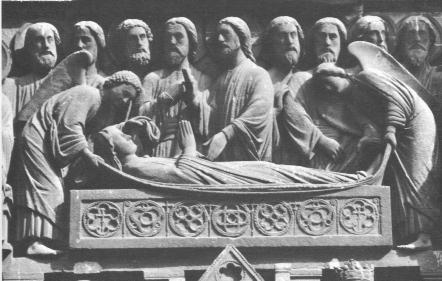
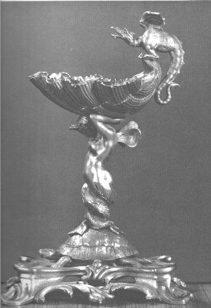
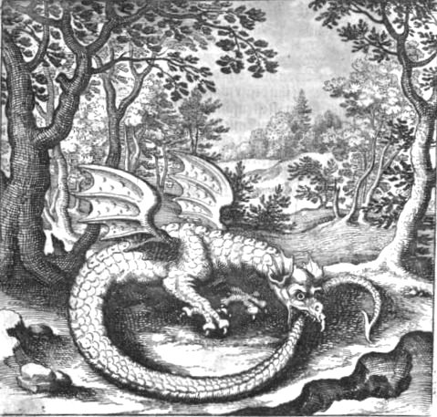
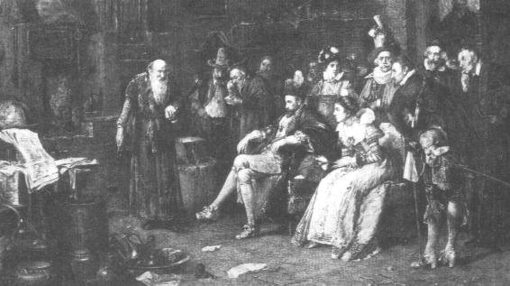
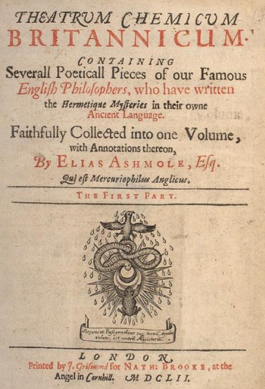

Cosmopolite Alexandre Sethon
revu le 4 janvier 2004
Plan : I. Introduction - II. l'alchimie d'Alexandre Sethon - III. Etudes sur Alexandre Sethon [1. George Ranque - 2. la recension de Pierre Borel - 3. Sur l'alchimie de Newton, B.J. Dobbs - 4. Là-bas, Huysmans - 5. Dictionnaire et Fables, Pernety - 6. Monnaies alchimiques, J. van Lennep - ] - IV. Notes sur la vie du Cosmopolite [1. Louis Figuier - 2. Jacques Sadoul - 3. Lucien Gérardin - 4. Beety Dobbs - 5. Herbert Redgrove ] - V. Clovis Hesteau de Nuysement et la confusion du Traité du Sel -
Un traité d'alchimie, l'un des plus célèbres, avec l'Entrée ouverte au Palais fermé du roi [Philalèthe], les Douze portes [Ripley], les Figures Hiéroglyphiques [attribué à N. Flamel] a été écrit par un inconnu dont on sait, à vrai dire, peu de choses. Cet ouvrage s'appelle le Traité de la Nature et cet inconnu, un homme qui se nommait Alexandre Sethon. Le manuscrit fut imprimé en 1604. Il est plus connu sous le nom de Nouvelle Lumière Chymique ou traité du Mercure et c'est le seul ouvrage de Sethon. C'est d'abord Louis Figuier qui nous permettra de retracer les portraits d'Alexandre Sethon et de Michel Sendivogius, à partir de son remarquable - quoique bien partial - ouvrage L'Alchimie et Les Alchimistes [Hachette, 3ème édition, 1860], consultable sur le site Gallica de la bnf [Bibliothèque nationale de France]. Cet extrait, qui reprend tout le chapitre du Cosmopolite est suivi d'un autre chapitre sur notre alchimiste, dû à Jacques Sadoul [Le Trésor des alchimistes, J'ai Lu, 1970] , qui, à plus d'un siècle de distance, apporte quelques précisions sur l'un des alchimistes les plus étonnants du cortège de la Tourbe des philosophes. Nous avons aussi repris un petit chapitre que lui consacre Lucien Gérardin dans son Alchimie [Art, Culture, Loisir, 1972] et des extraits d'un des meilleurs livres actuellement disponibles sur l'alchimie et ses bases : les Fondements de l'Alchimie de Newton, de Betty J. Teeter Dobbs [Guy Trédaniel, 1981]. On lira aussi avec profit l'Alchimie de J. van Lennep [Dervy, 1985] et les Théories et symboles des alchimistes d'Albert Poisson [Chacornac, 1891]. Nous avons fait également appel aux ressources des bibliothèques étrangères, notamment l'Université de Virginie. Un livre sur le sujet peut y être consulté en ligne, dû à Herbert Stanley Redgrove [1887-1943], Alchemy : Ancient and Modern, dont nous donnons des extraits sur les deux Cosmopolite.
Nous ferons remarquer au lecteur que le livre de L. Figuier est consultable sur le site hermétisme et alchimie de T. Ducreux. Cette reproduction n'est pas absolument identique au texte numérisé du site Gallica de la bnf. Une note est ajoutée en trop et deux passages sont intercalés. Nous avons corrigé ces modifications et le lecteur verra donc ici le texte de l'édition originale de 1860. Dans le fond, on verra que les récits sont à peu près superposables. En résumé, on peut en dire qu'Alexandre Sethon effectua des opérations que l'on assimile aux transmutations métalliques et que ces opérations ont posé ou posent toujours un problème à la critique historique : L. Figuier s'en tire par d'improbables pirouettes et ne convainc personne. Voilà donc un exemple bien remarquable et qui nous laisse comme un parfum de nostalgie en réveillant en nous le vieux rêve de la transmutation. Au XXIe siècle pourtant, il semble tout à fait irréaliste et faux de supposer qu'une transmutation ait pu s'opérer par basse température et sur des matériaux aussi divers que l'antimoine, l'acier (!), etc. Conservant là-dessus une attitude rationnelle, c'est donc avec le plus grand regret que nous nous obligerons à révoquer en doute la réalité de ces transmutations. La référence au lapis-lazuli est suffisamment importante pour qu'il faille s'attacher plutôt à son utilisation dans l'art de contrefaire certaines pierres gemmes. Mais nous ne pouvons, en revanche, douter un instant de la sincérité d'Alexandre Sethon, qui paraît en tous points droit et honnête et qui, comme le dit L. Figuier, devait souffrir le martyre sans parler. Sendivogius nous montre, en revanche, le portrait du parfait souffleur, hypocrite, mercanti, avide de richesses, pauvre de coeur et de surcroît falsificateur, puisque le traité du Soufre n'est qu'une copie remaniée du traité du Mercure, seul ouvrage authentique - répétons-le - d'Alexandre Sethon. Le Traité du Sel semble avoir été rédigé par Michel Sendivogius et son contenu philosophique a été remployé par le sieur de Nuysement, cf. section Alchimie en Alsace Lorraine.
II. l'alchimie d'Alexandre Sethon
Nous emprunterons d'abord ce texte à Jacques Van Lennep [Alchimie, Dervy, 1985]
Quelques figures romanesques apparurent encore, comme celle d'Alexander Seton.[Ferguson J, pp 376-377] Cet Ecossais,connu sous le nom de « Cosmopolite », quitta Edimbourg en 1602 pour rejoindre, près d'Amsterdam, Jakob Hanssen qu'il avait recueilli un an plus tôt, lors d'un naufrage. Pour le remercier de son séjour, Seton lui offrit une pièce d'or transmutée sous ses yeux. Ensuite, il apparut à Bâle, Strasbourg, Francfort, Cologne, Hambourg, Munich où ses exploits attirèrent l'attention de Christian Il, électeur de Saxe. Celui-ci le fit venir à Dresde où il le tortura pour lui arracher son secret, mais en vain. Il l'oublia dans un donjon jusqu'à ce qu'un autre adepte, Michel Sendivogius entreprit de le libérer. L'évasion réussit et les deux compères gagnèrent Cracovie au plus vite. Seton y mourut le dernier jour de 1603 ou le premier de 1604, après avoir offert sa poudre de projection à son libérateur. Sendivogius qui passa pour Polonais, était en fait Morave. [Micigno P., Michael Sendivogii Leben..., Hamburg, 1683 ; Hubicki W., Michael Sendivogius's Theory, its Origin and Significance in the History of Chemistry, in : Proceedings of the Tenth International Congress of the History of Sciences, Paris, 1964]C'est donc avec étonnement, surtout après les témoignages successifs de Lenglet Dufresnoy, Louis figuier, Jacques Sadoul, Lucien Gérardin, Jacques van Lennep, etc. que nous apprendrons, infra, par B.J. Dobbs que ce serait Michel Sendivogius qui serait l'auteur de la Nouvelle Lumière Chimique. Il y aurait là bien matière à discuter...Né en 1566, [Sendivogius] échangea avec Rodolphe II, une partie de sa poudre contre le titre de conseiller. Auréolé de prestige, il alla ensuite transmuter devant le roi Sigismond à Varsovie, puis le duc de Wurtemberg. Frédéric Müllenfels, un alchimiste évincé, l'avertit que le duc envisageait de lui arracher son secret par la force. En fait, il ne s'agissait que d'un stratagème pour forcer Sendivogius à s'enfuir et lui voler sa poudre sur la route. C'est ce qui advint. Sur plainte de Sendivogius, Rodolphe II intervint auprès du duc qui fit pendre Müllenfels en 1607.
La Nouvelle Lumière Chymique est une oeuvre supérieure, l'une de celles qui résistent aux interprétations hatives et qui restent muettes pour les étudiants plus pressés de résultat que de philosophie. L'introduction s'ouvre par des phrases vides de sens pour qui n'a jamais ouvert son esprit à un texte hermétique. Voyons quelques extraits :
"Il n'y a pas longtemps, et j'en parle comme savant, que plusieurs personnes de grande et petite condition, ont vu cette Diane toute nue." [Introduction]
Les Adeptes ont ce pouvoir, souvent fascinant, de dire des choses banales là où ils expliquent les vérités de l'Art. Ainsi, les personnes de haute condition [eugeneia] représentent par cabale eugeioV [sol fertile] qui désigne le principe Terre et indique un limon boueux d'où l'on peut extraire et le Sel et l'un des Soufres rouges.
"Et quoiqu'il se trouve quelques personnes qui, par envie, ou par malice, ou par la crainte qu'ils ont que leurs impostures ne soient découvertes, crient incessamment que, par un certain artifice qu'ils couvrent sous une vaine ostentation de paroles fastueuses et ampoulées, l'on peu extraire l'âme de l'Or et la rendre à un autre corps : ce qu'ils entreprennent témérairement et non sans grande perte de temps, de labeur et d'argent." [Introduction]
Encore un passage entièrement tissé de cabale. L'Âme de l'or, c'est la quintessence, c'est-à-dire le « cinquième elément » ou chaux métallique que les Anciens ne pouvaient pas réduire à l'un des Quatre Eléments. Car cette chaux procède à la fois de la Terre par son origine, de l'Eau par son devenir, de l'Air par cabale et du Feu, par artifice.
"Au contraire, je puis assurer avec raison que celui qui pourra, par voie philosophique, sans fraude et sans déguisement, teindre réellement le moindre métal du monde, soit avec profit, ou sans profit, en couleur de Sol ou de Lune, demeurant et résistant à toute sorte d'examens requis et nécessaires, aura toutes les portes de la Nature ouvertes pour rechercher d'autres plus hauts et plus excellents secrets [...]" [Introduction]
Le Soleil et la Lune ont des sens bien différents selon les phases de l'oeuvre et souvent d'un alchimiste à l'autre. Néanmoins, des constantes sont retrouvées, permettant de dénouer l'écheveau de l'entrelacs que les Adeptes ont tissé avec plus d'envie que de malice. Les articles du Dictionnaire mytho-hermétique nous seront ici de quelque secours. L'article Lune a déjà été cité dans le commentaire que nous avons donné de la Lettre aux vrais disciples d'Hermès, de Limojon de Saint-Didier. Voici pour le soleil :
Soleil. La grande divinité des Egyptiens, des Phéniciens, des Atlantes, etc. fut honorée sous divers noms chez les différentes Nations. On le confondit presque partout avec Apollon, et on lui donnait la même généalogie. Chez les Chymistes le Soleil est l'or vulgaire. Les Philosophes appellent soleil leur soufre, leur or. Le Soleil des Sages de source mercurielle, est la partie fixe de la matière du Grand Oeuvre, et la Lune est le volatil ; ce sont les deux dragons de Flamel. ils appellent encore Soleil le feu inné dans la matière. Comme le volatil et le fixe sont tirés de la même source mercurielle, les Philosophes disent que le Soleil est le père, et la Lune la mère de la pierre des Sages. Quelquefois, ils l'entendent à la lettre quand ils parlent de la matière éloignée de l'oeuvre, parce qu'il s'agit alors de cette vapeur que le Soleil et la Lune célestes semblent former dans l'air, d'où elle est portée dans les entrailles de la terre pour y former la semence des métaux, qui est la propre matière du Grand Oeuvre. Les Adeptes ont fonné par similitude et par allégorie les noms d'arbre solaire et d'arbre lunaire au soufre rouge, et au soufre blanc qu'ils font pour parvenir à la perfection de leur poudre de projection. Voyez Arbre. [Dictionnaire]
On voit de quelle manière les alchimistes ont embrouillé cette histoire de soleil et de lune : on peut y voir aussi, ce que Pernety ne dit pas ici mais ailleurs, dans ses Fables Egyptiennes et Grecques, des symboles égyptiens, en l'espèce Osiris et Isis. Il est intéressant de noter que Pernety emploie l'expression « feu inné de la matière ». C'était à l'époque de la théorie du phlogistique de Stahl mais il n'est pas douteux que les alchimistes, dans leurs incessantes opérations, aient réussi des réactions d'oxydo-réduction où des substances changaient de couleur, soit du fait de la réaction chimique, soit du fait de la température plus ou moins élevée.
"Au reste, j'offre aux enfants de la Science ces présents Traités, que je n'ai écrits que sur ma propre expérience, afin qu'en étudiant et mettant leur application et toute la force de leur esprit à la recherche des opérations cachées de la Nature [...]" [Introduction]
Voila qui pourrait faire se méprendre sur les traités que l'on doit à Alexandre Sethon. Répétons qu'il est l'auteur de trois traités qui ont été réunis, manifestement après son décès, peut-être par Sendivogius. Il s'agit de la Novum lumen chymicum, de l' Aenigma philosophorum, et enfin du Dialogus Mercurii, Alchylistae et Naturae. Le traité sur le Soufre qui lui est imputé est un ouvrage supposé qui a sans doute été compilé par Sendivogius, et le traité sur le Sel est de la main du sieur de Nuysement.
"Les personnes de cette farine ne seront jamais admis dans les plus secrets mystères de ce saint Art : parce que c'est un don de Dieu auquel on ne peut parvenir que par la seule grâce du Très-Haut, qui ne manque pas ou d'illuminer l'esprit de celui qui la lui demande avec une humilité constante et religieuse, ou de la lui communiquer par une démonstration oculaire d'un maître fidèle et expert [...]" [Introduction]
Il y a là encore jeu de mots, car la farine a un sens caché où l'on devine des subtances porphyrisées, qu'il est essentiel d'obtenir pures dans la préparation des strass colorés [voir la voie humide]. Voyez aussi ce que nous disons sur la farine [voir ce mot en recherche] lors de l'examen du Triomphe hermétique. Quant au don de Dieu, nous avons rabaché dans ces pages qu'il fallait y lire un don du Soufre, à cause de l'assonance entre les mots qeion et qeioV qui montre que l'une des matières premières est un sulfure, ou plutôt un sulfate. On peut gager d'ailleurs qu'il s'agit de deux sulfates, l'un s'obtenant à partir d'un limon boueux, le « glais » dont parle E. Canseliet dans ses Etudes de symbolisme alchimique [Alchimie, Pauvert], l'autre s'obtenant à partir d'un minéral connu sous le nom de « pierre de Jésus ». Nous avons commenté tout cela dans la section de la réincrudation. Quand Sethon dit que Dieu ne manque pas « d'illuminer l'esprit », il parle d'or parce qu'il nous précise la façon de spiritualiser le Mercure [principe Esprit]. L'humilité constante est le propre des personnes qui se courbent vers la terre : c'est indiquer par là l'origine chthonienne de l'un des Soufres. Enfin, la démonstration oculaire qui « rend l'occulte manifeste » exige de bonnes lunettes, dont est assurément pourvu le

FIGURE I
(Atalanta fugiens, planche LXII)vieillard qu'éclaire la lanterne qu'il porte de la main gauche, tout en se guidant d'un bâton qu'il tient de sa main droite, tandis qu'il avance prudemment sur un sentier boueux, en suivant les empreintes de Diane aux cornes lunaires. C'est l'emblème XLII de l'Atalanta fugiens de Michael Maier qui permet de comprendre le sens du mot stibew et qui donne la clef de la connaissance du véritable stibium de Tollius et de l'antimoine saturnin d'Artephius...En un mot, notre vieillard suit à la trace les pas de la Lune cornée.
L'introduction de la Nouvelle Lumière chymique se termine par cette maxime :"La simplicité est le vrai sceau de la Vérité."
La cabale hermétique permet de trouver une traduction lumineuse de cette phrase qui, en elle-même, peut paraître creuse mais qui, pourtant, est de circonstance. Voici pourquoi : tous les grands Adeptes nous disent que l'Oeuvre se fait avec une seule matière, un seul fourneau, un seul feu et même, certains vont à dire, d'un seul régime : savoir cuire et décuire. La simplicité renvoie donc à quelque chose qui est unique, seule, simple. Or en grec, seul se dit ioV [un seul, un, une seule part] homonyme de ioV [venin, rouille du fer, vert-de-gris] et en proche assonance phonétique de ion [violette, violette noire, d'un bleu ou d'un violet sombre]. Voici ce que l'on trouve dans Geber :
"Au reste le Soufre se sublime, parce que c'est un Esprit. Si on le mêle avec Vénus, et que des deux on en fasse une Composition, on en fait une couleur violette fort belle. Il se mêle tout de même avec le Mercure, et par la cuisson il s'en fait un Azur fort agréable." [Somme de perfection]
Geber nous explique l'allégorie de la sublimation des colombes de Diane que le Philalèthe a caché sous des hardes épaisses. S'il parle du Soufre comme d'un Esprit, c'est que nous en sommes au stade de la dissolution radicale, de la putréfaction, dont la couleur traditionnelle est le noir violet, couleur que prend l'azur au sommet des plus hautes montagnes. La Vénus qu'évoque Geber n'a rien à voir avec Aphrodite, car il parle ici de Saturne, nom que porte aussi Vénus en cette époque de l'oeuvre. Mais sur la couleur violet elle-même, relisez ce qu'on en dit, en citant Chevreul, dans le commentaire qu'il donne d'un traité supposé d'Alphonse X. Voyez aussi ce que Jean d'Espagnet dit des couleurs fondamentales de l'oeuvre :
"Trois espèces de très belles fleurs doivent être cherchées et trouvées au fond de ce jardin des philosophes : des violettes rouge vif, un lys blanc et l''amarante pourpre et immortelle." [Oeuvre secret, chap. 53]
Et l'on se tromperait en confondant ces violettes avec l'amarante pourpre ou Immortelle, qui clôt la Grande coction. Le sceau renvoie au « sceau du secret », c'est-à-dire à aporrhtoV, que l'on peut rapprocher de aporrew ou de aporron qui désignent une substance qui coule [respectivement : couler de, découler et rejeter, avec l'idée de jeter au rebut, c'est-à-dire expulser - c'est le même sens que l'on trouve en latin avec cado et cassito, proche de cassis, casque]. Enfin, la Vérité se dit alhqeia : le symbole de la Vérité était un ornement en saphir que portait le grand-prêtre égyptien. Voila qui donne à réfléchir quand on sait qu'Alexandre Sethon recherchait, à un moment, du lapis-lazuli avec lequel on peut imiter un saphir...Nous laisserons le lecteur seul juge de ce rapprochement inattendu et il lira dans la section qui lui est destiné la suite du commentaire de la Nouvelle Lumière chymique.
Il serait fastidieux de rechercher toutes les occurences où Fulcanelli et E. Canseliet citent Sethon. Mais le destin exceptionnel de cet alchimiste doit nous conduire à examiner soigneusement toutes les pistes, tous les chemins que d'autres ont été amenés à emprunter en lisant ses oeuvres. Dans Myst. , Fulcanelli donne indiféremment au Cosmopolite le nom de Sethon ou de Sendivogius, ce qui ne laisse pas d'étonner.
"Le sage trouvera notre pierre jusque dans le fumier, écrit le Cosmopolite, tandis que l'ignorant ne pourra pas croire qu'elle soit dans l'or." [Myst, p. 60]
C'est un passage des plus importants, car le fumier contient un sel qui le situe dans la sphère de Vénus-Aphrodite et que nous avons examiné dans la section Compendium. On pourrait penser que l'allusion au fumier est anodine mais il n'en est rien, car voila ce que l'on peut lire sur les fumiers.
La préparation d'un bon fumier présente bien des points d'analogie avec la préparation de notre Mercure. Il convient d'abord de dire que le fumier est riche en potasse, qui est cette base dont nous parlons dans la section compendium. Ensuite, la description du fumier préparé sous la forme d'une matièe noire, la putréfaction, sont évidemment à mettre sur le même plan que la phase de dissolution qui s'opère au début du 3ème Oeuvre. Mais nous savons qu'il existe plusieurs moments de l'oeuvre caractérisés par cette couleur noire : on la trouve au moment de la séparation qui intervient dans l'attaque du salpêtre par un vitriol. C'est la tête morte de l'eau-forte qui un résidu noir que l'on retrouve au fond de la cornue [voir tartre vitriolé]. L'évocation du carbonate d'ammoniaque n'est pas moins important et nous permet de comprendre l'importance extrême que revêt dans l'oeuvre les propriétés des sulfures et des sulfates, sels dans lesquels un agent volatil peut devenir fixe. C'est peut-être l'un des artifices dont parlent Fulcanelli et Sethon. La référence à la chaux est non moins importante car elle joue un rôle des plus importants dans les phénomènes d'oxydo-réduction qui se produisent durant la grande Coction, en ramenant des sels à leur plus bas niveau d'oxydation, voire même à l'état de métal extrêmement divisé. Les sels phosphatés, dont on a très peu parlé jusqu'ici, jouent un grand rôle en tant qu'agents minéralisateurs [voir section du Mercure, et notamment les expériences de J.J. Ebelmen]. Il n'est pas question, bien sûr, d'envisager un seul instant que Sethon ait eu connaissance ou même l'intuition des éléments que les chimistes du XIXe siècle ont retrouvé dans le fumier, comparés à ceux qui permettent de réaliser des synthèses minéralogiques. Et pourtant, ce n'est pas la première fois que nous repèrons dans des textes d'étranges intuitions chez les alchimistes [voyez à cet égard les textes de Jean d'Espagnet, de Ripley, de Sethon, de Limojon de Saint-Didier (1,2)].
C'est E. Canseliet qui attire l'attention des étudiants sur le fumier - proclamé matière des Sages par cabale - à l'occasion de l'une des préfaces des DM :"Dans notre explication de la scène macabre, illustration de la quatrième clef de Basile Valentin [Editions de Minuit], nous avons parlé de cette matière, symboliquement désignée par le fumier, que les chimistes connaissent bien, lors même qu'ils la considèrent comme un négligeable résidu et qu'ils n'en fassent aucun cas." [DM, I, p.33]
Mais de quel résidu parle Canseliet ? Car à la page suivante, voici ce qu'il écrit, citant Arnaud de Villeneuve :
"Cependant rassemble à part le noir surnageant puisqu'il est l'huile et le vrai signe de la dissolution ; parce que ce qui est dissous parvient au plus haut, d'où l'on sépare des choses inférieures ce qui s'élève et qui cherche à atteindre d'autres lieux, comme un corps d'or. D'autre part, garde celui-ci avec précaution, qu'il ne s'envole pas en fumée." [Rosaire des philosophes, Lugduni, 1586]
et Canseliet d'ajouter :
" - Tel est bien notre fumier, eût approuvé le Maître, notre fumier que les Philosophes désignèrent par les expressions de soufre noir, soufre de nature, prison de l'or, tombeau du Roi, ou par les noms de laton, laiton, corbeau, Saturne, Vénus, cuivre, airain, etc." [DM, I, p. 34]
Ces citations successives ne laissent pas de nous plonger dans la perplexité. Quoi ? On voudrait nous faire croire que l'huile des Sages est cette matière noire qui vient à la surface du composé alors que nous savons qu'il s'agit au contraire d'une solution radicale, en une époque de l'oeuvre où en principe, plus rien ne serait visible qu'un chaos ? Il serait vain, alors, de vouloir traduire ces allégories sous des formules chimiques, des corps éprouvés, des sels épurés...La solution peut être repérée dans la dernière citation, car tous les épithètes employés par Canseliet se rapportent à l'état de l'Airain dans la période de putréfaction, première partie de la Grande coction, avant la réincrudation. Mais l'allégorie conserve une part de vérité, si l'on veut bien admettre que le précieux Airain qui contient l'Acier magique subit un sort qui, au fond, n'est pas si différent que cela du carbonate d'ammoniaque. C'est donc quelque principe de fixation qu'il faut débusquer...Poursuivons. Un second passage des Mystères met l'accent sur le Mercure :
"[...] mais il est un esprit igné introduit dans un sujet d'une même nature que la Pierre ; et, étant médiocrement excité par le feu extérieur, la calcine, la dissout, la sublime et la résoud en eau seiche, ainsi que le dit le Cosmopolite." [Myst, p. 107]
Que le lecteur se rapporte à notre commentaire des Douze portes de Ripley ; il verra que la Pierre accomplie n'est faite que de deux Eléments sur les Quatre de la Tradition. Que la calcination [katakauma] n'est autre que la litière [katakeimai], à proprement parler, que l'on aperçoit

FIGURE II
(dessin d'après un croquis de Henri de Lintaut, l'Aurore et
l'Ami de l'Aurore, mss. du XVIIe siècle, bibliothèque de l'Arsenal, n° 3020)sur cette figure à la plume de Henri de Lintaut, que notre Terre brûlée est celle d'où l'on tire le meilleur Vin pour l'oeuvre, à en croire Raymond Lulle [1, 2, 3] et Albert le Grand [1, 2]. Que la sublimation est l'opération nécessaire par laquelle procède la calcination des Sages et que cette sublimation n'est autre que la dissolution des Corps, toutes opérations qui se réduisent à cuire et décuire, c'est-à-dire à fixer le volatil et à volatiliser le fixe. Ce sont les alchimistes eux-mêmes qui nous assurent, en fait, que toutes les opérations se résument à une seule, qui est d'obtenir la coagulation très lente de leur eau mercurielle. On s'attachera particulièrement à ce troisième extrait :
"[...] c'est ce qui fait dire au Cosmopolite, dans son Enigme, qu'elle [l'eau] était rare dans l'île...Cet auteur nous la marque plus particulièrement par ces paroles : elle n'est pas semblable à l'eau de la nüe, mais elle en a toute l'apparence. En un autre endroit, il nous la décrit sous le nom d'acier et d'aimant, car c'est véritablement un aimant qui attire à lui toutes les influences du ciel, du soleil, de la lune et des astres, pour les communiquer à la terre..." [Myst, p. 119]
Cette eau de nuée [nejoV] s'apparente aux noires ténèbres de la mort. C'est le résultat de la dissolution qui est exprimé, cette lutte entre les principes contraires, l'un de vertu céleste, voilé par les hiéroglyphes astraux, l'autre de vertu terrestre qu'il convient de joindre par l'artifice dont les alchimistes ont prudemment réservé l'épithète par énigmes et allégories de toute sorte. Pour l'acier et l'aimant, voyez la section Matière. Il est de fait que seul le Mercure philosophique peut entraîner la sublimation des « esprits » métalliques, c'est par cabale qu'il faut l'entendre. Nous ne relèverons pas l'extrait que donne Fulcanelli du traité du Soufre puisqu'il s'agit d'un ouvrage supposé de Sethon, probablement compilé par Sendivogius. Notons pour mémoire qu'il s'agit d'un passage où Fulcanelli parle du Miroir [katopthV] de la Science philosophique, c'est-à-dire du lieu où les Âmes métalliques sont jugées, c'est-à-dire où les chaux des métaux sont grillées [katopteuw] ; voyez ici la section de l'Olympe hermétique.
"Enfin, une solution seconde, celle du Soufre, rouge ou blanc, par l'eau philosophique, fait l'objet du douzième et dernier bas-relief. Un guerrier laisse tomber son épée et s'arrête, interdit, devant un arbre au pied duquel surgit un bélier ; l'arbre porte trois énormes fruits en boules, et l'on voit émerger de ses branches la silhouette d'un oiseau. On retrouve ici l'arbre solaire que décrit le Cosmopolite dans la Parabole du Traité de la Nature, arbre duquel il faut extraire l'eau." [Myst, p. 131]
Ici, Fulcanelli n'est pas clair et il semble confondre la voie sèche et la voie humide. L'arbre solaire a été examiné dans plusieurs sections [1, 2, 3, 4] et le bélier nous indique la préparation de l'un des principes du dissolvant
"Désormais, il [le guerrier, c'est-à-dire notre Artiste] ne lui restera plus qu'à imiter Saturne, lequel, dit le Cosmopolite, « puisa dix parties de cette eau, et incontinent prit le fruit de l'arbre solaire et le mit dans cette eau [...] »" [Myst, p. 132]
et les proportions à respecter. Il s'agit bien du Mercure puisque Sethon évoque Saturne. Fulcanelli examine ensuite les chaux métalliques que symbolise, d'après lui, le portail de la Vierge de Notre-Dame de Paris et il cite un texte de la bibliothèque de l'Arsenal :
"Le soleil marque l'or, le vif argent Mercure - Ce qu'est Saturne au plomb, Vénus l'est à l'airain - La Lune de l'argent, Jupiter de l'étain - Et Mars du fer sont la figure." [La Cabale Intellective]
toutes choses que nous savons à présent bien repérer et qui indiquent les régimes planétaires, comme l'indique nettement le regroupement mais remarquez. Notez qu'ici ils sont intercalés avec les hiéroglyphes célestes des métaux et que, à titre d'exemple, Vénus qui représente l'airain ne désigne pas Aphrodite mais le Rebis dans son premier état. Au reste, voila ce portail

FIGURE III
(portail de la Vierge, Notre-Dame de Paris)Nous avons la succession, de gauche à droite : Saturne - Jupiter - Mars - Soleil - Vénus - Mercure - Lune qui respecte les cercles planétaires du système établi par Ptolémée. C'est l'occasion de donner le passage suivant qui fait la transition avec ce portail céleste :
"Le Cosmopolite, insistant davantage sur la qualité du vase et sa nécessité dans le travail, affirme qu'en l'Oeuvre « il y a ce seul Lion verd qui ferme et ouvre les sept sceaux indissolubles des sept esprits métalliques, et qui tourmente les corps jusqu'à ce qu'il les ait entièrement perfectionnés, par le moyen d'une longue et ferme patience de l'artiste »." [Myst, p. 184]
il est essentiel de retenir que la température, à partir du régime de la Lune doit être abaissée de façon très progressive et l'Artiste fera bien ici de se rapporter à ce que nous disons de la dévitrification. Quant au sel de patience, nous en parlons dans la section des blasons alchimiques. Dans le chapitre consacré à bourges, Fulcanelli se réfère au traité du Sel, alors qu'il a été écrit par le sieur de Nuysement [Traictez de l’harmonie et constitution généralle du vray sel, secret des philosophes, et de l’esprit universelle du monde... [sic], Paris, 1621, rééd. La Haye, 1639 (trad. latine, allemande, anglaise...)]. Mais peut-être s'agit-il d'une confusion ? Puisque les dates de publication entre le Traité du Sel [1669] et celui de Nuysement [1621] ne concordent pas... Mais tout s'éclaire si l'on s'avise qu'en fait, il y a deux traités du Sel qui ont été rédigés à peu d'intervalle : celui attribué à Sendivogius [en fait, compilé sur des notes d'Alexandre Sethon], et le second, rédigé par Nuysement. En revanche, il y a une analogie incontestable entre « ce petit Poisson nommé Echeneis » [Nouvelle Lumière chymique] et le poisson « qui nage dans notre mer philosophique » [Traité du Sel, J. d'Houry, Paris, 1669] et qui rappelle plutôt l'Oeuvre secret d'Hermès de Jean d'Espagnet.
"Quant au sujet grossier de l'Oeuvre, les uns le nomment Magnesia lunarii ; d'autres, plus sincères, l'appellent Plomb des Sages, Saturnie végétable. Philalèthe, Basile Valentin (1, 2), le Cosmopolite le disent Fils ou Enfant de Saturne." [Myst, p. 197]
Là encore, Fulcanelli brouille les pistes car ce sujet grossier n'est pas, comme on pourrait le penser, un sujet minéral que l'on trouve dans la nature, mais c'est l'état de la matière telle qu'elle apparaît à la fin de la phase de la dissolution, c'est-à-dire dans la 1ère partie du 3ème oeuvre : l'épithète « Enfant de Saturne » est à cet égard incontournable et désigne le stibium de Tollius, c'est-à-dire l'antimoine saturnin d'Artéphius. Mais il est vrai que sa matière initiale peut se trouver -mais en partie seulement - dans le minéral qui a pour hiéroglyphe céleste le signe astronomique du Bélier et qui désigne une terre vitriolique.
Dans les DM, Fulcanelli évoque Sethon dans le chapitre sur la Salamandre de Lisieux :"Le Cosmopolite, que Louis Figuier croit être l'alchimiste connu sous le nom de Sethon et d'autres sous celui de Michaël Sendivogius, nous décrit [pierre philosophale] son aspect translucide, sa forme cristalline et sa fusibilité dans ce passage : « Si l'on trouvait, dit-il, notre sujet dans son dernier état de perfection, fait et composé par la nature ; qu'il fût fusible comme de la cire ou du beurre, et que sa rougeur, sa diaphanéité et clarté parût au dehors, ce serait là véritablement notre benoîte pierre.»" [DM, I, p. 257]
On voit bien que Fulcanelli ne prend pas parti, du moins dans ce passage. C'est d'autant plus étrange que le livre de L. Figuier a paru en 1860 et qu'Eugène Chevreul, dans ses articles sur Cambriel [Journal des Savants, 1851] dit clairement que c'était Alexandre Sethon l'auteur du « Cosmopolite ». Et la note de bas de page du dernier passage que nous avons cité se réfère au Traité sur le Sel [que Chevreul appelle le traité du Vrai Sel secret et qui se rapproche plus du titre de l'ouvrage attribué à Nuysement]. Le chapitre sur Louis d'Estissac donne à Fulcanelli l'occasion de citer Limojon de Saint-Didier, à propos du vieillard de l'oeuvre, autre symbole du Mercure. Mais ici, le passage intéressant, sans rapport direct avec le Cosmopolite, est le suivant :
"Le premier des trois panneaux que séparent les cariatides, celui de gauche, offre une fleur centrale, notre rose hermétique, deux coquilles du gene peigne, ou mérelles de Compostelle..." [DM, I, p. 338]
On ne saurait mieux dire d'où il faut tirer l'eau bénite ou benoite, épithètes qu'emploient d'ailleurs aussi bien Fulcanelli que son disciple. [voir le mot coquille en recherche]. La coquille [kogch], c'est aussi bien un vase en forme de coquille qu'une lentille [voir la section des blasons alchimiques et ce mot en recherche], aliment des pauvres. N'oublions pas que les alchimistes insistent que l'une des voies est réservée expressément aux pauvres et aux indigents : il y a là une indication. Enfin, le mot kogculh désigne un coquillage d'où l'on tire le pourpre, ce qui, de fait, est exactement ce que l'on souhaite préparer par notre Mercure. Dans un autre passage, c'est toujours le Mercure qui est évoqué :
"Notre dissolvant, tout esprit, y joue le rôle symbolique de l'aigle enlevant sa proie, et c'est la raison pour laquelle Philalèthe, le Cosmopolite, Cyliani, d'Espagnet et plusieurs autres nous recommandent de lui donner l'essor, en insistant sur la nécessité de le faire voler." [DM, I, p. 386]
Il s'agit des sublimations philosophiques, voilées par Philalèthe sous l'allégorie des deux colombes de Diane. Voici ce que nous dit Pernety à l'article sublimation de son Dictionnaire :
Sublimation. (Sc. Herm.) Purification de la matière par le moyen de la dissolution et de la réduction en ses principes. Elle ne consiste pas à faire monter la matière au haut du vase, et l'y faire attacher, séparée du caput mortuum et des fèces; mais à purifier, subtiliser et épurer la matière de toutes parties terrestres et hétérogènes, lui donner un degré de perfection dont elle était privée, ou plutôt la délivrer des liens qui la tenaient comme en prison, et l'empêchaient d'agir.On se tromperait donc en croyant que les alchimistes ont voulu désigner, comme certains spagyristes le pensent, du sel armoniac vulgaire [chrlorhydrate d'ammoniaque, cf. supra] ou du sublimé [doux ou corrosif] et, comme l'ajoute Pernety, plusieurs ont été trompés par le terme de « Sublimé » qu'ils ont pris pour le nom de la matière dont les Philosophes font leur magistère [article Sublimé, Dictionnaire]. Par Mercure sublimé, il faut entendre l'eau vive seconde de Limojon [voir le Triomphe hermétique], c'est-à-dire le véritable Mercure philosophique ou Mercure animé. les termes d'animation ou de sublimation sont donc superposables dans la cabale hermétique. Pernety dit encore :
La sublimation est la première préparation nécessaire à la matière, tant pour devenir mercure, que pour former le soufre et la pierre. D'Espagnet dit que c'est la préparation dont les Philosophes n'ont pas parlé, parce que c'est un ouvrage manuel que tout le monde peut faire, même sans être instruit des opérations de la Chymie vulgaire. Elle est sans doute cette préparation des agents, difficile pardessus toute autre chose du monde, comme le dit Flamel.. mais très aisée à ceux qui la savent.
C'est le second degré, et très nécessaire, par où il faut passer pour parvenir à la transmutation des corps. On entend souvent sous le terme de sublimation, la fixation, l'exaltation et l'élévation. Elle approche même beaucoup de la distillation; car de même que dans celle-ci l'eau monte et se sépare de toutes les parties phlegmatiques et purement aqueuses, et laisse le corps au fond du vase, de même dans la sublimation le spirituel se sépare du corporel, le volatil du fixe dans les corps secs, tels que sont les minéraux. On extrait des choses admirables des minéraux par le moyen de la sublimation. On en fixe beaucoup, et on les rend propres à résister aux atteintes les plus vives du feu. Pour y réussir on rebroye le sublimé avec ses fèces, on répète la sublimation, et cela jusqu'à ce que rien ne se sublime plus. Lorsque tout est fixe, on le retire du vase, et on l'expose à l'air ou à la cave, pour en faire une huile, qu'on digère ensuite à un feu lent pour le réduire en pierre. Ces pierres ont des propriétés surnaturelles, selon le minéral dont elles sont tirées.
La sublimation adoucit beaucoup de corrosifs par la conjonction de deux matières, et rend corrosives beaucoup de choses douées. La plupart de celles-ci deviennent styptiques, austères, amères. Paracelse [1, 2] dit que les métaux sublimés avec le sel armoniac se résolvent en huile quand on les expose à l'air, et se durcissent en pierres quand on digère cette huile au feu. Cette sublimation est purement une opération de la Chymie vulgaire: il ne faut pas la confondre avec la sublimation Philosophique de laquelle nous avons parlé au commencement de cet article."quand on lui donne ce nom dans ce sens-là, on a égard à la purification, et à la séparation qui se fait alors des parties grossières du laton des Philosophes, que l'azoth blanchit en le lavant de se simpuretés, appelées par quelques Philosophes les Immondices du mort."
Dans cette sublimation sont comprises, comme on l'a bien noté plus haut les opérations suivantes : distillation - assation [voir ce mot en recherche] - cuisson - coagulation - putréfaction - calcination - séparation - conversion des éléments.
"Les Philosophes ont représenté symboliquement cette opération par une aigle qui enlève un crapaud, par un serpent ailé qui en emporte un autre sans ailes [on trouve de semblables allégories dans les Fig. Hiér., mais aussi dans l'Iliade], par un dragon qui quitte son écaille, par le vautour qui dévore le foie de Prométhée, et par une infinité de fables et d'allégories dont on peut voir l'explication dans les fables Egypt. et Grecq. dévoilées." [Dictionnaire]
Mais là où Fulcanelli s'est montré envieux, c'est en amalgamant de façon littérale [un amalgame désigne un produit où opère le vif-argent vulgaire] la préparation du 1er Mercure ou eau-vive prime de Limojon et le Mercure sublimé [ou animé]. Ainsi, lorsqu'il désigne le couple alchimique de la planche 4 du Mutus Liber, il faut que l'on comprenne bien qu'il s'agit d'un sel de potassium [voir la section prima materia où nous dévoilons l'arcane] alors que le passage dont parle Fulcanelli [DM, I, p. 386] s'applique non pas à l'opération du 2ème oeuvre, mais à la putréfaction qui intervient au début du 3ème oeuvre [et qui regroupe les régimes de Mercure et de Saturne].
"Un excès de feu gâte tout ; cependant si l'amalgame philosophique est simplement rougi, et non calciné, il est possible de le régénérer en le dissolvant de nouveau, selon le conseil du Cosmopolite [...] N'activez pas trop la flamme à l'intérieur de votre lanterne, et veillez à ne point la laisser s'éteindre : vous tomberiez de Charybde en Scylla." [DM, II, p. 74]
Fulcanelli insiste sur les dangers qu'il y a à ne pas suivre une prescription tempérée du calorique. On peut voir dans l'Olympe hermétique le sort funeste de ceux qui ne savent pas maîtriser le char de Jupiter ; on peut aussi se référer au Tarot hermétique, en considérant la lame qui se nomme Maison dieu. Quant à Scylla et Charybde, ils désignent des monstres fabuleux, ou rochers de la mer Méditerranée, contre lesquels les vaisseaux se brisent. Les Argonautes ne les évitèrent [Pernety, Fables Egypt. et Grecq., livre 2, chap. 1] qu'en envoyant une colombe qui leur servit de guide. C'est dans le même esprit que doit ici raisonner l'Artiste dans cette période cruciale de l'Oeuvre. La lanterne figure le Feu elémentaire, c'est-à-dire celui du Mercure que ne fait qu'exciter le feu vulgaire. C'est ensuite le début de la coagulation de l'eau mercurielle qui donne l'occasion à fulcanelli d'écrire :
"C'est l'échénéis dont parle le Cosmopolite, le dauphin royal que les personnages du Mutus Liber s'évertuent à capturer..." [DM II, p. 130]
Cet échénéis, d'après Pernety, est un petit poisson de la forme d'une grande limace, lequel, si nous en croyons Pline l'Ancien, avait la vertu d'arrêter subitement les plus gros navires voguant à pleines voiles, dès qu'il s'y attachait. Pline dit que Marc-Antoine à la bataille d'Actium, et Caligula en éprouvèrent les effets [livre IX, 25 et livre XXXII, 1]. Des Philosophes chymiques comme d'Espagnet et Sethon ont donné ce nom à leur matière fixe, parce qu'elle fixe celle qui est volatile, en se réunissant avec elle, pour ne faire plus qu'un corps inséparable. C'est ainsi qu'en parle Sethon dans sa Parabole ou Enigme. Ce dauphin se voit aussi sur l'une des gravures du De Lapide Philosophorum de Lambsprinck.
Cette figure rassemble les arcanes que l'on rencontre dans le 3ème oeuvre. Le roi, assis, représente la Pierre au rouge ; il foule le dragon écailleux qui représente la putréfaction, ce qui signifie que nous sommes à un stade assez avancé de la grande Coction. La terre est le symbole, ici, de Délos, c'est-à-dire de la coagulation preogressive de l'eau mercurielle, en outre exprimée par le dauphin. Le bourdon, ou sceptre, tenu à la main gauche, représente le sel de patience sans lequel le Mercure se volatilise en laissant l'alchimiste frustré du résultat attendu. On distingue aussi un bouclier. Le centre de ce bouclier est un omphalos, c'est-à-dire comme l'écrit Pernéty :
"Nombril de la Terre. Les anciens Grecs donnèrent ce nom à l'île de Délos, parce qu'ils disaient qu'elle était le milieu de la Terre. Ils le prouvaient par la Fable, qui dit que Jupiter fit partir deux aigles, l'une à l'Orient, l'autre à l'Occident, et qu'elles se rencontrèrent dans l'île de Délos, après avoir volé sans relâche toujours directement, et avec la même vitesse. Voy. les Fables Egyptiennes et Grecques dévoilées, liv. 3, ch. 4 et 12." [Dictionnaire]
[voir sa signification à :blasons alchimiques - Introïtus, VI]. Délos, symbole de la naissance de la Terre alchimique est inséparable du mythe de Latone qui accouche sur l'île, de Diane et d'Apollon. Nous avons eu ailleurs, l'occasion d'exprimer des incertitudes quant à la phase de l'oeuve qui concerne ce point de science. Nos vues sont à présent éclaircies et il semble que la traduction de ce mythe puisse ête insérée à l'époque du régime de la Lune et de Jupiter, c'est-à-dire après le temps de la dissolution. Pernety nous dit, en effet, que :
"Diane est proprement la matière au blanc, couleur qui paraît dans l’œuvre avant la rouge appelée Apollon. Alors c’est Diane toute nue. Quand les Philosophes lui donnent le nom de Lune, ils entendent leur eau mercurielle. D’Espagnet dit que l’enseigne de Diane est la seule capable d’adoucir la férocité du Dragon philosophique. Philalethe appelle cette enseigne de Diane, ou la couleur blanche, les Colombes de Diane. Voyez une plus ample explication dans les Fables Egypt. et Grecq. dévoilées, liv. 3, ch. 13." [Dictionnaire]
et voici, sur Latone :
"Latone. Fille de Coée le Titan, de Phœbé, selon Hésiode et Ovide, ou de Saturne, suivant Homere, tenait un rang distingué parmi les douze Dieux hiéroglyphiques des Égyptiens. Elle venait immédiatement après Vulcain, et ces peuples lui avaient élevé un Temple couvert d’or et décoré du même métal, comme étant la mere d’Apollon et de Diane. La Fable dit que Jupiter en étant devenu amoureux, eut commerce avec elle. Junon jalouse envoya le serpent Python contre Latone, laquelle pour éviter sa dent meurtrière prit la fuite, et erra longtemps sur la terre et sur la mer; elle aborda enfui à I'isle de Délos, qui n’était pas encore fixée. Neptune l’affermit alors contre les flots, dont auparavant elle était le jouet, et Latone y accoucha premièrement de Diane, qui servit de sage-femme à sa mere, pour lui aider à mettre au monde Apollon, son frère jumeau. Apollon devenu grand, tua le serpent Python [recherche] à coup de flèches. Voyez cette fiction expliquée dam le liv. 3, ch. 12 et 13, des Fables Egypt. et Grecques dévoilées.
LATONE. Les Alchymistes disent qu’il faut laver le visage de Latone; c’est-à-dire, qu’il faut extraire l’eau de leur terre vierge par la dissolution, et se servir de cette eau pour blanchir la terre même, qui est leur Latone. Ils nomment cette eau le sang de Latone. Latro. Mercure des Philosophes. Philalethe."
Ainsi devient-il clair que Latone symbolise la phase de la grande Coction, au 3ème oeuvre, où la matière est dans un état intermédiaire entre les régimes de Saturne et celui de la Lune. On trouve aussi l'explication du fait que Diane serve de sage-femme à sa propre mère, puisque la matière même de la Pierre est une partie du Mercure lui-même. Mais le symbolisme de Diane se revêt quand même principalement d'une influence mercurielle tandis qu'Apollon présente des traits caractéristiques du Soufre.
Fulcanelli nous reparle du Cosmopolite dans le chapitre des Gardes du corps de François II, mais comme nous avons réservé une section sur ce chapitre, nous demanderons au lecteur de s'y reporter. Nous ajouterons seulement que Fulcanelli parle alors, chose très rare chez les alchimistes, de la captation de la matière première [ou de l'une des matières premières] :
"Tout l'ouvrage est donc soumis aux qualités, naturelles ou acquises, tant de l'agent que du sujet initial [...] Nous dirons, pour en avoir souvent contrôlé l'effet, que l'assertion des auteurs fondée sur certaines particularités externes, - taches jaunes, efflorescences, plaques ou points rouges, - ne mérite guère d'être prises en considération. La région minière pourrait plutôt fournir quelques indications sur la qualité recherchée, quoique plusieurs échantillons, prélevés dans la masse du même gîte, révèlent parfois entre eux de notables différences."
A ce sujet, nous souhaitons indiquer au lecteur qu'un auteur du XVIe siècle, nommé Biringuccio, a écrit un ouvrage qui se nomme Pyrotechnie, dans lequel il dit des choses bien intéressantes sur les minières des métaux. Voici par exemple, ce qu'il pense de la minière de l'or :
"Et vous voulant d'iceluy narrer autant comme j'en ay entendu, je dis qu'il s'engendre en diverses espèces de roches et pierres dedans les grandes montagnes, qui de terre, d'arbres, et d'herbes sont toutes dénuées. Et de telle minière la meilleure est une pierre azurée ou bleue, appelée lapis-lazuli, qui a sa couleur azurée semblable au saphir, mais non pas si transparente, claire, ni si dure. Et d'avantage on n'en trouve dedans l'or pierreux, mais beaucoup en la compagnie et mines des autres métaux. [...] Ce qui d'en trouve dedans les montagnes est en sorte de filon ou de veines, comme entre deux bandes uni avec la pierre azurée et fort mêlée en icelles." [La Pyrotechnie, ou Art du Feu, composée par le Seigneur Vanoccio Biringuccio, siennois, et traduite d'italien en français, par feu maître Jacques Vincent, Paris, chez claude Fremy,à l'enseigne Saint-Martin, rue Saint-Jacques, 1572]
Voila de singulières remarques sur l'une des minières de l'or et on ne peut que relever la coïncidence entre ce lapis-lazuli et celui que cherche Alexandre Sethon dans ses pérégrinations. Mais on peut trouver une explication rationnelle et montrer que Biringuccio se trompait en affirmant que le lapis-lazuli était la minère de l'or. Voici pourquoi : le lapis-lazuli est souvent disséminé dans un calcaire saccharoïde blanc, où il forme des couches assez épaisses ; ce calcaire est recouvert de schistes argileux, qui eux-mêmes sont inférieurs à des couches de calcaire contenant des minerais de fer et des grenats ; le lapis-lazuli fait aussi partie de filons de chaux carbonatée lamelleuse blanche dans lequel il est disséliné par places. Souvent, il est mélangé de pyrite de fer dont la couleur jaune d'or et le vif éclat rehaussent encore la teinte du lapis. Mais on n'y trouve pas la moindre trace d'or... Fulcanelli, plus loin dans le même chapitre, se livre ensuite à un exercice de virtuosité cabalistique :
"Dans la Forêt verte se cache le fort, le robuste et le meilleur de tous [cf. Cosmopolite. Le roi de l'art se trouve caché « dans la forêt verte de la nymphe Vénus »]. Là aussi se trouve l'Etang de l'Ecrevisse [constellation du zodiaque des philosophes, signe de l'augmentation du feu]. Poursuivez : la substance se séparera d'elle-même. Laissez le fossé : sa source est au fond d'une grotte où se développe la pierre incluse dans sa minière." [DM, II, p .273 - Naxagoras, Alchymia denudata, texte français en langage clair, du texte cabalistique]
Cette forêt verte ne peut être que le vitriol vert ou sulfate de fer qui cache l'acide vitriolique par lequel on peut attaquer l'autre matière première, qui est un sel de potassium. Car le mercure est un sel, c'est d'ailleurs la seule chose dont on soit assuré :
"Il [le cadran solaire du palais Holyrood] nous apprend que le mercure est un sel, - ce que nous savions déjà, - et que ce sel tire son origine du règne minéral. C'est d'ailleurs ce qu'affirment à l'envi Claveus, le Cosmopolite, Limojon de Saint-Didier, Basile Valentin (1,2), Huginus à Barma, Batsdorff, etc. lorsqu'ils enseignent que le sel des métaux est la pierre des philosophes [« Tirez le sel des métaux, dit le cosmopolite, sans aucune corrosion ni violence, et ce sel vous produira la pierre blanche et la rouge. Tout le secret consiste au sel, duquel se fait notre parfait Elixir »]" [DM, II, p. 313]
Fulcanelli nous en dit un peu plus sur l'histoire de Sethon dans un passage du Cadran solaire du palais Holyrood :
Edimbourg, au surplus, possédait-il, à côté de cet Ordre royal dont l'ésotérisme hiéroglyphique ne laisse aucun doute, un centre d'initiation hermétique placé sous sa dépendance ? Nous ne saurions l'affirmer. Toutefois, trente ans environ avant la
construction du cadran solaire, quatorze après la suppression «officielle» de l'Ordre, devenu Fraternité secrète, nous voyons apparaître, aux environs immédiats d'Edimbourg, l'un des plus savants Adeptes et des plus fervents propagateurs de la vérité alchimique, Seton,célèbre sous le pseudonyme du Cosmopolite.
« Pendant l'été de l'année 1601, écrit Louis Figuier1, un pilote hollandais, nommé Jacques Haussen, fut assailli par une tempête dans la mer du Nord et jeté sur la côte d'Ecosse, non loin d'Edimbourg, à une petite distance du village de Seton ou Seatoun. Les naufragés furent secourus par un habitant de la contrée qui possédait une maison et quelques terres sur ce rivage ; il réussit à sauver plusieurs de ces malheureux, accueillit avec beaucoup d'humanité le pilote dans sa maison, et lui procura les moyens de retourner en Hollande.»
Cet homme ne nommait Sethon ou Sethonius Scotus2. L'Anglais Campden, dans sa Britannia, signale, en effet, tout près de l'endroit du littoral où le pilote Haussen fit naufrage, une habitation qu'il nomme Sethon house et nous dit être la résidence du comte de Winton. Il est donc probable que notre Adepte appartenait à cette noble famille d'Ecosse, ce qui fournirait un argument d'une certaine valeur à l'hypothèse de rapports possibles entre Sethon et les Chevaliers de l'Ordre du Chardon. Peut-être l'homme s'était-il formé dans le lieu même où nous le voyons pratiquer ces oeuvres de miséricorde et de haute morale, qui caractérisent les âmes élevées et les vrais philosophes. Quoi qu'il en soit, ce fait marque le début d'une existence nouvelle, consacrée à l'apostolat hermétique, existence errante, mouvementée, brillante, parfois pleine de vicissitudes, vécue en totalité à l'étranger, et que le martyre devait tragiquement couronner deux ans plus tard (décembre
1603 ou janvier 1604). Il semble donc bien que le Cosmopolite, uniquement préoccupé de sa mission, ne revint jamais dans son pays d'origine et qu'il ne le quitta, en 1601, qu'après avoir acquis la maîtrise parfaite de l'art. Ce sont ces raisons, ou plutôt ces conjectures, qui nous ont porté à rapprocher les chevaliers du chardon du célèbre alchimiste, en invoquant le témoignage hermétique du sundial d'Edimbourg.
1. Cf. Louis Figuier, L'Alchimie et les Alchimistes. Paris, Hachette et Cie, 1856.
2. On trouve ce nom diversement orthographié selon les auteurs. Seton ou Sethon est encore appelé Sitonius, Sidonius, Sithoneus, Suehtonius et Seethonius. Toutes ces dénominations sont accompagnées de l'épithète Scotus, ce qui désigne un Ecossais de naissance. Quant au palais de Sethon, dans l'ancienne paroisse de Haddingtonshire, annexée à Tranent en 1580, il fut détruit une première fois par les Anglais en 1544. Réédifié, Marie Stuart et Darnley s'y arrêtèrent le 11 mars 1566, au lendemain de l'assassinat de Rizzio ; la reine y revint, accompagnée de Bothwell en 1567,après le meurtre de Darnley. James VI (Jacques VI d'Ecosse) y séjourna en avril 1603, lorsqu'il vint prendre possession de la couronne d'Angleterre. Lors des funérailles du premier comte de Winton, il assista au défilé du cortège, assis sur un banc du parc. En 1617, ce même monarque passa sa seconde nuit à Seton, après avoir traversé le Twed. Charles, Ier et sa cour y furent reçus deux fois en 1633. Actuellement il n'existe plus aucun vestige de ce palais, complètement détruit en 1790. Ajoutons que la famille de Seton avait reçu sa charte de propriété des terres de Seton et de Winton au XIIe siècle.
Et c'est par cette citation que nous prendrons congé - bien à regret - de Fulcanelli.Eugène Canseliet n'est pas avare de détails sur l'oeuvre du Cosmopolite. On relèvera deux citations dans ses Deux Logis alchimiques, d'abord dans le chapitre l'Homunculus ou le fils de l'homme, lorqu'il évoque le Mercure :
"Alors le Cygne rôti sera le repas du Roi et le Roi igné aimera beaucoup la voix agréable de la Reine, l'embrassera de son grand amour et se rassasiera d'elle jusqu'à ce qu'ils disparaissent tous deux et se fondent ensemble en un corps."[Les Douze clefs de Philosophie, Frère Basile Valentin, Editions de Minuit, in Deux Logis alchimiques, Pauvert, 1979, p. 108]
et la conjonction radicale entre les deux principes. voyez ce que nous avons écrit plus haut au sujet du « rôti ». Ici, Canseliet insiste sur l'intérêt d'une lecture comparée de la Nouvelle Lumière chymique et de la Nature à découvert, du chevalier inconnu dont il nous dit qu'il s'agit d'une paraphrase abrégée de Cosmopolite [dont Jean-Jacques Pauvert a publié, en fac-similé, les Trois anciens Traités d'Alchimie et les Prolégomènes]. Un autre passage est impotant à signaler car il contient d'utiles remarques sur le symbolisme hermétique des Vierges noires :
"Je suis noire, mais belle - Nigra sum sed formosa - déclare, au premier chapitre du Cantique des Cantiques, la Grande Dame, qui est épouse excellemment, tandis qu'au château du Plessis-Bourré, elle contemple son obscure beauté dans le miroir de l'art qui est issu d'elle-même." [Deux logis Alchimiques, la Sirène noire et enceinte]

FIGURE V
(la tortue, la sirène et le dragon, Deux Logis alchimiques, planche XXXI)Il s'agit d'un extraordinaire objet alchimique qui combine quatre des plus grands acanes de l'Oeuvre : le dragon, la mérelle, la sirène et la tortue. Examinons-les en nous aidant de ce qu'en dit Pernety :
"le dragon : Les Philosophes chymiques indiquent assez communément les matières du grand œuvre par deux dragons qui se combattent, ou par des serpents, l’un ailé, l’autre sans ailes, pour signifier la fixité de l’une, et la volatilité de l’autre. Les Égyptiens peignaient ces serpents tournés en cercle, se mordant la queue, pour signifier, dit Flamel, qu’ils sont sortis d’une même chose, qu’elle se suffit à elle-même, et qu’elle se parfait par la circulation, indiquée par le cercle. Ce sont ces dragons que les Poètes ont feint être les gardiens du jardin des Hespérides et de la Toison d’or; Jason, selon la Fable, répandit sur ces dragons le jus préparé par Médée. Ce sont ces serpents envoyés par Junon au berceau d’Hercule, que ce Héros, encore enfant, déchira. Ce berceau signifie le berceau de l’œuvre ou son commencement. Ce sont ces deux serpent du caducée de Mercure, avec lequel il faisait des choses si surprenantes, et au moyen duquel il changeait de figure quand il voulait. Flamel dit avoir été déterminé à peindre les deux matières de l’œuvre sous la figure de deux dragons, par la grande puanteur qu’elles exhalent, et parce qu’elles sont un très-violent poison; mais il ajoute que l’Artiste ne sent point cette puanteur, parce qu’elle est renfermée dans le vase." [Dictionnaire]
Mais c'est avec prudence qu'il faut considérer cette définition. Certes, les deux dragons peuvent figurer les Principes immédiats de l'oeuvre, voilés sous la figure du fixe et du volatil. Il fautencore considérer le dragon écailleux qui figure le stade de l'oeuvre en phase de putréfaction [cf. figure IV] et un autre dragon qui figure la matière première dans son gîte souterrain. C'est donc une autre définition de l'article Dragon de Pernety qui permet d'en faire ressortir le symbolisme dans toute sa complexité :
"LE DRAGON. Gardien du jardin des Hespérides, représente la terre, cette masse informe et indigeste qui cache dans son sein la semence de l’or, qui doit fructifier par les opérations de l’Alchymie représentée par le jardin des Hespérides. C’est ce dragon représenté si souvent dans les figures symboliques de la Philosophie Spagyrique, qui ne peut mourir qu’avec son frère et sa sœur, c’est-à-dire, s’il n’est mêlé dans le vase philosophique avec le soufre son frère, et l’humeur radicale innée, ou eau mercurielle, qui est sa soeur, qui par sa volatilité le rend volatil, le sublime, lui fait changer de nature, le putréfie, et ne fait plus ensuite qu’un corps avec lui. Quand il n’existe plus sous la forme de terre ou dragon, alors la porte du jardin des Hespérides est ouverte, et l’on peut y cueillir sans crainte les pommes d’or, de la façon que l’expliquent les livres des vrais Philosophes Spagyriques." [Dictionnaire]
et ici, c'est vraiment l'Entrée ouverte au Palais fermé du roi qui s'ouvre à notre Artiste et qui le conduit, par l'intermédiaire de l'eau-vive seconde de Limojon jusqu'à l'arbre solaire du Cosmopolite. Enfin, une troisème définition du dragon met en exergue plus spécialement son aspect dynamique [car il ne faut jamais oublier que là où les alchimistes parlent d'état, il faut entendre d'incessantes actions] :
"DRAGON DÉVORANT SA QUEUE. C’est la matière de la pierre lorsqu’elle circule dans le vaisseau philosophique. Les Sages emploient ce terme dans beaucoup de circonstances différentes des opérations du magistère Lorsqu’il est préparé avant la jonction avec le fixe, ils l’appellent Dragon volant, Dragon igné, dont il faut incorporer le sang avec le suc de la Satumie végétable. Dragon qui veille sans cesse à la garde de la toison d’or, ou de la porte du jardin des Hespérides; parce que le mercure philosophal étant très volatil, est très-difficile à endormir, c’est-à-dire à fixer; et l’on ne peut le faire qu’avec le secours du suc des herbes que Médée indiqua à Jason." [Dictionnaire]
En cet état, Lamsprinck parle du Mercure « correctement et chimiquement préparé ou sublimé, redissous dans sa propre Eau, et de nouveau coagulé ». S'agit-il donc de cette phase ou tantôt l'étoile, tantôt la fleur apparaît ? La différence est d'importance si l'on veut bien considére que dans un cas, c'est le 2ème oeuvre, et dans l'autre, c'est le 3ème oeuvre. C'est, quoi qu'il en soit, ce qu'exprime la sixième figure de Lambsprinck,
accompagnée de ce texte :
Un épouvantable Dragon habite la forêt
Vénéneux au plus haut point, il ne lui manque rien
Lorsqu'il voit les rayons du Soleil, et le feu brillant
Il répand son venin, et vole si extraordinairement
Que nul animal ne reste vivant devant lui,
Au point que le Basilic lui-même ne peut l'égaler.
Celui qui savamment aura appris à le tuer
Échappera à tous les périls.
Toutes les veines et les couleurs sont augmentées dans
sa mort,
Et il se fait de son venin une souveraine médecine.
Son venin soudain il le consume,
Car il dévore sa propre queue vénéneuse.
Il est forcé d'accomplir lui-même toutes ces choses,
Et de là un baume estimable s'écoule de lui.
Tous les sages enfin constateront ces forces
Et d'elles se réjouiront merveilleusement.C'est là vraiment un grand miracle, où l'on erre aisément,
que dans le Dragon vénéneux soit contenue la souveraine médecine.
FIGURE VI
(De Lapide Philosophorum, 6ème figure)C'est la traduction de G. Ranque que nous avons reproduite car elle nous paraît mieux faite que celle de Patrice Coulombe [voir le site Hermétisme et alchimie]. Il est clair que c'est l'état dans lequel se trouve le Mercure, plus que le Mercure lui-même, qui est évoqué dans ce poème et que ce venin [ioV] n'est autre qu'une chaux métallique dissoute. La souveraine médecine n'est autre que le parfait Elixir. Il y aurait beaucoup à dire sur l'Elixir que les apprentis confondent trop souvent avec la « médecine universelle ». Nous avons donc jugé utile d'en donner ici l'article que propose Pernety :
"Elixir. (SC. Herm.) L’élixir n’est autre chose, selon le bon Trévisan, que la réduction du corps en eau mercurielle, et de cette eau on extrait I’élixir, c’est à-dire un esprit animé. Le terme Elixir vient étymologiquement de E et lixis, c’est-à-dire, de l’eau; parce que dans l’œuvre tout se fait avec cette eau.
L’Elixir est la seconde partie, ou la seconde opération de l’œuvre des Sages, comme le Rebis est la Première, et la Teinture la troisième. D’où l’on doit conclure que l’azot n’est point requis pour l’élixir, puisqu’il se tire de l’élixir même. Il y a trois sortes d’élixirs dans le magistère le premier est celui que les Anciens ont appelé Elixir des corps. C’est celui qui se fait par la première rotation, qui est poussée jusqu’au noir. Le second se fait par sept imbibitions, jusqu’au blanc et au rouge. Le troisième, appelé Elixir des esprits, se fait par la fermentation. Ce dernier se nomme aussi Elixir du feu. C’est avec lui que se fait la multiplication. [il faut comprendre ici les trois opérations comme englobées par une seule qui estle 3ème oeuvre ou grande Coction, sinon les textes sont imcompréhensibles. Aussi bien l'azoth est l'eau-vive prime de Limojon et le Rebis y est alors à l'état d'Airain. L'elixir de Pernéty correspond au vrai Mercure philosophique, c'est-à-dire au Mercure animé et sublimé]
ELIXIR PARFAIT AU BLANC. Termes dont les Chymistes Hermétiques se servent pour exprimer l’état de leur matière cuite, digérée et calcinée à blancheur. Lorsqu’elle est jointe à son ferment et qu’elle a atteint ce degré de perfection, elle convertit en argent tous les métaux imparfaits sur lesquels elle est projetée. Elle est alors également médecine pour les végétaux et les minéraux; elle est propre à faire les pierres précieuses, les perles. C’est la vraie huile de Talc [voir ce terme en recherche] tant vantée des Anciens. Quelques Philosophes ont prétendu qu’elle était aussi médecine pour le corps humain, mais particulièrement pour les femmes; parce qu’étant moins ignée que lorsqu’elle est parfaite au rouge, elle est plus tempérée, et plus propre aux maladies du sexe féminin. [Nous ne retiendrons ici que la possibilité évoquée pour les pierres précieuses]
ELIXIR PARFAIT AU ROUGE. Ouvrage de la pierre poussée à sa perfection. Les Philosophes lui ont donné le nom d'Elixir, terme arabe qui signifie ferment, parce que dans la transmutation des métaux imparfaits il se fait une fermentation causée par la poudre de projection, qui y sert comme de levain à la pâte, et y occasionne ce changement subit qui du plomb, mercure, cuivre, etc. fait un or vrai, et même plus parfait que l’or des mines.
Cet Elixir est aussi médecine pour le corps humain; Raymond Lulle s’étend fort au long sur les propriétés de cette panacée, et dit avoir été tiré des portes de la mort par son secours. Hermès l’appelle la Force de toute force, et les Alchymistes Or potable, dont voyez l’article. [voyez notre voie humide sur le sujet]ELIXIR COMPLET. Teinture corporelle extraite des corps parfaits métalliques, au moyen d’une vraie dissolution, et d’une naturelle et parfaite congélation. D’autres le définissent un compose des especes limpides et les plus pures des choses, d’où il en résulte un antidote ou médecine qui purge et guérit les animaux de toutes leurs maladies.
Cet Elixir est composé de trois choses; savoir : de la pierre lunaire, de la solaire, et de la mercurielle. Dans la lunaire, est le soufre blanc; dans la solaire, le soufre rouge; et la mercurielle contient l’un et l’autre." [Dictionnaire]L'examen du dragon, en résumé, conduit à étudier les matières premières, dans leurs minières, le premier état du Mercure et l'Elixir. Voyons à présent la tortue. Son symbolisme est d'essence mercurielle et on peut voir dans l'un des caissons du château du Plessis-Bourré une belle image de cette allégorie [Deux Logis Alchimiques, la Jeune fille et la tortue à longue queue] :
"Tortue. Les Philosophes Hermétiques ont employé la tortue pour symbole de la matière de l'Art, parce qu'elle est cachée sous une écaille fort dure, dont il faut la tirer pour en faire usage. Un d'entre eux a fait représenter Basile Valentin faisant une sauce avec du jus de raisin sur une tortue, pour signifier la manière d'extraire le mercure des Sages de sa mine, et leur grain aurifique qui doit animer ce mercure. C'est pour cela que la Fable attribue à ce Dieu ailé l'invention de l'instrument de Musique appelé Tortue. La manière dont Mercure s'y prit, l'endroit où il trouva cet animal, et les choses qu'il y employa, sont très remarquables. Mercure, dit Homère (Hymne en l'honneur de ce Dieu) Mercure cherchait les bœufs d'Apollon; en passant sur le bord escarpé d'un antre, il y trouva une tortue, qui lui procura des richesses infinies. Elle mangeait de l'herbe, et marchait très lentement. Mercure, ce fils très utile de Jupiter, ne put contenir sa joie en la voyant, et dit : je me garderai bien de mépriser un signe, un symbole si utile pour moi. Je te salue, aimable nature, tu es pour moi d'un si heureux présage. Comment, étant de la race des coquillages, vis-tu sur ces montagnes ? Je te porterai chez moi, et tu m'y seras très nécessaire. Il vaut mieux que je fasse quelque chose de bon de toi, que si tu restais dehors pour nuire à quelqu'un, car tu es par toi-même un poison très dangereux pendant que tu vis, et tu deviendras quelque chose de bon après ta mort.
Mercure emporta donc la tortue chez lui; et après l'avoir fait périr par le fer, il chercha dans son esprit comment il la mettrait en usage, puisque avec elle il devait avoir des richesses infinies. Il couvrit l'écaille avec du cuir de bœuf, après avoir étendu et attaché la peau de la tortue avec des roseaux; il y ajusta sept cordes faites de boyaux de brebis. Il trouva ensuite le moyen de voler les bœufs des Dieux, et les emmena en les faisant marcher à reculons, afin qu'on ne pût savoir le chemin qu'il avait pris.
Le mal que Mercure dit de la tortue avant qu'elle soit morte et préparée, et l'utilité dont elle doit être après sa préparation, s'accordent très bien avec ce que disent les Philosophes de leur matière. Elle est un des grands poisons avant sa préparation, et le plus excellent remède après qu'elle est préparée, dit Morien. Avec elle Mercure se procura des richesses infinies, telles que sont celles que donne la Pierre Philosophale. Le cuir de bœuf et les intestins de brebis ne sont-ils pas les matières desquelles se tire le mercure des Philosophes, puisque le Cosmopolite dit qu'il se tire des rayons du Soleil et de la Lune, au moyen de l'aimant des Sages, qui se trouve dans le ventre d'Aries. Avec ce mercure il est aisé de voler les bœufs du Soleil. Plusieurs Philosophes orientaux disaient que la tortue portait le signe caractéristique de Saturne; et si peu qu'on ait lu les livres des Chymistes Hermétiques, il n'est point de Lecteur qui n'en conclue qu'il faut prendre une matière de race de Saturne, pour première matière de l'œuvre." [Dictionnaire]
Cette tortue désigne l'antimoine saturnin d'Artéphius. Le mot écaille est riche de cabale. Par lepiV, il désigne une coque [bâteau Argos] ou une coquille [cf. supra]. en proche assonance phonétique de lepaV, qui désigne la roche nue, le rocher. Il faut en rapprocher ce que dit Basile Valentin dans cette sentence célèbre : «Dealbate Latonam Et Rumpire Libros » ce que l'on traduit faussement par « blanchis le laiton et brûle tes livres », ce qui est une absurdité. Puisqu'il faut « rendre Diane toute nue et rompre l'écorce » ; c'est-à-dire qu'il faut passer le stade de la putréfaction [la tortue est assimilable au dragon couvert d'écaille qu'il faut « ouvrir » - liber = écorce vivante, livre constitué de plusieurs feuilles]. Mais lepiV s'apparente à leproV [écailleux, qui se lève par écailles, d'où : lépreux. L'étain n'est-il pas attaqué parfois sous forme d'oxyde que l'on appelle la lèpre de l'étain ?]. Cette évocation de la tortue appelle un dernier commentaire que nous emprunterons à une citation de Canseliet :
"« PREMIÈREMENT, si j'y considere la TORTUE, je trouveray d'abord, qu'elle peut este l'hieroglyphique d'un homme de speculation laborieuse et saturnienne, lequel par son pas de TORTUE a esté lentement et judicieusement à l'entour du Cercle de la revolution et vicissitude de plusieurs heures, ou courses circulaires du Soleil, ou d'ouvrages recommencez suivant l'exercice de son ART, dont la perfection depende du precepte tarda diligentia [par lente application], et d'un travail industrieux et tres-grande assiduité de corps et d'esprit attentif, et d'estre sans distraction enfermé dans sa Coquille, sur laquelle est pour cet egard le signe de Saturne. Et (suivant le precepte):
Interpone tuis interdum gaudia curis
Mêle parfois les plaisirs à tes travauxil est representé par cette Tortue, ayant mis sa teste ou esprit et pensée recluse, hors cette coquille, et du soin de toutes affaires domestiques, vouloir passer par le règne du Mercure, inventeur de la MUSIQUE, pour s'aller reposer quelque temps en passant a l'umbre de la GRAPPE.»" [Traité de l'Eau de Vie ou anatomie théorique et pratique du Vin, divisé en trois livres. Composez autrefois par feu Me I. Brouaut Médecin. a Paris, chez Jacques de Senlecque, en l'Hostel de Bavières, proche la porte Saint Marcel, 1646]
en forme de variation sur le thème du Mercure, véritable « tardambulum », à l'image de Saturne-Cronos. Dans son dernier ouvrage, l'Alchimie expliquée sur ses Textes classiques, Canseliet cite le Cosmopolite à diverses reprises. En note de pas de page, il livre le titre complet de la Nouvelle Lumière chymique :
"Novum Lumen Chymicum, e Naturae fonte et manuali experientia depromptum, et in duodecim Tractatus divisum, ac jam primum in Germania editum. Cui accessit Dialogus, Mercurii, Alchymistae et Naturae, perquam utilis. Coloniae, apud antonium Boëtzerum. Anno M.DC.X"
et revient de façon assez détournée, il est vrai, sur le thème de la rosée de mai, dans le chapitre intitulé les Conditions extérieures :
"Nous comprenons évidemment, qu'il faut être dans la Nature, que le pré indique la couleur verte de l'esprit universel et que le jour serein est celui que donne le ciel, lorsqu'il est dégagé et qu'il montre sa voûte toute bleue ou remplie de scintillantes étoiles." [l'Alchimie expliquée...p. 121]
C'est de l'Arcanum que Canseliet veut parler ici [voir ce mot en recherche] en commentant le Dialogue de Mercure, de l'alchimiste et de la Nature. Dans le chapitre de la Matière prochaine et sa préparation, on relève un autre extrait [p. 142] où est citée cette théorie qui avait cours alors de l'intervention de l'Archée de la Nature par le biais de vapeurs. Nous avons eu l'occasion d'en discuter longuement dns la section du Mercure de nature. Ajoutons que l'eau vulgaire, élevée à l'état de vapeur et sous une forte pression y joue, en association avec des éléments minéralisateurs en petite quantité comme des fluorures ou des sulfures, un rôle fondamental, qui permet d'expliquer la formation de pierres gemmes en bordure de plaques trapéennes et de calcaire saccharoïde. Un autre extrait du Traité du Sel - dont on sait que c'est un ouvrage supposé - permet à Canseliet d'en dire plus sur le Sel des Sages :
"Quel est donc ce sel blanc qu'il faut employer, préférablement, cristallisé en neige, et qui est aisément mêlé à notre minéral, et à notre métal, eux-mêmes divisés, l'un en poudre, l'autre en limaille ?" [l'Alchimie expliquée..., le Sel des Philosophes, p. 167]
La réponse à la première question est : le Soufre blanc ; la réponse à la seconde : le Soufre rouge [consultez respectivement les sections sur le dragon écailleux et sur les Soufres]. Plus loin, p. 175, le disciple de Fulcanelli cite le tartre et invoque Limojon de Saint-Didier et le Cosmopolite, là encore d'une façon alambiquée et tortueuse qui est presque aussi virtuose que la manière de Philalèthe :
"[...] c'est l'eau de notre rosée, de laquelle est tiré le sel de pierre des Philosophes, par lequel toutes les choses se développent et sont nourries." [l'Alchimie expliquée...p. 176]
III. Etudes sur Alexandre Sethon
1)- Georges Ranque
Nous commencerons par examiner ce que dit Georges Ranque [la Pierre Philosophale, Robert Laffon, 1972] des transmutations effectuées par Alexandre Sethon :
[...] on ne voit pas quel but aurait poursuivi le Cosmopolite, à risquer, puis à perdre finalement sa vie, pour démontrer la réalité d'une science que luimême aurait su être fausse. De plus, si toutes ces transmutations n'avaient été qu'apparentes et dues seulement à des tours de prestidigitation, elles lui auraient coûté fort cher, puisqu'il donnait aux assistants une part non négligeable de l'or produit : il aurait fallu une raison bien puissante pour justifier un tel comportement. Tout comme pour Kelley, il nous semble inévitable d'admettre que Sethon possédait une substance capable d'opérer des transmutations.
Pendant des années on crut que le Cosmopolite était un gentilhomme morave, nommé Sensophax, mais beaucoup plus connu sous le nom latin de Michael Sendivogius, et donné comme noble polonais. C'est lui qui fit évader Sethon, prisonnier de Christian II, et le conduisit avec sa femme en Pologne, à Cracovie. Pour le remercier, Sethon, qui mourut presque aussitôt, lui légua une provision de pierre philosophale, mais ne lui indiqua pas le secret de sa fabrication. Croyant pouvoir avancer dans cette connaissance, notre homme épousa la veuve de Sethon, mais n'y gagna qu'un peu plus de poudre, et un traité du
Cosmopolite intitulé le Livre des douze chapitres. Nous n'entrerons pas dans le détail de la vie de Sendivogius, qui reçut la poudre en 1603, et mourut en 1646. La tradition dit qu'il fit de nombreuses transmutations, dont l'une par les mains de l'empereur Rodolphe II, à Prague, probablement en 1604. Ce dernier, pour conserver le souvenir de cette opération, fit enchâsser dans le mur de la pièce où elle avait eu lieu, une plaque de marbre portant l'inscription suivanteFACIAT HOC QUISPIAM ALIUS
QUOD FECIT SENDIVOGIUS POLONUS(Que quelqu'un fasse donc ce qu'a fait le Polonais Sendivogius.)
Cette inscription existait encore en 1740. Sendivogius, protégé de l'empereur, fut nommé son conseiller, puis avec diverses péripéties, sa fortune brilla tant qu'il eut de la poudre, mais la fin de sa vie fut plus terne, et il semble bien qu'il ait fini par vivre au moins en partie
d'escroqueries. Dès 1604, il avait fait éditer à Prague le traité de Sethon. Il n'osa le faire sous son nom, mais il y mit une anagramme « Divi Leschi Genus Amo » dans laquelle on retrouve son nom, ce qui a induit les lecteurs en erreur pendant au moins trente ans sur l'identité réelle du Cosmopolite.
Dans son Grand Art de l'alchimie [J'ai Lu, 1974], J. Sadoul nous dit que cette inscription existe toujours :
Ces inscriptions commémoratives de transmutations effectuées devant des souverains sont à rapprocher de celle qui, au début du XVIIe siècle, consacra précisément une opération réussie par l'alchimiste Michel Sendivogius devant l'empereur Rodolphe.2)- Pierre Borel
Sendivogius n'avait jamais élaboré lui-même la Pierre (1), mais avait eu la chance de recueillir l'héritage de l'Adepte écossais Alexandre Sethon,surnommé le Cosmopolite [...], qui avait fait lui-même de nombreuses transmutations publiques dont les preuves historiques abondent. Michel Sendivogius l'arracha aux griffes de l'électeur de Saxe qui l'avait mis à la torture pour lui faire avouer le secret de sa poudre et, après sa mort, recueillit en héritage sa provision de Pierre philosophale et sa jeune femme. Une lettre envoyée par le secrétaire de la princesse Marie de Gonzague, reine de Pologne, épouse du roi Vladislas, éclaire ce dernier point (ce texte se trouve dans l'ouvrage de Pierre Borel, Trésors de recherches et antiquités gauloises et françoises, Paris 1655) :« Après sa mort (d'Alexandre Sethon), Sendivogius crut que peut-être la femme du Cosmopolite saurait quelque chose du secret de son mari et, pour le tirer d'elle,il l'épousa; mais il trouva qu'elle était tout à fait ignorante et ne put lui donner autre chose que le livre intitulé : Les Douze Traités ou le Cosmopolite, avec le dialogue du mercure et de l'alchimiste. (...) Il fit ensuite un voyage à Prague, où était l'empereur Rodolphe, devant lequel il fit la transmutation, ou plutôt il la fit faire à l'empereur même, lui donnant pour cela de la poudre, en mémoire de quoi l'empereur fit enchâsser dans la muraille de la chambre où cette opération se fit une table de marbre, où il fit graver ces mots : Faciat hoc quispiam alius quod fecit Sendivogius Polonus et que cette table de marbre s'y voit encore aujourd'hui.»
On trouve sur le serveur Gallica de la bnf un ouvrage bien remarquable intitulé Trésors de recherches et antiquités gauloises et françaises, de Pierre Borel, [Num. BNF de l'éd. de Paris : France-Expansion , AUPELF/CNRS, cop. 1972. Reprod. de l'éd. de Paris : chez A. Courbé, 1655]. Voici le texte intégral de la Traduction de la vie de Sendivogius Baron Polonais, décrite par un Allemand, qui autrefois avait été son avocat.
Sendivogius Polonais de nation, était un Baron duquel la maison est à Gravarne, située aux confins de la Pologne et de la Silésie, à fort peu de lieues de Vratislav ville Capitale de la Silésie. Il avait ailleurs des mines de plomb qui augmentaient son revenu annuel, elles sont situées au pays de Cracovie ville Capitale de la haute Pologne. Quant à sa vie, s'il faut ajouter foi à la relation qu'on en fait, je puis dire qu'il fut destiné dès les premières années de son âge au voyage d'Orient par l'Empereur Rodolphe II. Où étant envoyé, comme il passait par la Grèce, il se rendit familier ami d'un Patriarche Grec ; lequel ayant remarqué qu'il avait les marques d'un homme adepte, il eut beaucoup de vénération, d'affection, et de déférence pour lui. Et enfin il gagna sona ffection, en sorte qu'il ne lui cacha point davantage le moyen de venir à bout de la Philosophie Hermétique ; et ensuite lui apprit le vrai moyen de parfaire la pierre des Philosphes. Ce qu'ayant obtenu, il s'en retourna vers l'Empereur, et le fit participant des fruits de son voyage. Après cela chacun fit son ouvrage chez soi, et tout succdéda selon leurs désirs. Rodolphe affectionna beaucoup ce Philosophe, et le fit son Conseiller, et vécut avec lui, non comme Empereur, mais comme familier ami. Mais Sendivogius ne voulant point être attaché à la Cour, à cause de sa liberté, aima mieux s'établir à Gravarne dans son propre bien, où il vécut toujours honorablement et comme un Prince, jusqu'à sa mort. Il gardait sa teinture Philosophique dans une boîte d'or en forme d'une poudre rouge, d'un grain de laquelle furent faits cinq cents ducats, ou mille pièces de monnaie Impériale appelé Richedale ; et presque toujours il fit la projection sur de l'argent-vif. Le plus souvent ce n'était pas lui qui portait la boîte dans les voyages ; mais son Maître d'Hôtel qui la portait au col avec une chaîne d'or sous ses habits. Et quant au reste de sa poudre, il l'avait caché dans son Chariot ; afin qu'étant vil, et de peu de considération, il ne fut point estimé par ceux qui lui voudraient faire du déplaisir : et même quand il était nécessaire il s'habillait en valet, et mettait à sa place quelqu'un de ses domestiques ; àcause qu'il s'exposait parfois plus qu'il ne fallait devant des personnes indifférentes, afin de se faire voir : Ce qu'il fit en divers lieux de l'Allemagne ; car il n'aima pas la Pologne, et parla toujours allemeand ; à cause de quoi il s'exposa en divers dangers. De sorte que faisant un jour la projection sur de l'argent-vif devant un Prince Allemand qui l'en avait pressé instamment, avec serment de garder le silence qu'il lui fit à genoux. Il arriva qu'après le départ de Sendivogius, ce Prince par un excès de joie de ce qu'il avait vu, oubliant le serment qu'il avait fait, raconta toute l'histoire à un certain Mullenfels qui travaillait chez lui en Chimie, et souffrit qu'il le persuada de l'accompagner de douze hommes de cheval afin de poursuivre Sendivogius, pour obtenir de lui par persuasion ou par force le secret de la teinture qu'il lui avait montré : Ce qui lui succéda assez bien. Car ayant atteint Sendivogius en une hostellerie d'un village environ l'heure du diner, il s'essaya premièrement de le lui faire dire par douceur, et en après sérieusement et par violence, et enfin il attacha ce Philosophe à un pilier de la maison, et l'ayant dépouillé de ses habits, usait de toute sorte de tourments en son endroit. Enfin il trouva un manuscrit de la pierre des Philosophes, et même sa teinture qui était dans une boîte d'or, qu'il ôta à Sendivogius avec beaucoup d'autres choses précieuses qu'il avait avec lui, parmi lesquelles était la médaille de rodolphe II avec sa chaîne d'or, et son chapeau avec un cordon de diamants qui valait cent mille Richedales. Sendivogius étant ainsi dépouillé, s'en alla promptement vers l'Empereur, et lui raconta la mauvaise action que ce Prince avait commise en sa personne ; lequel incontinent manda à ce Prince par un Exprès, qu'il lui envoyait prisonnier Mullenfels. Et le Prince ne pouvant éviter de le faire, prévint en quelque sorte le commandement de l'Empereur, par l'exécution de Mullenfels, qu'il fit pendre au plus haut de trois gibets dressés à cet efet, l'ayant fait vétir d'un habit couvert de feuilles d'or ; et rendit la médaille de l'Empereur avec sa chaîne, comme aussi le chapeau et le cordon de diamants à celui que l'Empereur avait envoyé. Mais quant à la teinture, il dit qu'il n'en avait point vu. Ainsi il apaisa l'Empereur, de peur qu'il ne s'en prit à lui. Mais je pourrais rapporter plusieurs dangers semblables que Sendivogius a encourus et évités, si celui-ci ne suffisait pour servir d'exemple. Quelquefois à cause qu'il s'était trop divulgué par ses projections, il fit semblant d'être fort pauvre, selon les occurences, et parfois il se mit au lit comme goutteux, et étant attaqué d'une maladie qu'il ne savait guérir, et parfois fit de l'argent faux, et le vendit aux Juifs de Pologne, et ailleurs. Et ainsi, par diverses ruses, il ôta l'opinion qu'on avait qu'il eut la pierre des Philosophes ; de sorte qu'il passait plus pour un trompeur que pour un Philosophe chimique. Or non seulement il fut chimiste, mais il semble qu'il ait été aussi Magicien, vu que j'au vu et lu des lettres de lui qu'on lui aurait écrites, pleines de remerciements sur ce qu'il avait guéri un homme magiquement ; lequel étant tourmenté d'une maladie tout à fait inconnue, et attaqué par intervalles de symptômes épileptiques, et étant en cet état, vomissait diverses esspèces de vieilles monnaies, et beaucoup d'autres choses étranges, comme tantôt d'un morceau de quelque clef, tantôt d'un clou, d'un bâton ferré, d'ongles de cheval. Or étant éloigné de cent milles de Sendivogius, on trouva bon de lui demander son conseil par écrit touchant cette maladie. Il répondit qu'on lui envoyât les choses que le malade avait jetées ; ce qui ayant été fait, le malade guérit peu de temps après. Mais j'estime qu'il ne faut pas passer sous silence qu'un jour deux hommes le vinrent trouver, l'un vieux et l'autre jeune, lorsqu'il était à son château de Gravarne, et lui présentèrent des lettres cachetées de 12 sceaux différents, adressantes à Sendivogius, et ne voulait pas recevoir leurs lettres. Enfin vaincu par leurs persuasions, il lut ce qui était écrit, et ayant vu qu'on requérait de lui qu'il se mit de la fraternité de la Croix-Rosée, et compris que ceux qui lui écrivaient parlaient de certaine pierre des Philosophes, il fit semblant de ne comprendre rien de ce qu'on lui écrivait : Mais les Députés de cette Société obtinrent enfin qu'il conférai avec ceux de la Philosophie, duquel étant satisfaits, ils prirent congé, quoique Sendivogius n'eut pas voulu être de la Société de la Rose-Croix. après on imprima un livre en allemand, intitulé Rhodostauroticum, dans lequel ils qualifient Sendivogius du nom de Frère, cachant toutefois son nom, et le louant extraordinairement. De plus il eut une fille unique de son mariage, laquelle d'étant mariée à un Capitaine, contre la volonté de son père, il ne l'aima pas beaucoup par après ; de sorte qu'elle n'eut pour son dot que vingt-quatre mille Richedales que l'Empereur lui devait ; et lui laissa pour Curateur en mourant, le Compte Schlick Boëmien, qui eut soin de les retirer. Il écrivit et paracheva son Traité du troisième principe des choses, à savoir du Sel, et le bailla à lire à son Maître d'Hôtel, homme à qui il confiait toutes choses à cause de sa fidélité et de son intéfrité, sous le nom même duquel il avait déjà fait sa préface, et lui avait ordonné qu'il le fit imprimer après sa mort, parce qu'il ne voulut pas qu'il parût au jour pendant sa vie, à cause qu'il s'était trop déclaré, afin qu'il ne donna point occasion à ses ennemis de le rechercher davantage. Mais il arriva malheureusement que ce Maître d'Hôtel était à Hambourg pendant la mort de Sendivogius ; c'est pourquoi il recommanda à sa fille son Livre du Sel, cacheté de son sceau, et la fit jurer qu'elle ne le baillerait à personne qu'à son Maître d'Hôtel, lequel étant en chemin pour revenir, mourut en la Prusse. Or Sendivogius mourut à Gravarne en Silésie, où il fut enterré à l'âge de quatre-vingt ans, en l'an 1636, ayant été Conseiller de trois Empereurs, à savoir de Rodolphe, de Matthias, et de Ferdinand. Je tiens ces Mémoires de Jean Budowsky, Maître d'Hôtel dudit Sendivogius, mon intime ami, qui a vécu plusieurs années avec son Maître. Il avait voyagé avec lui par l'Allemagne, et porté souvent la teinture à son col dans une boîte d'or avec une chaîne de même, comme j'ai dit ci-devant ; voire même il avait fait par cinq fois de ses propres mains la projection, par le commandement et en la présence de Sendivogius. J'ajouterai à ceci que j'ai vu depuis chez M. Martin Médecin à Paris, une Taille-douce d'un chimiste allemand pendu à un gibet de fer fort artistement faite, le 2 avril 1597, ayant son habit doré, et ce par ordre du duc de Wittemberg. Ce qui pourrait être le susdit. Et ainsi cela confirme cette histoire. Bien est vrai qu'il est nommé Geprge Hanober, mais il y peut avoir eu erreur en la relation susdite. Cela fut fait à Stocart.
Comme on le voit, il n'y a aucune relation à Alexandre Sethon dans ces lignes, ni à la Nouvelle Lumière chymique. Et même, ce n'est que le Traité du Sel qui est cité, alors qu'on sait à présent que c'est un ouvrage supposé...Le livre de Betty J. Dobbs est incontournable. C'est une somme aussi bien sur les divers aspects de l'alchimie, sur l'atmosphère qui régnait au cercle d'Hartlib que, bien sûr, concernant Newton. [cf. : mss alchimiques de Newton] Voici un extrait de ses réflexions sur Newton et le Cosmopolite. Ajoutons que ce qu'elle en dit ne s'applique évidemment pas à Sendivogius mais à Alexandre Sethon...qui n'est pas cité une seule fois :
[...] Le carnet de notes fournit des indications partielles, des bribes du processus, mais il ne reproduit pas ce dernier dans son intégralité et n'indique même pas tous les éléments qui interviennent au cours de l'expérience. Néanmoins, pratiquement toutes les expériences effectué durant cette première période font intervenir l'antimoine sous une forme ou une autre, et l'on peut définitivement affirmer que le projet de Newton au début des années 1670 était de réaliser le « mercure philosophique ». C'est essentiellement à Sendivogius qu'il doit d'avoir été mis sur cette voie de recherche; c'est pourquoi une meilleure approche de l'alchimie de Newton passe nécessairement par une incursion dans les traités de Sendivogius lui-même.On mesurera la différence extrême qui oppose l'antimoine auquel pensait Newton - le même que celui dont nous parle B.J. Dobbs - et l'antimoine saturnin d'Artéphius. Car cet antimoine, le stibium de Tollius, n'est rien moins que le Mercure dans son premier état, c'est-à-dire l'eau-vive prime de Limojon. a partir du moment où l'on accepte cete hypothèse, il devient facile de trouver son vrai sens à l'aimant de Sethon. Quant à l'esprit universel, c'est un acide qu'il voile, sans doute l'acide carbonique. [voir ce mot en recherche]. Cet acide, avec l'eau portée à forte pression sous forme de vapeurs surchauffées représente le Mercure de nature dont nous avons esquissé les traits dans une setion spéciale. On reste rêveur en pensant que Newton, le mathématicien, le physicien, l'inventeur de la théorie de l'attraction universelle, prenait des notes manuscrites sur Alexandre Sethon...Nous ne reviendrons pas sur les commentaires que B.J. Dobbs attache à chacun des Douze Traités : il paraît assuré que seul l'aspect historique l'a intéressé et qu'elle est passée à côté de la signification hermétique de ce grand ouvrage. Nous tacherons de consacrer une section spéciale sur Sir Kenelm Digby [Secrets] qui semble avoir été assez proche de Newton en ce temps-là et qui exposa devant la Royal Society certaines de ses idées touchant l'Esprit universel, au mois de janvier 1661. Digby pense dans sa communication, sur la végétation des plantes, qu'il « existe dans l'air une réserve cachée de vie », concept emprunté à Sethon dans la Nouvelle Lumière chymique. Concernant la nouveauté que Sethon apportait à l'alchimie, voici ce qu'en dit B.J. Dobbs :La théorie de Sendivogius sur la formation et la croissance des métaux
Sendivogius était bien plus qu'un alchimiste, c'était également un physicien. Dans la Nouvelle Lumière Chymique, de même que dans le Traité du Soufre, ce que Sendivogius expose est un manifeste alchimique au sens le plus large, s'appliquant à toutes les formes de changement dont le monde naturel est le siège, dans les domaines de la physique et de la biologie. A ses yeux, Dieu devient le Grand Distillateur, et le feu au centre de la Terre agit sur le même mode que le feu allumé sous la cornue du philosophe alchimiste. C'était là un modèle de physique très proche du naturalisme que défendait Sendivogius, car il soulignait sans la moindre ambiguïté que la nature obéissait à une logique et que les comportements qu'on y observait étaient nécessairement cohérents. Il suffit que le physicien observe ce que la nature est capable de faire, dit-il, et qu'il suive son exemple, pour qu'il soit dès lors en mesure de réaliser le Grand Oeuvre de l'alchimie.
Dans les douze traités de La Nouvelle Lumière, Sendivogius commence par exposer en détail sa théorie de la génération. La nature, dit-il dans le Traité I, est divisée en quatre régions qui correspondent à la localisation des quatre éléments (56). Dans le Traité II, il établit que les éléments sont animés d'un mouvement constant, et il définit leurs interactions réciproques. Chaque élément émet « sa propre ténuité ou subtilité », qualité que Sendivogius appelle la semence ou le sperme de l'élément. De même que le sperme de l'homme s'introduit dans l'utérus de la femme, de même la semence de chaque élément pénètre jusqu'au centre de la Terre. Le centre de la Terre est vide et rien ne peut y subsister, mais l'Archeus, le « serviteur de la nature », y mélange les différentes semences et les renvoie ensuite de nouveau vers l'extérieur. Selon la région par laquelle passe le mélange, ou dans laquelle il séjourne, différentes choses se créent. Mais le mélange des semences issu des éléments est le même pour toutes les créations, c'est l'Elixir de toutes choses, ou la Quinte-Essence, ou la plus parfaite décoction, ou la digestion d'une chose, ou le Baume du Soufre, ce qui est pareil, comme étant le principe radical humide dans les métaux (57).
Le Traité III nous apprend que deux matières sont nécessaires pour obtenir un métal. La plus importante, qui équivaut au « mercure philosophique », est définie comme une « certaine humidité mélangée à de l'air chaud ». Lorsque s'élaborent les métaux, la première matière n'est alliée à rien d'autre, sauf qu'elle doit avoir « une pellicule qui la recouvre ou un voile », qui est le Soufre, ou « la chaleur sèche de la Terre » (58)
Le Traité IV explique comment les métaux sont générés dans les entrailles de la Terre. Le mélange des semences renvoyé par l'Archeus se sublime en passant à travers les pores de la Terre, et grâce à une circulation renouvelée en permanence, devient de plus en plus subtil et parfait (59). Le Traité V décrit sur le même mode le principe de génération des lierres (60). Dans les Traités VI, VII et VIII, Sendivogius démontre que c'est à travers les semences, dont il existe trois espèces, que la Nature se manifeste : il existe des semences minérales, végétales et animales. La semence végétale est commune et vulgaire ; elle illustre comment la nature fabrique les semences à partir des quatre éléments ; mais les métaux eux aussi, selon Sendivogius, doivent posséder des semences, car « les métaux ne sont-ils pas pour Dieu d'une aussi grande valeur que les arbres ? » La qualité naturelle d'une semence est de se joindre à une autre, à l'intérieur
de son propre règne, puis de donner naissance à une concrétion dans une matrice appropriée. La semence ne sert à rien tant qu'elle n'est pas introduite, naturellement ou artificiellement, dans la matrice qui lui est propre. La nature, parfois, ne mène pas à terme le développement des minéraux, car l' « air cru », dans les pores, dans les entrailles ou à la surface de la terre, l'en empêche. Mais l'Art peut suppléer à ce manque et parfaire le processus (61). Après avoir donc posé les grand principes de sa théorie, Sendivogius, dans les Traités IX, X, XI et XII, aborde un problème alchimique fondamental : le perfectionnement des métaux, un processus qu'il met en parallèle avec celui de la génération des métaux à l'intérieur de la terre.
La première démarche consiste à extraire la semence métallique. C'est là qu'intervient l'« aimant », car c'est bien entendu le Chalybs magnétique qui permet d'extraire la semence de l'or, et vraisemblablement des autres métaux. Le passage ci-dessous, que Newton résuma dans Keynes MS 19, est donné ici dans son intégralité. Sendivogius dit« Il y a un certain métal qui a la puissance de consumer tous les autres, car il est presque comme leur eau et presque leur mère ; et il n'y a qu'une seule chose qui lui résiste et qui l'améliore, à savoir l'humide radical du Soleil et de la Lune : mais afin que je te le dévoile, c'est l'Acier ; il s'appelle ainsi : et s'il se joint une fois avec l'or, il jette sa semence et est débilité jusqu'à la mort : alors l'Acier conçoit et engendre un fils plus clair que le père ; puis après, lorsque la semence de ce fils déjà né est mise en sa matrice, elle la purge et la rend mille fois plus propre à enfanter de très bons fruits. Il y a encore un autre acier qui est comparé à celui-ci, lequel est de lui-même créé de la Nature, et sait par une admirable force et puissance, tirer et extraire des rayons du Soleil, ce que tant d'hommes ont cherché, et qui est le commencement de notre oeuvre (62). »
Sendivogius formule ensuite un nouveau principe destiné à jouer un grand rôle dans sa conception de l'« aimant ». Il en revient à poser le problème en termes de physique, considérant que la nature utilise deux sources de chaleur pour ses productions, la chaleur du Soleil et la chaleur du feu central de la Terre. Il évoque comment la nature crée des merveilles à partir de l'eau terrestre, leur donne vie avec l'air environnant. C'est le feu qui est cause du mouvement de l'air et la source de vie de toutes choses, dont la Terre est la nourrice et l'abri. Mais sans l'eau et l'air qui refroidissent et tempèrent les deux feux - le soleil central et le soleil céleste -, la Terre se dessécherait, phénomène qui peut se produire lorsque les pores de la Terre sont obstrués de telle sorte que l'eau ne peut plus y pénétrer. Alors la terre s'enflamme sous l'action des rayons du Soleil, et de grandes crevasses ou des rides profondes apparaissent à sa surface. Et la raison de ce risque d'embrasement de la Terre privée d'eau s'explique par la relation qui existe entre le soleil céleste et le soleil central, par « cette vertu magnétique entre eux-mêmes » (63).
Il est un passage où Sendivogius porte à son comble sa théorie de l'« aimant ». En effet, c'est pratiquement dans l'Épilogue seulement, qui suit les douze Traités de La Nouvelle Lumière, qu'il devient parfaitement clair pourquoi il fit intervenir ces commentaires sur le « soleil central et le soleil céleste ». Dans l'Épilogue, en effet, il précise que c'est la « pierre d'aimant » qui répond « à chacun des centres d'émission des rayons, à savoir le Soleil et la Terre », ajoutant ensuite une brève évocation sur le thème de l'« air ». L'« air » de Sendivogius est tout à fait comparable à l' « esprit universel » de D'Espagnet ou de Le Fèvre : c'est le réceptacle de toutes les vertus ambiantes célestes et terrestres, et la « pierre d'aimant » est la matrice qui fait venir à elle ces vertus ou propriétés« (L'air) est la matière des anciens philosophes... C'est l'eau de notre rosée, de laquelle est extrait le Salpêtre des philosophes, par lequel toutes choses croissent et sont alimentées : la matrice en est le centre d u Soleil et de la Lune, les deux, céleste et terrestre, et pour parler plus clairement, c'est notre pierre d'aimant, à laquelle dans les traités précédents, j'ai donné le nom de Chalybs ou Acier. L'air génère cette pierre d'aimant et la pierre d'aimant génère o u fait apparaître notre air, et progresse... Et ainsi à cet endroit vous obtiendrez la vérité,et la bonne explication d'Hermès, lorsqu'il dit que le père de cet aimant est le Soleil et sa mère la Lune, et que ce que le vent porte dans son ventre, à savoir le Sel Alkali, que les philosophes ont appelé Sal Armoniacum, et végétal, est caché dans le ventre de la Magnésie (64).»
Le commentaire de Newton sur ce passage essentiel (dans le manuscrit Keynes MS 55, de la période « moyenne ») associe sans ambiguité l'aimant et l'antimoine
« L'air génère le Chalybs ou aimant, et cela fait apparaître l'air. Ainsi le père de celui-ci est l' or et la mère de celui-ci Lune . C'est ce qui porte le vent dans son ventre, c'est-à-dire le végétal Sel Alcali ou Armoniac caché dans le ventre de la Magnésie ou antimoine (65). »
Sendivogius n'avait pas précisé que l'aimant était fait d'antimoine, mais Newton, lui, en était persuadé. Et ce qui est « caché dans le ventre de la Magnésie ou Antimoine », c'est bien entendu le régule étoilé.
Keynes MS 19, que l'on peut dater du début de 1669, était intitulé « Extraits de la Nouvelle Lumière Chymique, qui s'intéressent à la pratique » : c'est dans ce manuscrit que Newton identifie le Chalybs de Sendivogius avec l'antimoine. Keynes M S 55, intitulé « Sendivogius expliqué », date apparemment du « milieu » de la carrière de Newton (vers les années 1685), car l'écriture de la section anglaise la plus importante de ce manuscrit montre la même hardiesse sûre d'elle-même dans la graphie que celle de la période de rédaction des Principes. De nouveau dans cet écrit, Newton identifie le Chalybs de Sendivogius avec l'antimoine.
Ces deux manuscrits encadrent soigneusement le travail expérimental mené au cours des années 1670, et l'on en vient inévitablement à conclure que lorsque Newton fit ses expériences sur l'antimoine, dans ces années 1670, sa conception, même ébauchée et encore incomplète, était forcément celle d'un antimoine agissant sur le mode d'un aimant. Newton supposait-il dès lors que le régule étoilé extrayait directement le « mercure philosophique » de l'« air » ? D'une certaine manière, sans doute, mais la façon dont il utilise le régule étoilé dans ses expériences montre que son travail de laboratoire avait comme objet une opération inverse de celle du processus de génération métallique traité par Sendivogius dans son approche physique. Newton pensait évidemment que l'antimoine était la matrice, ou le receptacle, de quelque-chose d'exclusivement métallique : cette idée ressort à la fois de Keynes MS 18, de la « Clavis » et de Keynes M S 55 (« Sendivogius expliqué »). Nous y reviendrons plus tard. Mais lorsqu'il travaillait sur l'antimoine, il ne s'occupait pas d'extraire cette propriété métallique unique directement de l'« air ». Il n'avait pas besoin d'extraire de l'air, en effet, ce qui était uniquement métallique dans l'antimoine, car il considérait que cela s'y trouvait déjà présent. Par conséquent, cette propriété métallique était en mesure d'extraire quelque-chose des autres métaux, la semence métallique, le principe humide, le mercure philosophique. Ses tentatives expérimentales ne se situaient pas à un niveau cosmique. Ce n'était pas de créer des métaux de novo qui l'intéressait, ou bien d'attirer l'esprit universel dans une matrice métallique d'antimoine où il aurait pu alors le forger en un nouveau métal. Son processus de pensée, bien au contraire, suivait un sens inverse : il s'agissait de décomposer des métaux déjà existants, de les analyser selon leurs principes constituants essentiels, le « soufre » et le « mercure ». Cette tentative - qui se situe d'ailleurs dans la lignée exacte de ses premières expériences inspirées par Boyle - l'amena à utiliser l'antimoine comme une matrice, selon un processus assez différent de la démarche spécifiquement physique que suit Sendivogius, mais qui se rapproche davantage de la voie alchimique parallèle que propose ce même Sendivogius à ses lecteurs dans le passage cité sous la référence 62.
Pour Newton, l'antimoine devait permettre d'extraire le « mercure philosophique », ou la semence métallique, des métaux où l'on avait déjà « spécifié » sa présence, c'est-à-dire de l'argent, du fer, du plomb ou de l'or. C'est vers ce but que semble tendre la série des expériences qu'il aborda dès lors.
Les Fondements de l'Alchimie de Newton, Betty J. Teeter Dobbs, Guy Trédaniel, Editions de la Maisnie, 1981Notes(56) Sendivogius, « New Light 0187, p. 1-5 (2, n. 8)
(57) Ibid., p. 5-8, citation de la page 6. On peut trouver un exposé général du concept « d'humidité fondamentale », qui dérive de la théorie médicale, dans Thomas S. Hall, « La vie, la mort et l'humidité fondamentale, une étude du modèle thématique dans la théorie médicale du Moyen Âge », Clio Medica 6 (1971), 3-23
(58) Sendivogius, « New Light », p. 9-10 (2, n. 8)
(59) Ibid., p11-14
(60) Ibid., p. 14-16
(61) Ibid., p. 17-25, citation de la p. 19
(62) Ibid., p. 26-38, citation des p. 27-28
(63) Ibid., p. 30-36
(64) Ibid., p. 39-46, citation de la p. 41
(65) Keynes MS 55, ff. IIv-12r (5, n. 39)
"Quiconque s'intéresse tant oit peu à la science physique du XVIIe siècle sait qu'à cette époque se situe l'émergence d'une nouvelle conception du monde : Copernic avait jeté les bases d'un nouveau système cosmogonique ; Gilbert effectuait de nouvelles expériences sur le magnétisme ; on découvrait les nouvelles sciences dont Galilée avait posé les fondements ; Harvey avait découvert la nouvelle « économie animale » de la circulation du sang, et même l'alchimie connaissait une conception nouvelle avec Sendivogius [Sethon]" [in The Rise of Modern Science. External or internal Factors ?, Problems in european civilization, Lexington, Mass., D.C. Heath and Co., 1968]
On peut presque trouver chez Sethon et Newton des conceptions tout à fait modernes quant à la genèse des minéraux qui anticipent sur les Emanations volcaniques d'Elie de Beaumont :
Mais l'éther de Newton ne reste pas sous la forme condensée, ce qui nous rappelle la théorie de la génération telle que l'expose Sendivogius. L'éther newtonien semble aller au centre de la terre, tout à fait comme le sperme des éléments de Sendivogius (animés de ce que ce dernier appelait leur « tenuité »). L'éther ne peut rester où il est, car quoi qu'il en soit, comme Newton le suppose, la terre est soumise à une activité perpétuelle dirigée vers le centre. Au centre de la terre, l'éther de Newton rencontre l'Archeus de Sendivogius, car l'éther est de nouveau rejeté vers l'extérieur, comme le dit Newton :Il est bien difficile de toujours trouver le nom de Sendivogius au lieu de Sethon...Newton, comme il a été dit, avait pris des notes d'après le traité de Sethon. Ces notes sont rassemblés dans des manuscrits alchimiques laissés par Newton à sa mort. La description des manuscrits a été établie à l'époque de leur vente par Sotheby et Co., en 1936. Ceux qui nous intéressent surtout sont les :« La nature établit une circulation par la lente ascension d'une grande quantité de matière depuis les entrailles de la terre sous une forme aérienne (26) ».
Lorsque la matière est de nouveau expulsée, Newton poursuit:
« Elle constitue pour un temps l'atmosphère, mais, étant continuellement repoussée par le nouvel air, les exhalaisons et vapeurs venant d'en-dessus, à la longue (sauf une certaine partie des vapeurs qui retombent en pluie), elle disparaît de nouveau dans les espaces de l'éther, et là peut-être se calme à son heure et est attenuée pour retrouver son principe premier. Car la nature couvre et agit en perpétuelle circulation, générant les fluides à partir des solides, les solides à partir des fluides, les choses fixes à partir des choses volatiles et les volatiles à partir des fixes, les subtiles à partir des brutes et les brutes à partir des subtiles.(26) »
Il est difficile de ne pas remarquer immédiatement la résonance alchimique de ces dernières paroles. De nouveau Newton fait écho à Sendivogius [Sethon] qui considérait que tous les processusétaient prallèles à des processus alchimiques.
NotesB.J. Dobbs, Fondements, p. 249-250(26) Newton, « Correspondance », I, 365-366 (1, n. 52), à Oldenburg.
- lot Sothbey 35, cont. MS Var. 259, contient : Novum Lumen Chymicum (notes et résumés), près de 4000 mots, 8 p. Autographe. Petit in-quarto ;On trouve d'autres lots dans lesquels doit nécessairement figurer le nom de Sendivogius [Sethon] :
- lot Sotheby 61 : Nova Lumina Chelica. Loca difficilia in Novo Lumine Chymico explicata, etc. 2 p. Autographe. Peiti in-quarto ;
- lot Sotheby 97. Keynes MS 55. ULC microfilm 661. Sendivogius expliqué (Notes sur les Traités 1-7 et 9-12 de Sethon ; notes sur « l'Enigme philosophique », etc. principalement en anglais), près de 12000 mots, 37 p. Autographe. Peiti in-quarto.
- lot sotheby 99. Keynes MS 57. ULC microfilm 661 : notes sur les séparations, processus, sublimations, distillations, etc. (avec des rférences à Sendivogius, entre autre) ;- lot Sotheby 4 « A propos des auteurs chimiques et de leurs écrits » (une liste alphabétique de près de 120 auteurs d'écrits alchimiques, avec des commentaires des ouvrages les plus importants, 7 p. Autographe. Peit in-quarto ;
- lot Sotheby 5 - 6 -Une partie de l'oeuvre de Huysmans [1848-1907] reflète les préoccupations spirituelles de l'auteur, dont le cheminement vers une conversion au catholicisme sera illustré par quatre romans semi-autobiographiques : Là-bas (1891), En route (1895), La Cathédrale (1898) et L'Oblat (1903). Huysmans n'est pas un inconnu des alchimistes, puisque un ouvrage de René Schwaeble, Cours pratique d'Alchimie, est dédié à Huysmans. On trouve dans l'oeuvre de l'écrivain un roman, Là-bas [Paris : G. Crès, 1930], un passage qui traite d'alchimie et plus spécialement d'Alexandre Sethon :
L'alchimie était déjà très développée, un siècle avant qu'il ne naquît. Les écrits d'Albert Le Grand, d'Arnaud De Villeneuve, de Raymond Lulle, étaient entre les mains des hermétiques. Les manuscrits de Nicolas Flamel circulaient; nul doute que Gilles [de Rais], qui raffolait des volumes étranges, des pièces rares, ne les ait acquis; ajoutons qu'à cette époque, l'édit de Charles V, interdisant, sous peine de la prison et de la hart, les travaux spagiriques et que la bulle Spondent pariter quas non exhibent que le pape Jean XXII fulmina contre les alchimistes, étaient encore en vigueur. Ces oeuvres étaient donc défendues et par conséquent enviables; il est certain que Gilles les a longuement étudiées, mais de là à les comprendre, il y a loin ! Ces livres constituaient, en effet, le plus incroyable des galimatias, le plus inintelligible des grimoires. Tout était en allégories, en métaphores cocasses et obscures, en emblèmes incohérents, en paraboles embrouillées, en énigmes bourrées de chiffres ! Et en voilà un exemple, se dit-il, en prenant, sur un des rayons de sa bibliothèque, un manuscrit qui n'était autre que celui de l'Asch-Mézareph, le livre du Juif Abraham et de Nicolas Flamel, rétabli, traduit et commenté par Eliphas Lévi. Ce manuscrit lui avait été prêté par Des Hermies qui l'avait découvert, un jour, dans d'anciens papiers. Il y a, soi-disant, là-dedans, la recette de la pierre philosophale, du grand élixir de quintessence et de teinture. Les figures ne sont pas précisément claires, se dit-il, en feuilletant les dessins à la plume rehaussés en couleur représentant dans une bouteille, sous ce titre: "le coït chimique", un lion vert, la tête en bas dans un croissant de lune; puis, dans d'autres flacons, c'étaient des colombes, tantôt s'élevant vers le goulot, tantôt piquant une tête vers le fond, dans un liquide noir ou ondulé de vagues de carmin et d'or, parfois blanc et granulé de points d'encre, habité par une grenouille ou une étoile, parfois aussi laiteux et confus ou brûlant en flammes de punch, à la surface. Eliphas Lévi expliquait de son mieux le symbole de ces volatiles en carafes, mais il s'abstenait de donner la fameuse recette du grand magistère, continuait la plaisanterie de ses autres livres où, débutant sur un ton solennel, il affirmait vouloir dévoiler les vieux arcanes et se taisait, le moment venu, sous l'ineffable prétexte qu'il périrait, s'il trahissait d'aussi rugissants secrets. Cette bourde, reprise par les pauvres occultistes de l'heure actuelle, aidait à masquer la parfaite ignorance de tous ces gens. En somme, la question est simple, se dit Durtal, en fermant le manuscrit de Nicolas Flamel. Les philosophes hermétiques ont découvert, - et, après avoir longtemps bafouillé, la science contemporaine ne nie plus qu'ils aient raison; - ils ont découvert que les métaux sont des corps composés [Tiffereau - cf. Alchimie en Alsace Lorraine où nous montrons qu'aucun des Mémoires de Tiffereau n'a été publié à l'Académie des Sciences, contrairement à ce que certains voudraient faire accroire. Les métaux ne sont pas des corps composés au sens où l'entendaient les alchimistes. Que l'on veuille faire croire que le Sel, le Mercure ou le Soufre des vieux alchimistes n'étaient qu'une anticipation des constituants de l'atome relève d'une pure fumisterie intellectuelle, cf. Idée alchimique, I] et que leur composition est identique. Ils varient donc simplement entre eux, suivant les différentes proportions des éléments qui les combinent; on peut, dès lors, à l'aide d'un agent qui déplacerait ces proportions, changer les corps, les uns en les autres, transmuer, par exemple, le mercure en argent et le plomb en or. Et cet agent c'est la pierre philosophale, le mercure; - non le mercure vulgaire qui n'est pour les alchimistes qu'un sperme métallique avorté, - mais le mercure des philosophes, appelé aussi le lion vert, le serpent, le lait de la Vierge, l'eau pontique. [il y a là un tissu de confusion absolument extraordinaire. Le lion vert est le symbole du Mercure dans son premier état, avant l'infusion du Soufre, c'est-à-dire qu'il s'agit des cendres de l'Aigle auxquelles, pour le transformer en Lion rouge, il convient d'ajouter la teinture que les Adeptes appellent le sang du Lion. Le serpent est l'hiéroglyphe de l'eau permanente - symbole du Mercure à un stade déjà avancé de la Coction en son aspect d'Ouroboros. Le Lait de Vierge représente l'élément nutritif - l'agent de minéralisation - du Mercure, cf. Artephius. Enfin, eau pontique et eau permanente sont équivalents : mais le Mercure ne contient aucun agent corrosif. il y a là une subtilité.]On peut dire que Huysmans avait une connaissance complète de l'Art sacré et il donne plusieurs avis qui sont autrement utiles que maints traités d'alchimie [cf. la référence à la pierre meulière par exemple, dont nous parlons ailleurs. Sur Huysmans et l'alchimie, cf. aussi le retable baroque d'Issenheim.]. Il a une connaissance des alchimistes qui montre que, indubitablement, leurs traités lui étaient connus, qu'il a dû travailler sur les textes. Certains détails qu'il donne sur Flamel ne sont point concevable autrement. Encore plus intéressant est sa référence à un chimiste du XIXe siècle, Dumas, sur lequel on ferait bien de se pencher. Nous n'insisterons pas sur Berthelot que nous citons maintes fois dans nos pages et ne pouvons que recommander aux lecteurs de se pencher d'un oeil peut-être plus avisé sur la figure de Huysmans.
Seulement la recette de ce mercure, de cette pierre des sages, n'a jamais été révélée; - et c'est sur elle que le Moyen Âge, que la Renaissance, que tous les siècles, y compris le nôtre, s'acharnent.
Et dans quoi ne l'a-t-on pas cherchée? Se disait Durtal, en compulsant ses notes: dans l'arsenic, le mercure ordinaire, l'étain; dans les sels de vitriol, de salpêtre et de nitre; dans les sucs de la mercuriale, de la chélidoine et du pourpier; dans le ventre des crapauds à jeun, dans les urines humaines, dans les menstrues et le lait des femmes! Or, Gilles de Rais devait en être là de ses explorations. Il est bien évident qu'à Tiffauges, seul, sans l'aide d'initiés, il était incapable de tenter utilement des fouilles. A cette époque, le centre hermétique était, en France, à Paris où les alchimistes se réunissaient sous les voûtes de Notre-dame et étudiaient les hiéroglyphes du charnier des Innocents et le portail Saint-Jacques de la Boucherie sur lequel Nicolas Flamel avait, avant sa mort, écrit en de kabbalistiques emblèmes la préparation de la fameuse pierre. Le Maréchal ne pouvait se rendre à Paris sans tomber dans les troupes anglaises qui barraient les routes; il choisit le moyen le plus simple, il appela les transmutateurs les plus célèbres du Midi et les fit amener, à grands frais, à Tiffauges. D'après les documents que nous possédons, nous le voyons faire construire le fourneau des alchimistes, l'athanor, acheter des pélicans, des creusets et des cornues. Il établit des laboratoires dans l'une des ailes de son château et il s'y enferme avec Antoine De Palerne, François Lombard, Jean Petit, orfèvre de Paris, qui s'emploient, jours et nuits, à la coction du grand oeuvre. Rien ne réussit; à bout d'expédients, ces hermétistes disparaissent et c'est alors, à Tiffauges, un incroyable va-et-vient de souffleurs et d'adeptes. Il en arrive de tous les points de la Bretagne, du Poitou, du Maine, seuls ou escortés de noueurs d'aiguillettes et de sorcières. Gilles De Sillé, Roger De Bricqueville, cousins et amis du maréchal, parcourent les environs, rabattent le gibier vers Gilles, tandis qu'un prêtre de sa chapelle, Eustache Blanchet, part en Italie, où les manieurs de métaux abondent.
En attendant, Gilles De Rais, sans se décourager, continue ses expériences qui, toutes, ratent; il finit par croire que décidément les magiciens ont raison, qu'aucune découverte n'est, sans l'aide de Satan, possible. Et, une nuit, avec un sorcier arrivé de Poitiers, Jean De La Rivière, il se rend dans une forêt qui avoisine le château de Tiffauges. Il demeure, avec ses serviteurs Henriet et Poitou, sur la lisière du bois où le sorcier pénètre. La nuit est lourde et sans lune; Gilles s'énerve à scruter les ténèbres, à écouter le pesant repos de la campagne muette; ses compagnons terrifiés se serrent, l'un contre l'autre, frémissent et chuchotent, au moindre vent. Tout à coup, un cri d'angoisse s'élève. Ils hésitent, s'avancent, en tâtonnant, dans le noir, aperçoivent, en une lueur qui saute, La Rivière, exténué, tremblant, hagard, près de sa lanterne. Il raconte, à voix basse, que le diable a surgi sous la forme d'un léopard, mais qu'il a passé auprès de lui, sans même le regarder, sans rien lui dire. Le lendemain, ce sorcier prend la fuite, mais un autre arrive. C'est un trompette du nom de Du Mesnil. Il exige que Gilles signe de son sang une cédule dans laquelle il s'engage à donner au diable tout ce qu'il voudra, "hormis sa vie et son âme", mais bien que pour aider aux maléfices, Gilles consente à faire chanter dans sa chapelle, à la fête de la Toussaint, l'office des damnés, Satan n'apparaît pas. Le maréchal commençait à douter du pouvoir de ses magiciens, quand une nouvelle opération qu'il tenta le convainquit que parfois le démon se montre. Un évocateur, dont le nom est perdu, se réunit à Tiffauges, dans une chambre, avec Gilles et de Sillé. Sur le sol, il trace un grand cercle et commande à ses deux compagnons d'entrer dedans. Sillé refuse; poigné par une terreur qu'il ne s'explique pas, il se met à frémir de tous ses membres, se réfugie près de la croisée qu'il ouvre, murmure tout bas des exorcismes. Gilles plus hardi se tient au milieu du cercle; mais, aux premières conjurations, il frissonne à son tour et veut faire le signe de la croix. Le sorcier lui ordonne de ne pas bouger. A un moment, il se sent saisi à la nuque; il s'effare, vacille, supplie Notre-dame la Vierge de le sauver. L'évocateur, furieux, le jette hors du cercle; il s'élance par la porte, de Sillé, par la fenêtre; ils se retrouvent en bas, restent béants, car des hurlements se dressent dans la chambre où le magicien opère. "Un bruit d'épées tombant à coups durs et pressés sur une couette" se fait entendre, puis des gémissements, des cris de détresse, l'appel d'un homme qu'on assassine. Epouvantés, ils demeurent aux écoutes, puis quand le vacarme cesse, ils se hasardent, poussent la porte, trouvent le sorcier étendu sur le parquet, roué de coups, le front fracassé, dans des flots de sang. Ils l'emportent; Gilles, plein de pitié, le couche dans son propre lit, l'embrasse, le panse, le fait confesser, de peur qu'il ne trépasse. Il reste quelques jours entre la vie et la mort, finit par se rétablir et il se sauve. Gilles désespérait d'obtenir du diable la recette du souverain magistère, quand Eustache Blanchet lui annonce son retour d'Italie; il amène le maître de la magie florentine, l'irrésistible évocateur des démons et des larves, François Prélati. Celui-là stupéfia Gilles. Il avait à peine vingt-trois ans et il était l'un des hommes les plus spirituels, les plus érudits, les plus raffinés du temps. Qu'avait-il fait avant de venir s'installer à Tiffauges et d'y commencer, avec le Maréchal, la plus épouvantable série de forfaits qui se puisse voir ? Son interrogatoire dans le procès criminel de Gilles ne nous fournit pas des renseignements bien détaillés sur son compte. Il était né dans le diocèse de Lucques, à Pistoie, avait été ordonné prêtre par l'Evêque D'Arezzo. Quelque temps après son entrée dans le sacerdoce, il était devenu l'élève d'un thaumaturge de Florence, Jean De Fontenelle, et il avait souscrit un pacte avec un démon nommé Barron. A partir de ce moment, cet abbé insinuant et disert, docte et charmant, avait dû se livrer aux plus abominables des sacrilèges et pratiquer le rituel meurtrier de la magie noire. Toujours est-il que Gilles s'éprend de cet homme; les fourneaux éteints se rallument; cette pierre des sages que Prélati a vue, flexible, cassante, rouge, sentant le sel marin calciné, ils la cherchent, à eux deux furieusement, en invoquant l'Enfer. Les incantations demeurent vaines. Gilles, désolé, les redouble; mais elles finissent par tourner mal; un jour Prélati manque d'y laisser ses os. Une après-midi, Eustache Blanchet aperçoit, dans une galerie du château, le Maréchal tout en larmes; des plaintes de supplicié s'entendent à travers la porte d'une chambre où Prélati évoque le Diable. - Le Démon est là qui bat mon pauvre François; je t'en supplie, entre, s'écrie Gilles; mais Blanchet effrayé refuse. Alors Gilles se décide, malgré sa peur; il va forcer la porte quand elle s'ouvre et Prélati trébuche, sanglant, dans ses bras. Il put, soutenu par ses deux amis, gagner la chambre du Maréchal où on le coucha; mais les coups qu'il avait reçus furent si violents qu'il délira; la fièvre s'accrut. Gilles, désespéré, s'installa près de lui, le soigna, le fit confesser, pleura de bonheur, lorsqu'il ne fut plus en danger de mort. Ce fait qui se renouvelle du sorcier inconnu et de Prélati, dangereusement blessés, en une chambre vide, dans des circonstances identiques, c'est tout de même étonnant, se disait Durtal. Et les documents qui relatent ces faits sont authentiques; ce sont les pièces mêmes du procès de Gilles; d'autre part, les aveux des accusés, les dépositions des témoins concordent; et il est impossible d'admettre que Gilles, que Prélati, aient menti, car en confessant ces évocations sataniques, ils se condamnaient, eux-mêmes, à être brûlés vifs. S'ils avaient encore déclaré que le Malin leur était apparu, qu'ils avaient été visités par des succubes; s'ils avaient affirmé avoir entendu des voix, senti des odeurs, touché même un corps, l'on pourrait admettre des hallucinations semblables à celles de certains sujets de Bicêtre; mais, ici, il ne peut y avoir détraquement des sens, visions morbides, car les blessures, la marque des coups, le fait matériel, visible et tangible, est là.
On peut se figurer combien le mystique qu'était Gilles De Rais dut croire à la réalité du diable, après avoir assisté à de pareilles scènes! Malgré ses échecs, il ne pouvait donc douter -et Prélati, à moitié assommé, devait douter moins encore- que s'il plaisait à Satan, ils trouveraient enfin cette poudre qui les comblerait de richesses et les rendrait même presque immortels, car à cette époque, la pierre philosophale passait non seulement pour transmuer les métaux vils, tels que l'étain, le plomb, le cuivre, en des métaux nobles comme l'argent et l'or, mais encore pour guérir toutes les maladies et prolonger, sans infirmités, la vie jusqu'aux limites jadis assignées aux patriarches. Quelle singulière science ! Ruminait Durtal, en relevant la trappe de sa cheminée et en se chauffant les pieds; malgré les railleries de ce temps qui, en fait de découvertes, n'exhume que des choses déjà perdues, la philosophie hermétique n'est pas absolument vaine. Sous le nom d'isométrie, le maître de la chimie contemporaine, Dumas, reconnaît les théories des alchimistes exactes et Berthelot déclare "que nul ne peut affirmer que la fabrication des corps réputés simples soit impossible à priori" . Puis il y a eu des actes contrôlés, des faits certains. En sus de Nicolas Flamel qui semble bien, en effet, avoir réussi le grand oeuvre, au dix-septième siècle, le chimiste Van Helmont reçoit d'un inconnu un quart de grain de pierre philosophale et, avec ce grain, il transforme huit onces de mercure en or. A la même époque, Helvétius qui combat le dogme des spagiriques reçoit également d'un autre inconnu une poudre de projection avec laquelle il convertit un lingot de plomb en or. Helvétius n'était pas précisément un jobard et Spinosa qui vérifia l'expérience et en attesta l'absolue véracité n'était cependant, lui non plus, ni un gobe-mouche, ni un béjaune ! [Spinoza a rapporté l'anecdote mais il n'a en aucun cas vérifié l'expérience, cf. sa lettre datée du 27 mars 1667, cf. Chimie et alchimie. Sur le contenu de la lettre adressée à son ami Jarig Jellis, cf. Cambriel]
Que penser enfin de cet homme mystérieux, de cet Alexandre Sethon qui, sous le nom du cosmopolite, parcourt l'Europe, opérant devant les princes, en public, transformant tous les métaux en or? Emprisonné par Christian II, électeur de Saxe, cet alchimiste dont le mépris des richesses était avéré, car jamais il ne gardait l'or qu'il créait et il vivait comme un pauvre, en priant Dieu, cet alchimiste supporta, tel qu'un saint, le martyre; il se laissa battre de verges, percer avec des pointes, refusa de livrer un secret, qu'il prétendait, ainsi que Nicolas Flamel, tenir du Seigneur même ! Et dire qu'à l'heure actuelle, ces recherches se continuent ! Seulement, la plupart des hermétiques renient les vertus médicales et divines de la fameuse pierre. Ils pensent simplement que le grand magistère est un ferment qui, jeté dans les métaux en fusion, produit une transformation moléculaire semblable à celles que les matières organiques subissent lorsque, à l'aide d'une levure, elles fermentent. [en tout cas, cette idée du ferment semblait au coeur des réflexions de Chevreul sur le sujet, cf. Histoire de la Matière..., in Idée alchimique, II]
Des Hermies, qui connaît ce monde-là, soutient que plus de quarante fourneaux alchimiques sont à présent allumés en France et que dans le Hanovre, dans la Bavière, les adeptes sont plus nombreux encore.
Ont-ils retrouvé l'incomparable secret des anciens âges? - C'est, malgré certaines affirmations, peu probable, puisque personne ne fabrique par artifice ce métal dont les origines sont si bizarres, si douteuses qu'en un procès qui eut lieu, au mois de novembre 1886, à Paris, entre des bailleurs de fonds et M. Popp, le constructeur des horloges pneumatiques de la ville, des chimistes de l'école des mines, des ingénieurs, déclarèrent à l'audience que l'on pouvait extraire l'or des pierres meulières; [chose singulière au regard du symbole que la pierre meulière dissimule, cf. caisson du château de Dampierre-sur-Boutonne] si bien que les murs qui nous abritent seraient placers et que des pépites se cacheraient dans les mansardes !
la pierre meulière de Dampierre-sur-Boutonne [caisson 1 de la série 3]
C'est égal, reprit-il, en souriant, ces sciences-là ne sont pas propices, car il songeait à un vieillard qui avait installé au cinquième étage d'une maison de la rue Saint-jacques un laboratoire d'alchimiste. Cet homme, nommé Auguste Redoutez, travaillait, toutes les après-midi, à la Bibliothèque Nationale, sur les oeuvres de Nicolas Flamel; le matin et le soir, il poursuivait près de ses fourneaux la recherche du grand oeuvre.
Le 16 mars de l'an dernier, il sortit de la Bibliothèque avec un voisin de table et lui déclara, en route, qu'il était enfin possesseur du fameux secret. Arrivé dans son cabinet, il jeta des morceaux de fer dans une cornue, fit une projection, obtint des cristaux couleur de sang. L'autre examina les sels et plaisanta; alors l'alchimiste, devenu furieux, se rua sur lui, le frappa à coups de marteau, dut être garrotté et emporté, séance tenante, à Sainte-Anne. Au seizième siècle, au Luxembourg, on rôtissait les initiés dans des cages de fer; le siècle suivant, en Allemagne, on les branchait, vêtus d'une robe de paillons, à des poteaux dorés; maintenant qu'on leur fiche la paix, ils deviennent fous ! Décidément cela finit tristement, conclut Durtal.
Pernety est l'auteur du Dictionnaire mytho-hermétique et des Fables Egyptiennes et Grecques [et de bien d'autres choses encore : voyez son Dictionnaire portatif de peinture et de sculpture, la recension de son Voyage au pays des Malouines, etc. Cf. planches du dictionnaire et une esquisse de biographie]. On lui doit une somme presque inégalée sur l'Art sacré. On peut critiquer ses vues, les fondements sur lesquels il asseoit ses raisonnements, mais on ne peut pas le critiquer sur la foi qui l'anime quand on lit son oeuvre. D'une certaine façon, mais de manière plus étendue, Pernety a donné une somme qui n'a d'équivalent que le Psychologie et alchimie de Jung ou la trilogie hermétique que nous a laissée le mystérieux Fulcanelli. Il est au-dessus de nos forces de citer tous les passages où Pernety a emprunté des passages de Sethon. On se contentera de donner une idée générale des passages les plus importants que cite Pernety dans certains chapitres de ses Fables. Dans le Dictionnaire, voici dans quels articles on trouve une référence au Cosmopolite :
- Acier -
- Alchymie. Presque tous les Auteurs varient sur la définition de cette science, parce qu’il y en a de deux sortes, l’une vraie et l’autre fausse. La Premier se définit, selon Denis Zachaire, une partie de la Philosophie naturelle, qui apprend à faire les métaux sur la terre, en imitant les opérations de la Nature sous terre, d’aussi près qu’il est possible. Paracelse dit que l’Alchimie est une science qui montre à transmuer les genres des métaux l’un en l’autre. Mais la vraie définition qu’on peut tirer de tout ce que les bons Auteurs disent de la vraie Alchymie, est telle : I’Alchymie est une science et l’art de faire une poudre fermentative, qui transmue les métaux imparfaits en or, et qui sert de remède universel à tous les maux naturels des hommes, des animaux et des plantes. La fausse Alchymie ne peut mieux se définir, que l’art de se rendre misérable tant du côté de la fortune que de la santé. La vraie consiste à perfectionner les métaux, et à entretenir la santé. La fausse à détruire l’un et l’autre. La Première emploie les agents de la Nature, et imite ses opérations. La seconde travaille sur des principes erronés, et emploie pour agent le tyran et le destructeur de la Nature. La Première, d’une matière vile et en petite quantité, fait une chose très-précieuse. La seconde, d’une matière très-précieuse, de l’or même, fait une matière très-vile, de la fumée et de la cendre. Le résultat de la vraie est la guérison prompte de toutes les maladies qui affligent l’humanité. Le résultat de la fausse sont ces mêmes maux, qui surviennent communément aux souffleurs. L’Alchymie est tombée dans le mépris, depuis que grand nombre de mauvais Artistes en ont imposé aux gens trop crédules et ignorants, par leurs supercheries. L’or est l’objet de l’ambition des hommes; les dangers auxquels l’on est obligé de s’exposer sur mer et sur terre, pour se procurer ce précieux métal, ne rebutent que peu de gens. Un homme se présente; il sait, dit-il, le moyen de faire croître dans votre propre maison la minière de tous les trésors, sans d’autres risques que celui d’une partie de ceux que vous possédez. Sur son verbiage, dont on ne connaît pas le faux, parce qu’on ignore le procédé de la Nature, on se laisse gagner, on seme son or, et l’on ne recueille que de la fumée; on se ruine, on finit enfin par détester l’imposteur, et douter de la vérité de l’existence de l’Alchymie, parce qu’on n’est pas parvenu au but qu’elle se propose en prenant un chemin opposé à celui qui y conduit Il est peu d’Artistes vrais Alchimistes; il en est beaucoup qui travaillent selon les principes de la Chymie vulgaire. Ces derniers puisent dans leur art des sophistications sans nombre; c’est lui qui fournit tous ces imposteurs, qui, après s’être ruinés, cherchent à ruiner les autres. C’est lui que I’on devrait mépriser par ces raisons, si l’on n’en avait de plus. fortes de l’estimer, par le grand nombre de ses découvertes utiles à la société. Les vrais Alchymistes ne font point trophée de leur science; ils ne cherchent pas à escroquer l’argent d’autrui, parce que, comme disait Morien au Roi Calid, celui qui possède tout, n’a besoin de rien. Ils font part de leurs biens à ceux qui en manquent. Ils ne vendent point leur secret; s’ils en communiquent la connaissance à quelques amis, ce n’est encore qu’à ceux qu’ils croient dignes de le posséder et d’en faire usage selon le bon plaisir de Dieu. Ils connaissent la Nature et ses opérations, et se servent de Ces connaissances, pour parvenir, comme dit S. Paul, à celle du Créateur. Qu’on lise les ouvrages d’Hermès Trismégiste, leur chef, ceux de Geber, de Morien, de Saint-Raymond Lulle [1, 2], du Cosmopolite, de d’Espagnet [1, 2], et de tant d’autres Philosophes Alchimistes. Il n’en est pas un seul qui ne prêche sans cesse l’amour de Dieu et du prochain, qui ne déclame contre les faux Alchymistes, et qui ne publie hautement que les procédés de la vraie Chymie ou Alchymie sont les mêmes que ceux que la Nature emploie, quoique abrégés par le secours de l’Art; mais absolument différent de ceux qui sont en usage dans la Chymie vulgaire. Qu’on ne se flatte donc pas d’y parvenir par son moyen; et qu’elle serve de pierre de touche à ceux qui seraient exposes à être trompes par des charlatans et des imposteurs Le type ou modèle de l’art Alchimique ou Hermétique, n’est autre que la Nature elle-même. L’Art plus puissant que la Nature, par les mêmes voies qu’elle lui marque, dégage, en certains cas, plus parfaitement les vertus naturelles des corps des prisons où elles étaient renfermées; il amplifie leur sphère d’activité, et rassemble les principes qui les vivifient. Les opérations de la Nature ne différent qu’en termes seulement des opérations de l’Alchymie, qui sont au nombre de sept; savoir : calcination, putréfaction, solution, distillation, sublimation, conjonction, coagulation ou fixation. Mais ces termes doivent s’entendre philosophiquement, c’est-à-dire conformément au procédé de la Nature, qu’il faut bien connaître avant de vouloir l’imiter. Le feu qui sert le plus dans les opérations alchimiques, n’est pas le feu vulgaire de nos cuisines, connu sous le nom de feu élémentaire. C’est un feu céleste répandu par-tout, qui est la principale cause de la pierre, tant vantée des Philosophes, dont ils disent qu’il est le père. Et ce feu n’agirait cependant pas, s’il n’était excité par un feu céleste volatil qui se tire par la distillation philosophique d’une terre connue des Philosophes, qu’ils appellent la mère de leur pierre. Becher a pris la défense et démontré l’existence de l’Alchymie, dans son Supplément de sa Physique.
- Arbre - Aimant - Bélier - Echénéis - fontaine -
Fontaine. En termes de Philosophie chymique, signifie communément la matière d’où l’on extrait le mercure sous la forme d’une eau laiteuse et pondéreuse, que les Alchymistes appellent Lait virginal. Ce mercure est pour ceux qui suivent la voie humide pour l’ouvrage du magistère, comme ont fait Paracelse, Basile Valentin [1, 2], Ægidius de Vadis et quelques autres. Quelquefois ils donnent aussi le nom de Fontaine à leur mercure, comme font ceux qui suivent la voie sèche, tels que Geber, Bernard Trévisan [1, 2], d’ESPAGNET [1, 2], le Cosmopolite, le Philalethe, etc.
- fourneau -
FRUIT SOLAIRE ET LUNAIRE . Même chose que fruit à doubles mamelles; ou le soufre blanc et le soufre rouge produits par les arbres solaire et lunaire, dont parle Cosmopolite dans son Énigme aux Enfans de la Science.
- Langage. (SC. Herm.) Les Philosophes n’expriment point le vrai sens de leurs pensées en langage vulgaire, et il ne faut pas les interpréter suivant les idées que présentent les termes en usage pour exprimer les choses communes. Le sens que présente la lettre n’est pas le leur. Ils parlent par énigmes, métaphores, allégories, fables, similitudes, et chaque Philosophe les tourne suivant la maniere dont il est affecté. Un Adepte Chymiste explique ses opérations philosophiques en termes pris des opérations de la Chymie vulgaire; il parle de distillations, sublimations, calcinations, circulations, etc.; des fourneaux, des vases, des feux en usage parmi les Chymistes, comme ont fait Geber, Paracelse, etc. Un homme de guerre parle de sièges, de batailles, comme Zachaire. Un homme d’Église parle en termes de morale, comme Basile Valentin dans son Azoth. Ils ont en un mot parlé si obscurément, en des termes si différens, et en des styles si variés, qu’il faut être au fait pour les entendre, et qu’un Philosophe serait très-souvent embarrassé pour en expliquer totalement un autre. Les uns ont varié les noms, changé les opérations; les autres ont commencé leurs livres par le milieu des opérations, les autres par la fin; quelques-uns ont entremêlé des sophistications; celui-là a omis quelque chose, celui-ci a ajoute du superflu. L’un dit prenez telle chose, l’autre dit qu’il ne faut pas prendre cette même chose. Rupescissa soutient que le vitriol Romain est la vraie matière des Philosophes; et ceux qui reconnaissent Rupescissa pour Adepte, vous recommandent de ne point prendre le vitriol Romain ni tout autre. Nous allons expliquer tout cela par des exemples.
Merlin et Denis Zachaire exposent l’œuvre sous l’allégorie d’un Roi qui arme contre ses ennemis, le premier pour combattre, le second pour soutenir un siège. Merlin dit que le Roi, avant de monter à cheval, demanda à boire de l’eau qu’il aimait beaucoup; qu’il en but tant, qu’il en fut incommodé jusqu’à la mort, et qu’une médecine l’ayant ressuscité, il monta à cheval, combattit ses ennemis et les vainquit. Cette eau n’est autre que le mercure des Philosophes, que leur or, appelé Roi, boit avec ardeur; parce qu’ils sont de même nature, et que, comme disent les Philosophes, nature aime nature, nature se réjouit en sa nature; et selon le proverbe vulgaire, chaque chose aime son semblable. Le mercure philosophique est une eau dissolvante; la dissolution est une espèce de mort, puisqu’elle ne se fait parfaitement que dans la putréfaction; voilà la mort du Roi. Ce Roi ressuscite, parce que la putréfaction est le principe de la génération, corruptio unius est generatio alterius. Ce qui se prouve par beaucoup de textes d’autres Philosophes.
Bassens, dans la Tourbe, dit : Mettez le Roi dans le bain, afin qu’il surmonte nature. Cette eau est la fontaine du Trévisan, où le Roi entre seul, et où il se baigne pour se purifier; il y meurt, et y ressuscite; car la même eau tue et vivifie. Les Philosophes ont même donné le nom de vie et de résurrection à la couleur blanche qui succède à la noire, et ils ont appelé mort cette dernière.
Denis Zachaire s’est expliqué allégoriquement plus au long; dans le siège de ville qu’il suppose, il parle de la matière sous le nom de celui qui soutient le siège, et de ceux qui le font, et donne une idée des couleurs qui surviennent à cette matière successivement, en indiquant les couleurs des étendards et des drapeaux des uns et des autres. [voir aussi ce que pense Pernety de la Guerre de Troie in Fables Egyptiennes et Grecques, livre II. Sur notre interprétation de la guerre de Troie au plan alchimique, cf. commentaire à l'Atalanta fugiens.]
D’autres se sont expliqués paraboliquement. Le Roi Artus, par exemple, dit dans la Tourbe : Une grande Trésorière tomba malade de diverses maladies; pâles-couleurs, hydropisie, paralysie. Elle était extrêmement jaune depuis le haut de la tête jusqu’à la poitrine; depuis la poitrine jusqu’aux cuisses elle était blanche et enflée, et paralytique jusqu’en bas. Elle dit à son Médecin de lui chercher sur une montagne la plus haute de toutes, deux plantes d’une propriété et d’une vertu supérieure à toutes les autres plantes. Il lui en apporta, elle s’en ceignit, et se trouva dès le moment guérie de toutes ses infirmités. Elle reconnut ce service de son Médecin par des richesses infinies.[on trouve de allégories analogues dans la description de malades qui ont été soignés par la médecine universelle par les alchimistes]Hermès, ou quelqu’un sous son nom, a parlé de l’œuvre en style problématique, et a dit : J’ai considéré le rare et admirable oiseau des Philosophes, qui vole perpétuellement au signe d’Ariès [voir ce mot en recherche]. Si on le divise, si on le dissout en beaucoup de parties, quoique petit, et que son obscurité soit dominante, il te demeurera, comme étant de tempérament et de complexion terrestre. Lorsqu’il se manifeste sous diverses couleurs, il est appelé airain, plomb, etc. Étant ensuite brûlé à un feu violent au nombre moindre quatre jours, au moyen sept, et au plus grand dix, on le nomme terre d’argent; elle est en effet d’une grande blancheur et s’appelle air, gomme d’or et soufre. Prends une partie d’air, et la mets avec trois parties de l’or apparent; le tout mis au bain au nombre moindre vingt jours, au moyen trente, au plus grand quarante, te donnera ton airain, vrai feu des Teinturiers, réconciliant les Pékins, appelé feu d’or, etc. Cet excellent soufre doit être gardé soigneusement, car il sert à beaucoup de choses.
Aristée s’explique en style typique, lorsqu’il dit : En nous promenant sur les bords de la mer, nous vîmes que les habitants de ces côtes couchaient ensemble, et n’engendraient pas; ils plantaient des arbres et semaient des plantes qui ne fructifiaient pas. Nous leur dîmes alors, s’il y avait un Philosophe parmi vous, vos enfans engendreraient et multiplieraient, vos arbres fructifieraient et ne mourraient pas, vos fruits se conserveraient, et vous feriez des Rois vaillants qui surmonteriez tous vos ennemis. Nous demandâmes au Roi, son fils Gabertin, et sa sœur Beya, qui était une fille belle et très-blanche, délicate et parfaitement aimable; nous joignîmes le frère et la sœur, et Gabertin mourut presque aussitôt. Le Roi voyant cela, nous emprisonna; et à force de prières et de supplications, ayant obtenu sa fille Beya, nous fumes 80 jours dans les ténèbres de la prison, et après avoir essuyé toutes les tempêtes de la mer, nous fîmes appeler le Roi, et nous lui rendîmes son fils vivant, de quoi nous rendîmes louanges à Dieu.
Toutes ces manieres de s’expliquer forment un langage extrêmement difficile à entendre; mais quelques Philosophes, pour voiler encore mieux leur œuvre, ont employé l’énigme. Le Cosmopolite entre autres en a mis une très-longue à la suite de ses douze Traités. Il suppose que voyageant du pôle Arctique au pôle Antarctique, il fut jeté sur le bord de la mer; une rêverie l’y saisit pendant qu’il y voyait les Mélosines qui y voltigeaient et les Nymphes qui y nageaient. II était attentif pour découvrir s’il ne verrait point de poisson Echénéis dans cette mer. Il s’endormit sur ces entrefaites, et le vieillard Neptune lui apparut avec son trident. Ce Dieu lui montra deux mines, I’une d’or, l’autre d’acier; puis deux arbres, l’un solaire, l’autre lunaire; et lui dit que l’eau, pour les arroser et les faire fructifier, se tirait du Soleil et de la Lune au moyen d’un aimant. Saturne prit la place de Neptune, et mit dans cette eau le fruit de I’arbre solaire, qui s’y fondit comme la glace dans l’eau chaude. Cette eau, ajouta-t-il, lui sert de femme, et a la propriété de le perfectionner de maniere que lui seul suffira sans qu’il soit besoin d’en planter d’autres. Car quand ils se sont perfectionnés l'un et l’autre, ils ont la vertu de rendre tous les autres semblables à eux.
Les Anciens employaient communément les fables, et celles des Egyptiens et des Grecs n’ont été inventées qu’en vue du grand œuvre, si nous en croyons les Philosophes qui les ont souvent rappelées dans leurs ouvrages. C’est en suivant leurs idées que je les ai expliquées dans le Traité que j’ai donné au Public, sous le titre de : Les Fables Egyptiennes et Grecques dévoilées.
Quelques Philosophes ont employé un langage muet pour parler aux yeux de l’esprit. Ils ont présenté par des symboles et des hiéroglyphes à la maniere des Egyptiens, tant les matières requises pour I’œuvre, que leurs préparations, et souvent jusqu’aux signes démonstratifs, ou les couleurs qui surviennent à cette matière pendant le cours des opérations; parce que c’est à ces signes que L'Artiste connaît s’il a bien ou mal opéré.
Plusieurs Philosophes ont joint un discours à ces hiéroglyphes; mais cette explication apparente est toujours aussi difficile à entendre que le symbole même, souvent davantage. Tels sont ceux de Nicolas Flamel [1, 2], de Sénior, de Basile Valentin, ceux de Michel Majer, quoique d’Espagnet dise que ces derniers sont comme des especes de lunettes qui nous découvrent assez clairement la vérité que les Philosophes ont cachée.- Magnés. Le Cosmopolite s'est servi de ce terme pour signifier la matière du mercure philosophique. Il dit qu'elle a une vertu aimantine qui attire des rayons du Soleil et de la Lune le mercure des Sages. Voyez , AIMANT. MAGNES ARSENICAL est une poudre faite avec de l'arsenic cristallin, du soufre vif et du soufre cru, parties égales; elle est admirable, dit Planiscampi, pour l'attraction du venin pestiféré, appliqué sur la tumeur.
- MENSTRUE DES PHILOSOPHES . Voyez MERCURE DES SAGES . Quelques Chymistes ignorant les principes de la Nature et du grand œuvre, ont regardé diverses choses comme Menstrues des Philosophes, ou comme matière , d'où l'on doit extraire ce mercure. Les uns ont travaillé sur les sels, sur les minéraux, sur les terres de différentes espèces; parce que les Sages disent que leur matière est minérale; d'autres ont employé pour cet effet les végétaux, la grande et la petite lunaire, la chélidoine, etc. parce qu'ils avaient lu dans les livres des Adeptes, que cette matière est végétale. D'autres enfin ont travaillé sur les œufs, les cheveux, la corne, les menstrues des femmes, les secondines, l'urine, le sang humain, et tout ce qu'ils ont pu imaginer pris des animaux, comme la fiente de brebis, sur ce qu'il est écrit que cette matière est animale, et que quelques-uns ont dit comme Aristote et Riplée que c'est terminus ovi , le Cosmopolite qu'elle se tire du ventre du bélier. On en a vu aussi distiller, circuler, digérer, etc. l'eau de rosée, parce qu'elle se cueille aux équinoxes, et que quelques Philosophes lui ont donné ce nom; mais tous ces Chymistes ont pris mal à propos les écrits des Sages selon le sens que présente la lettre; puisqu'ils ont soin d'avertir qu'ils ne parlent que par analogie et similitudes.
- Nisa. Ville bâtie par Bacchus dans son expédition des Indes, en mémoire de l'île du même nom, où il fut nourri et élevé par les Nymphes. La description des beautés de cette île est très conforme à celle que le Cosmopolite fait de l'isie qu'il feint avoir vu en songe. Voyez les Fables Egypt. et Grecq. dévoilées, liv. 3, chap. 14, § 2. Voyez NYSA .
- Nitre. Il y en a de plusieurs sortes; le naturel et l'artificiel. Le premier se trouve attaché sur la surface des murailles, ou sur les rochers. Le second se tire par lixiviation des terres et des décombres des murailles. Celui d'Alexandrie est un peu coloré de rouge faible. L'ancien nitre des Egyptiens nous est comme inconnu. Plusieurs Chymistes ont prétendu que l'eau mère du nitre, ou cette eau rougeâtre qui reste après la cristallisation du nitre, était la première eau Stygienne des Philosophes. Ils ont en conséquence appelé le nitre Cerbère, Sel infernal, Mercure; ils ont même prétendu que cette eau mère filtrée, évaporée, coagulée, ensuite dissoute à l'air, évaporée, coagulée et dissoute de nouveau bien des fois, devenait l'aimant du Cosmopolite, d'où l'on devait extraire le mercure Hermétique dissolvant de l'or. Mais ils auraient dû faire attention que cet Auteur, en parlant du nitre, ne parle pas du commun, mais du philosophique. C'est pourquoi il dit toujours notre nitre. L'eau mère du nitre est la matière dont on fait la fameuse poudre de Santinelli. On fait évaporer toute l'humidité de cette eau après l'avoir mise dans une chaudière de fer, sur un feu clair. Quand la matière est devenue comme une pierre grisâtre sans être brûlée, on la laisse refroidir, on la met en morceaux dans de grandes terrines de grès, avec beaucoup d'eau, où elle se dissout; on retire cette première eau sans troubler les fèces, on remet une seconde eau, et ainsi de suite plusieurs fois jusqu'à ce que l'eau n'ait plus la saveur de sel marin ni nitreux. On décante l'eau, et on fait sécher les fèces qui semblent de l'amidon. On met ces fèces en poudre pour l'usage. Cette poudre a des vertus admirables pour désobstruer et pour purifier le sang. Quelques-uns ont appelé les cendres gravelées nitre d'Alexandrie. Rullandus. Blanchard dit qu'on a donné au nitre les noms Baurach, Algali, sel Anderone, Anatrm, Cabalatar, et que Basile Valentin l'indiquait par celui de Serpent de terre,Serpens terrenus.
- Pomme d'Or. Les fables font mention de plusieurs pommes d'or : la Discorde en jeta une sur la table pendant le repas des noces de Pelée et de Thétis; elle y avait mis une inscription : pour la plus belle. Les Déesses qui se trouvaient à ces noces prétendirent chacune en particulier que cette pomme leur appartenait. Les Dieux, Jupiter même, ne voulurent pas se porter pour Juges de ce différend, et renvoyèrent Junon, Pallas et Vénus, qui se la disputaient, à Paris pour en décider. Il l'adjugea à Vénus, ce qui fut première cause de la guerre de Troye. Voyez liv. 6 des Fables Egypt. et Grecq. dévoilées, ch. 2 et suiv.
Hippomene par le conseil de Vénus prit trois pommes d'or et les jeta à Athalante pour l'arrêter dans sa course, et il y réussit. V. ATHALANTE. Ces pommes avaient été cueillies dans le jardin des Hespérides, où elles croissaient en abondance. Hercule les enleva toutes pour obéir à Eurysthée. Les feuilles mêmes de l'arbre qui les produisait étaient d'or. Ces pommes sont les mêmes que celles dont parle le Cosmopolite dans sa Parabole aux Enfants de la Science, c'est-à-dire l'or philosophique.- PRINCIPE DES METAUX . Magistère au blanc. Les Philosophes distinguent encore trois principes dans les métaux, qu'ils appellent principes naturels ou de la nature; savoir, le sel, le soufre et le mercure. Ce sont leurs principes principiés, engendrés des quatre éléments, premiers principes de tous les mixtes. Ils regardent le soufre comme le mâle ou l'agent, le mercure comme femelle ou patient, et le sel comme le lien des deux. Ainsi quand les Philosophes disent qu'il faut réduire les métaux à leurs premiers principes, ou à leur première matière, ils n'entendent pas qu'il faut les faire rétrograder jusqu'aux élémens, mais seulement jusqu'à ce qu'ils soient devenus mercure, non mercure vulgaire, mais mercure des Philosophes. Voyez à ce sujet la Philosophie des Métaux du Trévisan, les douze Traités du Cosmopolite, et le Traité de Physique au commencement des Fab. Egypt. et Grecq. dévoilées.
- RACINE (Sc. Herm.) Mercure des Sages pendant la putréfaction. Ils ont dit que leur matière ou plutôt leur mercure était composé de deux choses sorties d'une même racine; parce qu'en effet d'une et unique matière molle, et qui se trouve partout, comme dit le Cosmopolite, on tire deux choses, une eau et une terre, qui réunies ne font plus qu'une seule chose et ne se séparent jamais. Cette réunion n'en fait plus qu'une seule racine, qui est la semence et la vraie racine des métaux philosophiques.
- Rets. Filet à pêcher. Les Chymistes Hermétiques ont donné ce nom à leur aimant, parce qu'il attire et prend leur acier, comme un filet prend le poisson. Voyez AIMANT. Ce rets doit s'entendre de la fixation, qui arrête et fixe les parties nageantes et voltigeantes dans l'eau mercurielle, que les Philosophes appellent leur mer. Cette mer nourrit le poisson Remore ou Echénéis, dont parlent le Cosmopolite et d'Espagnet, c'est-à-dire le grain fixe de l'or des Sages.
- Semence. Dit simplement, signifie, en termes d'Alchymie, le soufre des Philosophes. Mais lorsqu'ils disent Semence des métaux, ils entendent leur mercure, et quelquefois leur magistère parvenu à la couleur blanche. Quand les Adeptes parlent en général de la semence des métaux vulgaires, et qu'ils instruisent de la manière dont ils se forment dans les entrailles de la terre, la semence de laquelle ils parlent, est une vapeur formée par l'union des éléments, portée dans la terre avec l'air et l'eau, sublimée ensuite par le feu central jusqu'à la superficie. Cette vapeur se corporifie et devient onctueuse ou visqueuse, s'accroche, en se sublimant, au soufre qu'elle entraîne avec elle, et forme les métaux plus ou moins parfaits, suivant le plus ou moins de pureté du soufre et de la matrice. Voyez les douze Traités du Cosmopolite, et la Physique générale qui est au commencement du Traité des Fables Egyptiennes et Grecques dévoilées.
- VENTRE D'ARIES. Les uns l'interprètent du fer, et pensent en conséquence que le fer ou l'acier est la matière du Grand Œuvre; les autres s'imaginent que le ventre d'Aries est le commencement du mois d'avril, et qu'il faut prendre pour matière de l'œuvre la rosée ramassée dans ce ventre d'Aries. Mais le Cosmopolite qui en a parlé presque le premier, dit que leur matière est un aimant qui se trouve dans le ventre d'Aries, au moyen duquel aimant on extrait l'eau pontique des rayons du Soleil et de la Lune. Il dit, dans un autre endroit, que le nom de cet aimant est acier, que ces deux noms ne signifient qu'une même chose; mais il y a un autre acier, ajoute-t-il, qui ressemble au premier, que la nature elle-même a créé. Celui qui saura le tirer des rayons du soleil par un artifice admirable, aura le premier principe et le commencement de notre œuvre, que tant de gens cherchent.
- tortue - zodiaque (nombreux renvois) -
Remarquez que Pernety était parfaitement au courant que la Nouvelle Lumière chymique avait été rédigée par Sethon et non par Sendivogius. C'est ce qu'il nous dit dans le Discours préliminaire des Fables, en citant d'Espagnet [Oeuvre, chap. 2] :
"Quant à cette eau limpide recherchée de tant de personnes, et trouvée de si peu, quoiqu'elle soit présente à tout le monde et qu'il en fait usage. Un noble Polonais [Le Cosmopolite, lorsque d'Espagnet écrivait cela, le public n'était pas encore détrompé de son erreur, au sujet de l'auteur de ce livre, que Michel Sendivogius Polonais mit au jour sous son nom, par anagramme ; mais on a reconnu depuis qu'il l'avait eu en manuscrit de la veuve du Cosmopolite], homme d'esprit et savant, a fait mention de cette eau qui est la base de l'oeuvre, assez au long dans ses Traités qui ont pour titre : Novum lumen chemicum ; Parabola ; Enigma ; de Sulfure. Il en a parlé avec tant de clarté, que celui qui en demanderait davantage, ne serait pas capable d'être contenté par d'autres." [Fables, p. 42]
Notez que le traité De Sulfure semble une adaptation des Douze Traités par Sendivogius. D'Espagnet ne fait pas mention du Traité du Sel. Pour les Fables, il faudra que le lecteur relève lui-même les occurrences sur Sethon. Ces Fables sont consultables (seulement le tome I qui regroupe les livres I et II) sur le serveur Gallica de la bnf et sur le site hermétisme et alchimie, au format word [les deux tomes].
6)- Monnaies alchimiques, Jacques van Lennep
Voici à présent des extraits de l'Alchimie de J. van Lennep, sur les médailles alchimiques :
En 1604, il [Rodolphe II] manda le célèbre Michael Sendivogius qui détenait de la poudre de projection. L'alchimiste en céda à l'empereur qui put, avec son aide, réussir une projection. L'événement fut consacré par une plaque en marbre qui fut scellée dans la salle du palais où l'opération s'était déroulée. Connue sous le nom de Tabula marmorea, elleIV. Notes sur la vie du Cosmopolite

FIGURE VII
(Sendivogius transmutant en présence de l'empereur Rodolphe II,
à Prague, W. von Brozik (1851-1901)portait comme inscription Faciat hoc guispiam alias- Quod fecit Sendivogius Polonus. Mardochée de Delle célébra l'événement en vers pompeux. Sendivogius reçut le titre de conseiller. Selon son maître d'hôtel,
« Rodolphe eut beaucoup d'affection pour ce philosophe et le fit soja conseiller. Il vécut avec lui non pas comme ferait un empereur mais comme il L'aurait fait avec un ami ». (82)
On prétend que cette amitié fut très profitable car il serait parvenu à produire 84 quintaux d'or et 60 quintaux d'argent alchimiques...Par la suite, Sendivogius regagna sa Pologne natale mais en 1604 le duc Frédéric de Wurtemberg l'envoya chercher afin de profiter à son tour de ses connaissances. L'alchimiste réalisa quelques projections dans son château de Stuttgart. Elles suscitèrent la convoitise du comte de Müllenfels, l'alchimiste attitré du duc, qui persuada Sendivogius que son maître projetait de l'emprisonner afin de s'assurer l'exclusivité de ses services. Sendivogius s'enfuit aussitôt mais fut rattrapé par les cavaliers du comte qui le spolièrent de sa précieuse poudre. Rodolphe II alerté exigea des éclaircissements de Frédéric de Wurtemberg. Celui-ci ne tarda pas à découvrir la conspiration de Müllenfels qu'il fit pendre à un gibet doré, dans un costume recouvert de paillettes dorées ! Sendivogius ne retrouva jamais sa poudre et, incapable de transmuter, il finit dans la misère. Un supplice tout en dorure avait déjà été infligé en 1575 par Jules de Brunswyck à l'alchimiste Marie Zieglerin qui fut réduite en cendres dans une cage dorée. (83) Il est manifeste que la plupart des alchimistes n'ont pas fabriqué eux-mêmes leur poudre de projection qu'ils détiennent d'un tiers, en l'occurrence de l'alchimiste écossais Alexandre Seton. Ce dernier l'avait offerte à Sendivogius avant de mourir parce qu'il l'avait aidé à s'enfuir d'un donjon de Dresde où Christian Il l'avait enfermé après l'avoir affreusement écorché et brûlé pour lui arracher son secret!
Seton en détenait le procédé d'un Hollandais Jacob Haussen, qu'il avait hébergé. Aussitôt en sa possession, il se mit en 1602, à voyager à travers l'Europe. A Bâle, il entreprit de convaincre Wolfgang Dienheim, professeur à Fribourg, et Zwinger, professeur à Bâle, de ses capacités. Un test eut lieu chez un orfèvre, avec du plomb, du soufre et un creuset choisis par ces professeurs qui exécutèrent eux-mêmes l'opération, Seton se contentant de leur donner des directives. Il en résulta de l'or pur.« Vous autres, les incrédules - écrivit Dienheim - vous rirez probablement de cette histoire vraie. Mais je vis encore et je suis prêt à témoigner de ce que j'ai vu. Zwinger aussi est vivant et il ne restera pas muet. Il témoignera de ce que j'affirme ». (84)
Notes
(82) Lenglet-Dufresnoy, Histoire de la Philosophie hermétique, vol. I, p. 353, d'après les mémoires de Jean Budowski [cf. Borel] ;
(83) Michel Caron et Serge Hutin, les Alchimistes, Le Seuil, Paris, 1964
(84) K. Seligmann, quelques histoires sur l'or alchimique, in T. Burckhardt, l'Alchimie, science et sagesse, Paris, Fasquelle, 1960 - cf. de K. Seligmann, Le Miroir de la Magie, Fasquelle, 19561. Extrait de l'Alchimie et les alchimistes, Louis Figuier
LE COSMOPOLITE
Nous désignons sous ce même nom de Cosmopolite les deux personnages qui l'ont successivement porté, et qui, en fait, s'étant trouvés étroitement unis pendant quelques années de leur carrière hermétique, se sont ensuite continués l'un par l'autre avec des circonstances qui ajoutent encore à la confusion produite par l'homonymie. En réunissant sous le même titre les deux noms d'Alexandre Sethon et de Sendivogius, nous avons déjà prémuni l'esprit de nos lecteurs contre l'erreur très répandue qui consiste à ne faire de ces deux alchimistes qu'un seul et même personnage. Notre récit achèvera de les distinguer. Si, en certains points, ils doivent figurer ensemble dans la narration, nous marquerons avec assez de soin le point où ils se séparent pour que l'on trouve deux histoires bien distinctes sous le même titre, ou. si l'on veut, sous la même raison philosophique, qui est et doit rester le Cosmopolite.
ALEXANDRE SETHON
Pendant l'été de l'année 1601, un pilote hollandais. nommé Jacques Haussen, fut assailli par une tempête dans la mer du Nord, jeté sur la côte d'Ecosse, non loin d'Edimbourg, à une petite distance du village de Séton ou Seatoun[ce n'est pas le seul naufrage de la littérature alchimique. Voyez le voyage de Jason, les péripéties d'Ulysse, le voyage où Raymond Lulle meurt d'épuisement après avoir été lapidé, le naufrage de la Tempête, navire qui transportait Limojon de Saint-Didier. Remarquez aussi la narration, toute de cabale, d'un voyage de Saint Vincent de Paul, pris par des pirates barbaresques et que relate Fulcanelli, dans les Demeures Philosophales, t. I au chapitre Alchimie et spagyrie, p. 203. Il n'est pas sans intérêt de savoir que certaines pierres précieuses étaient réputées prévenir les naufrages. Y aurait-il une relation ?].
Les naufragés furent secourus par un habitant de la contrée qui possédait une maison et quelques terres sur ce rivage : il réussit à sauver plusieurs de ces malheureux, accueillit avec beaucoup d'humanité le pilote dans sa maison, et lui procura les moyens de retourner en Hollande. Ce trait d'humanité de l'Ecossais, la reconnaissance qu'en éprouva le pilote, et sans doute aussi le plaisir qu'ils avaient ressenti dans le peu de jours qu'ils avaient passé ensemble, leur firent promettre, en se séparant, de se revoir encore une fois. On ne sait rien ni sur l'âge ni sur les antécédents de l'homme qui vient de se révéler par cette action généreuse. Son nom même, qu'il quitta de bonne heure et à dessein pour le surnom sous lequel il voyagea en Europe, est devenu un sujet de controverse pour les historiens de la philosophie hermétique. L'usage alors presque universel de latiniser les noms propres a surtout contribué à amener de nombreuses variantes sur le nom de Sethon ou de Sidon. C'est ainsi qu'on le trouve successivement appelé Sethonius Scotus, Sitonius, Sidonius, Suthoneus, Suehtonius, et enfin Seehthonius. ll n'est pas d'ailleurs d'une grande importance historique de savoir laquelle de ces formes se rapproche le plus du nom original
[on peut cependant y relever un point de cabale : en grec, sidion a le sens d'écorce de grenade, roia - en latin, sido a le sens de fixer, d'arrêter. Sidon, par extension la ville de Tyr, évoque la couleur tyrienne. Pernety - Dictionnaire - nous dit que c'est la couleur de pourpre, ainsi appelée de ce que le coquillage avec lequel on la faisait autrefois, se péchait près de Tyr, ville très ancienne de la Phénicie. Les Adeptes appellent le magistère au rouge, couleur tyrienne. C'est la phase terminale de la Grande coction au 3ème oeuvre, au régime du soleil. Le mot sidonius singifie chlamide de pourpre ou robe de pourpre et a le même sens hermétique. voir le terme grenade terme en recherche].
L'épithète de Scotus, dont toutes sont invariablement accompagnées, indique suffisamment qu'il s'agit d'un même personnage, Ecossais de nation ; et comme l'Anglais Campden, dans sa Britannia, signale, tout près de l'endroit de la côte où le pilote Haussen fit naufrage, une habitation qu'il nomme Sethon House,résidence du comte de Winton, on a pu en inférer avec assez de fondement que Sethon appartenait à cette noble famille d'Ecosse.
Quoi qu'il en soit, cet homme, dont la vie antérieure est demeurée inconnue, et dont l'histoire commence avec le dix-septième siècle, est un alchimiste qui nous apparaît tout formé et, comme on le verra bientôt, passé maître dans son art, de quelque manière qu'il l'ait appris. Une autre qualité que l'on peut admirer en lui, c'est son désintéressement. Si, dans tous les lieux où l'appellent les besoins de sa propagande hermétique, il justifie sa mission par des succès qui pourraient, à bon droit, passer pour des miracles, s'il fait de l'or et de l'argent à toute réquisition, ce n'est pas pour ajouter à ses richesses, mais pour en offrir à ceux qui doutent, et convaincre ainsi l'incrédulité. Tel est d'ailleurs le caractère singulier que nous présentent la plupart des adeptes à cette époque. L'alchimie paraît à leurs yeux une science désormais constituée, qu'il ne s'agit plus que de recommander, non à la cupidité du vulgaire, mais à l'admiration éclairée des hommes d'élite et des savants. Ils vont de ville en ville, prêchant cette science comme on prêche une religion, c'est-à-dire que, tout en ne négligeant rien pour en démontrer la vérité, ils s'abstiennent d'en profaner les mystères. C'est, en un mot, une sorte d'apostolat que ces adeptes accomplissent au milieu d'un siècle de critique et de lumières, apostolat toujours difficile, souvent périlleux et dans lequel Alexandre Sethon devait trouver le martyre.Dès les premiers mois de l'année 1602, notre philosophe inaugure ses pérégrinations par un voyage en Hollande. Il alla visiter son hôte et son ami Haussen, qui habitait alors la petite ville d'Enkuysen. Le matelot le reçut avec joie et le retint plusieurs semaines dans sa maison. Pendant ce séjour, leurs coeurs achevèrent de se lier d'une amitié toute fraternelle. Aussi l'Ecossais ne voulut-il point quitter son hôte sans lui confier qu'il connaissait l'art de transmuer les métaux, et pour le lui prouver, il fit une projection en sa présence. Le 13 mars 1602, Sethon changea un morceau de plomb en un morceau d'or de même poids, qu'il laissa comme souvenir à son ami Jacob Haussen.
Frappé du prodige dont il avait été témoin, Haussen ne put s'empêcher d'en parler à un de ses amis, médecin à Enkuysen ; il lui fit même présent d'un morceau de son or. Cet ami était Venderlinden, aïeul de Jean Venderlinden, auteur d'une Bibliothèque des écrivains de médecine, et qui, ayant hérité de cet or, le montra au célèbre médecin George Morhof, qui a lui-même composé un ouvrage bien connu (1) dont nous avons extrait toute cette première partie de l'histoire du Cosmopolite. En quittant la ville d'Enkuysen, Alexandre Sethon se rendit sans doute à Amsterdam, puis à Rotterdam. On ne saurait, sans cela, rapporter à aucune époque de sa vie les projections que, suivant un ouvrage d'une date postérieure, il fit dans ces deux villes. Nous savons encore, mais d'une manière tout aussi indirecte, qu'en quittant la Hollande il s'embarqua pour l'Italie. Aucun renseignement ne nous fait connaître cependant quelle pare de l'Italie il traversa, ni ce qui lui advint pendant son court séjour dans ces contrées.
Nous le retrouvons dans la même année, arrivant en Allemagne par la Suisse, en compagnie d'un professeur de Fribourg, Wolfang Dienheim, lequel, tout adversaire déclaré qu'il était de la philosophie hermétique, fut contraint de rendre témoignage du succès d'une projection que Sethon exécuta à Bâle devant lui et plusieurs personnages importants de la ville.« En 1602, écrit le docteur Dienheim, lorsqu'au milieu de l'été je revenais de Rome en Allemagne, je me trouvai à côté d'un homme singulièrement spirituel, petit de taille, mais assez gros, d'un visage coloré, d'un tempérament sanguin, portant une barbe brune taillée à la mode de France. Il était vêtu d'un habit de satin noir et avait pour toute suite un seul domestique, quel'on pouvait distinguer entre tous par ses cheveux rouges et sa barbe de même couleur. Cet homme s'appelait Alexander Sethonius.Il était natif de Molia, dans une île de l'Océan (2). A Zurich, où le prêtre Tghlin lui donna une lettre pour le docteur Zvinger, nous louâmes un bateau et nous nous rendîmes par eau à Bâle. Quand nous fûmes arrivés dans cette ville, mon compagnon me dit: -
« Vous vous rappelez que, dans tout le voyage et sur le bateau. vous avez attaqué l'alchimie et les alchimistes. Vous vous souvenez aussi que je vous ai promis de vous répondre, non par des démonstrations, mais bien par une action philosophique. J'attends encore quelqu'un que je veux convaincre en même temps que vous. afin que les adversaires de l'alchimie cessent leurs doutes sur cet art.»
On fut alors chercher le personnage en question, que je connaissais seulement de vue et qui ne demeurait pas loin de notre hôtel. J'appris plus tard que c'était le docteur Jacob Zvinger, dont la famille compte tant de naturalistes célèbres. Nous nous rendîmes tous les trois chez un ouvrier des mines d'or, avec plusieurs plaques de plomb que Zvinger avait emportées de sa maison, un creuset que nous prîmes chez un orfèvre, et du soufre ordinaire que nous achetâmes en chemin. Sethon ne toucha à rien. Il fit faire du feu, ordonna de mettre le plomb et le soufre dans le creuset, de placer le couvercle et d'agiter la masse avec des baguettes. Pendant ce temps, il causait avec nous. Au bout d'un quart d'heure. il nous dit: -
« Jetez ce petit papier dans le plomb fondu, mais bien au milieu, et tâchez que rien ne tombe dans le feu!...»
Dans ce papier était une poudre assez lourde, d'une couleur qui paraissait jaune-citron ; du reste, il fallait avoir de bons yeux pour la distinguer. Quoique aussi incrédules que saint Thomas lui-même, nous fimes tout ce qui nous était commandé. Après que la masse eut été chauffée environ un quart d'heure encore, et continuellement agitée avec des baguettes de fer, l'orfèvre reçut l'ordre d'éteindre le creuset en répandant de l'eau dessus ; mais il n'y avait plus le moindre vestige de plomb; nous trouvâmes de l'or le plus pur, et qui, d'après l'opinion de l'orfèvre, surpassait même en qualité le bel or de la Hongrie et de l'Arabie. Il pesait tout autant que le plomb, dont il avait pris la place. Nous restâmes stupéfaits d'étonnement ; c'était à peine si nous osions en croire nos yeux. Mais Sethonius, se moquant de nous : -
« Maintenant, dit-il, où en êtes-vous avec vos pédanteries ? Vous voyez la vérité du fait, et elle est plus puissante que tout, même que vos sophismes. » -
Alors il fit couper un morceau de l'or, et le donna en souvenir à Zvinger. J'en gardai aussi un morceau qui pesait à peu près quatre ducats, et que je conservai en mémoire de cette journée. Quant à vous, incrédules, vous vous moquerez peut-être de ce que j'écris. Mais je vis encore, et je suis un témoin toujours prêt à dire ce que j'ai vu. Mais Zwinger vit encore, il ne se taira pas et rendra témoignage de ce que j'affirme. Sethonius et son domestique vivent encore, ce dernier en Angleterre et le premier en Allemagne, comme on le sait. Je pourrais même dire l'endroit précis où il demeure, s'il n'y avait pas trop d'indiscrétion dans les recherches auxquelles il faudrait se livrer pour savoir ce qui est arrivé à ce grand homme, à ce saint, à ce demi-dieu (3)»
II faut reconnaître, à la gloire de notre apôtre, que les convertis de sa façon ne l'étaient pas à demi. Ce Jacob Zwinger, dont le docteur Dienheim invoque le témoignage, était médecin et professeur à Bâle ; en dehors de ces titres, il jouissait d'une haute réputation de science, et il laissa un nom très respecté dans l'histoire de la médecine allemande. Cet irréprochable témoin mourut de la peste en 1610. Mais, dès l'année 1606, il avait confirmé jusqu'en ses moindres détails le récit de Jean Wolfgang Dienheim,dans une lettre latine qu'Emmanuel Konig, professeur à Bâle, fit imprimer dans ses Ephémérides (4) La même lettre nous apprend qu'avant de quitter Bâle, Sethon fit un second essai dans la maison de l'orfèvre André Bletz, où il changea en or plusieurs onces de plomb. Quant au morceau d'or qu'il avait donné à Zwinger, on lit dans la Bibliothèque chimique de Manget, que la famille de ce médecin la conserva et le fit voir longtemps aux étrangers et aux curieux.
Tous ces témoignages, fournis par de graves personnages, recueillis par des contemporains dont on ne peut suspecter ni la véracité ni les lumières. seraient certainement considérés comme des preuves suffisantes pour établir la vérité d'un fait de l'ordre commun et ordinaire. Si l'on ne peut s'en contenter pour prouver la certitude d'une action qui a un caractère merveilleux, ils sont cependant de nature à susciter quelques embarras à la critique. On n'ose ni admettre ce qui, à bon droit, semble un prodige, ni rejeter ce qui s'impose à la croyance avec tant d'autorité. La raison nous dit sans doute qu'un artifice habile, un tour d'adresse ingénieusement dissimulé, rend compte des diverses transmutations de notre Ecossais ; mais ici la raison se trouve en présence d'une question de fait qui n'est pas précisément de son ressort et qu'il faut résoudre, non par des théories mais par des témoignages, sous peine de ruiner le fondement de toute certitude historique. Les alchimistes du dix-septième siècle semblent avoir adopté pour programme de se réserver le secret de la préparation de la pierre philosophale, mais de le révéler au dehors par ses effets. La preuve véritablement démonstrative, la preuve la plus difficile, était ainsi éludée; mais la démonstration empirique était fournie avec un bonheur et une abondance d'actions qui ne laissaient aucune ressource aux contradicteurs. La science actuelle permet de rectifier le sens de ces faits singuliers, elle nous montre que ces preuves de la transmutation métallique étaient insuffisantes, parce qu'elles ne s'adressaient qu'aux yeux[le lecteur notera que les propos de L. Figuier ne veulent strictement rien dire. C'est tout simplement du scientisme, ou comme l'on dit aujourd'hui du positivisme de bas aloi - mais il est étrange que Bernard Husson, dans son ouvrage sur les Transmutations alchimiques [J'ai Lu, 1974], ne cite pas Zwinger ou Dienheim] ;
mais ce qu'il faut admirer, ce dont il faut s'étonner aujourd'hui, c'est que les adeptes aient su les fasciner si longtemps et si constamment, à une époque de critique soupçonneuse et d'incrédulité clairvoyante. Cependant Alexandre Sethon entre en Allemagne, et il entre en même temps dans la carrière des aventures. En sortant de Bâle, il se rendit à Strasbourg sous un nom emprunté, et ce fut alors sans doute qu'il fit dans cette ville impériale la projection dont il parla plus tard à Cologne. On s'accorde aussi à le considérer comme l'alchimiste inconnu qui fut mêlé à un événement dont les suites furent bien funestes à un orfèvre allemand nommé Philippe Jacob Gustenhover.
Ce Gustenhover était citoyen de Strasbourg, où il exerçait sa profession d'orfèvre. Au milieu de l'été de l'année 1603, un étranger se présenta chez lui sous le nom de Hirschborgen, demandant à travailler dans sa maison, ce que Gustenhover lui accorda. En partant, l'étranger, pour récompenser son maître, luidonna une poudre rouge dont il lui enseigna l'usage. Après le départ de son hôte, l'orfèvre eut la vanité de parler de son trésor, et la vanité plus malheureuse encore de s'en servir devant plusieurs personnes, auprès desquelles il voulait se faire passer pour un adepte. Tout, à la vérité, s'était passé entre voisins et amis; mais, comme le dit fort bien Schmieder qui nous fournit cette épisode, chaque ami avait un voisin, et chaque voisin avait un ami. La nouvelle courut de bouche en bouche et de maison en maison, et bientôt, dans la ville de Strasbourg, chacun de s'écrier:« Gustenhover a trouvé le secret des alchimistes ! Gustenhover fait de l'or ! »
La renommée fit rapidement parvenir à Prague le bruit de l'événement, et l'on comprend si celui qui l'apporta fut bien reçu par l'empereur Rodolphe II. Déjà, sur la première rumeur, le conseil de Strasbourg avait député trois de ses membres pour s'enquérir du fait. On cite même le nom de ces délégués, qui firent travailler l'orfèvre sous leurs yeux et qui, d'après ses indications, opérèrent eux-mêmes, l 'un après l'autre. avec un égal succès. L'un de ces trois délégués, Glaser,conseiller, de Strasbourg, qui vint à Paris en 1647, montra un morceau de cet or, fabriqué chez Gustenhover, au docteur Jacob Heilman.de qui l'on tient tous ces détails etce qui va suivre (5).
L'empereur Rodolphe ne perdit pas son temps à expédier des commissaires à l'adepte: il ordonna qu'on lui amenât l'orfèvre en personne. Admis en présence de l'Hermès allemand, Gustenhover fut bien forcé de convenir qu'il n'avait pas lui-même préparé cette poudre merveilleuse, et qu'il ignorait absolument la manière de l'obtenir. Mais cet aveu ne fit qu'irriter contre lui l'avide souverain. Le pauvre orfèvre réitéra ses protestations sans être davantage écouté. Il se vit condamner à fabriquer de l'or quand toute sa provision de poudre était épuisée. Cette poudre, présent de son hôte. et qui n'était sans doute qu'un composé aurifère, lui aurait fourni les moyens de satisfaire pour quelque temps le désir impérial; mais il l'avait dissipée tout entière en vains essais et se trouvait ainsi réduit à l'impuissance. Pour échapper à la colère de l'empereur, le malheureux artiste n'avait donc qu'à prendre la fuite ; mais, poursuivi et ramené, il fut enfermé dans la tour Blanche, où l'empereur Rodolphe, toujours convaincu que l'alchimiste s'obstinait à lui cacher son secret, le retint prisonnier toute sa vie.
Cet adepte inconnu, cet Hirschborgen, qui fit à l'orfèvre de Strasbourg un présent si funeste, n'était autre, sans doute, ainsi que nous l'avons dit, qu'Alexandre Sethon. Depuis son entrée en Allemagne, il avait toujours soin de se cacher. Arrivé à Francfort-sur-le-Mein, où il exécuta des projections il chercha d'abord un gîte, non dans la ville même, mais à Offenbach, bourg populeux du voisinage. A Francfort, il logeait sous un faux nom, chez un marchand nommé Coch, homme assez instruit et pour lequel il conçut autant de sympathie que pour le pilote Haussen. Cet honnête marchand raconte ainsi lui-même, dans une lettre à Théobald de Hoghelande,comment il fut honoré de la confiance du philosophe:« A Offenbach, demeurait depuis quelque temps un adepte qui, sous le nom d'un comte français, acheta chez moi beaucoup de choses. Avant son départ de Francfort, il voulut m'enseigner l'art de la transmutation des métaux ;il ne mit pas la main à l'oeuvre et me laissa tout faire. Il me donna une poudre d'un gris rougeâtre, qui pesait à peu près trois grains. Je la jetai sur deux demi-onces de vif-argent placé dans un creuset. Je remplis ensuite le creuset de potasse à peu près jusqu'à la moitié, et nous chauffâmes lentement. Après quoi je remplis le fourneau de charbon jusqu'au haut du creuset, en sorte qu'il était tout entier dans un feu très fort, ce qui dura à peu près une demi-heure. Quand le creuset fut tout rouge, il m'ordonna d'y jeter un peu de cire jaune. Après quelques instants, je pris le creuset et le cassai; je trouvai au fond un petit morceau d'or qui pesait six onces trois grains. Il fut fondu en ma présence et soumis à la coupellation, et on en retira vingt-trois carats, quinze grains, d'or et six d'argent, tous deux d'une couleur très brillante. Avec une partie du morceau d'or je me suis fait faire un bouton de chemise. Il me semble que le mercure n'est pas nécessaire pour l'opération (6).»
Les particularités de cette projection autorisent suffisamment à penser que Sethon en fut l'auteur, et que ce fut là fin des essais que notre alchimiste rappelait plus tard à Cologne. Elle est, en effet, conforme à sa manière d'agir. Partout il donne de sa poudre sans en enseigner la composition ; partout il opère par la main de son hôte ou de quelque personnage qu'il veut convaincre de la réalité de son art. Enfin, partout il n'emploie qu'une très faible quantité de sa précieuse pierre, calculée pour obtenir un petit morceau d'or, qu'il abandonne ensuite aux assistants, à titre de récompense ou de pièce à conviction ; après quoi il s'esquive discrètement. Heureux s'il avait toujours usé de la même prudence ! Il en manqua à Cologne pour la première fois. Là, sans doute, les souvenirs de Zachaire, de Thurneysser et d'Albert le Grand avaient exalté son esprit et porté au plus haut degré de ferveur son zèle apostolique. A peine arrivé dans cette ville, il commença par s'enquérir des personnes qui s'occupaient d'alchimie. Son domestique, Wilham Hamilton, cette bonne tête remarquée à Bâle par le docteur Dienheim, se mit en campagne et ne découvrit d'abord qu'un distillateur. Cet industriel leur désigna. comme alchimiste amateur, un certain Anton Bordemann, chez lequel Sethon alla sur-le-champ s'établir. Il y demeura un mois, et dans cet intervalle, Bordemann put lui fournir toutes les indications nécessaires pour se mettre en rapport avec les autres alchimistes de la ville. Mais ces amateurs qui se laissaient chercher par un philosophe tel qu'Alexandre Sethon, ne valaient guère la peine qu'il se donna pour les trouver, Il est permis de porter sur eux ce jugement, d'après le profond discrédit où l'art, par leur fait, était tombé à Cologne. Dans cette ville savante, la noble science de l'alchimie était devenue un objet de risée. non seulement pour les gens éclairés, mais pour les ignorants et les sots, ce servum pecus, toujours empressé de mêler sa voix à l'expression du blâme ou de l'éloge public. Sethon avait donc à lutter, dans la ville de Cologne, contre de très fortes préventions; aussi jugea-t-il nécessaire d'employer un détour pour commencer ses essais.
Le 5 août 1633, un étranger entra chez l'apothicaire Marshishor, et demanda du lapis-lazuli
[le lapis-lazuli était utilisé pour contrefaire du saphir. C'est le conseil que donne Paul de Canotanto, alchimiste fort peu connu du XVe siècle, cité par F. Hoefer, Histoire de la chimie, 2ème époque, p. 443 : « si vous voulez faire une émeraude, employez le vert-de-gris ; si c'est saphir, employez une assez grande quantité de lapis-lazuli ; pour avoir l'hyacinthe violette, mettez-y plus ou moins e lapis-lazuli ; pour avoir l'hyacinthe grenat, servez-vous de la poudre de malachite ; pour faire la chrysolithe, employez l'arsenic ; pour faire la topaze, employez un peu moins d'arsenic », in Theoria ultra estimationem peroptima ad cognitionem tolius alkimiae veritatis].
Les pierres qu'on lui présenta ne lui ayant pas convenu, on promit de lui en montrer de plus belles le lendemain. Plusieurs autres personnes se trouvaient en ce moment dans la boutique. entre autres un vieil apothicaire nommé Raymond et un ecclésiastique, qui entrèrent, à ce propos, en conversation avec l'acheteur. L'un d'eux prétendit que l'on avait déjà essayé en vain de faire de l'or avec le lapis-lazuli. L'autre ajouta que l'on s'occupait beaucoup d'alchimie dans la ville de Cologne, mais qu'au surplus personne n'avait jamais découvert le prétendu secret de cette science. Chacun partageait cet avis ; l'étranger seul soutint que tout n'était pas mensonge dans les faits consignés dans les livres hermétiques, et qu'il se pourrait bien qu'il existât certains artistes capables de le prouver. Tous les assistants ayant éclaté de rire à cette affirmation, l'étranger, qui parut vivement blessé, sortit brusquement de la boutique. Cet acheteur inconnu n'était autre que le philosophe Sethon, qui rentra furieux chez son hôte. L'excellent Bordemann le consola de son mieux, et le décida à se venger le plus tôt possible par un succès qui fit taire les moqueurs.
Le lendemain, Sethon retourne chez l'apothicaire, il paye les nouvelles pierres de lazuli qu'on lui montre, et demande du verre d'antimoine [nous avons parlé du verre d'antimoine dans la préparation des strass colorés, en association avec le pourpre de Cassius, cf. voie humide]. Elevant des doutes sur la qualité de ce produit, il exprime le désir de s'assurer lui-même par expérience que ce verre d'antimoine résistera à l'action d'un feu violent. Pour procéder à cet, essai, l'apothicaire fit conduire Sethon par son fils dans l'atelier de l'orfèvre Jean Lohndorf, situé près de l'église Saint-Laurence. L'orfèvre plaça le verre d'antimoine dans un creuset rougi au feu. Pendant ce temps, Sethon tire de sa poche un papier contenant une poudre dont il fait deux parts avec la pointe d'un couteau ; il ordonne à l'orfèvre d'en jeter une moitié sur le verre d'antimoine fondu. Au bout de quelques instants, on retire le creuset du feu, et l'on trouve au fond un beau globule d'or. Le fils de l'apothicaire, deux ouvriers de l'atelier et un voisin furent témoins de cette transmutation, qui parut d'autant plus merveilleuse que l'étranger n'avait pas même touché au creuset.
Cependant l'orfèvre ne voulut pas s'avouer convaincu. Maître Lohndorf était un de ces incrédules de parti pris qui se trouvent trop bien d'un tel état pour ne pas conspirer un peu contre le succès des preuves qu'ils demandent. Il proposa de faire avec le reste de la poudre un second essai où le plomb fût employé au lieu du verre d'antimoine ; en même temps le malicieux orfèvre glissait furtivement dans le creuset un morceau de zinc, métal qui rend l'or cassant et difficile à travailler. Se croyant bien sûr d'avoir compromis d'avance l'opération, notre homme se préparait à jouir de la confusion de l'adepte. Mais son attente fut trompée, car cette fois encore, on ne trouva dans le creuset que de l'or parfaitement malléable et ductile.
Dans ce moment. il n'y avait pas dans tout Cologne un homme plus fier, plus triomphant que Bordemann. Il n'était pas, à la vérité, l'artiste vengeur qui couvrait de honte les incrédules, mais c'est lui qui l'hébergeait. Alchimiste lui-même, et sans doute aussi avancé qu'aucun autre de la ville. il avait eu sa part des quolibets et des railleries du vulgaire avant l'arrivée du savant étranger. Il avait donc le droit de s'enorgueillir de cette hospitalité donnée à l'homme dont les victorieuses expériences, en réhabilitant l'art, réhabilitaient tous les adeptes. Aussi ce fut sans doute à l'instigation de son hôte que, peu de jours après, Sethon alla s'attaquer à un incrédule plus sérieux que tous ceux à qui il avait eu encore affaire en Allemagne.
Dans la vallée de Katmenbach, habitait un chirurgien nommé Meister George, homme savant dont l'opinion faisait autorité sur beaucoup de matières, et qui, depuis longtemps, s'était posé devant le public en adversaire outré de l'alchimie. Pour n'être ni sottes, ni déloyales, comme celles de l'orfèvre Lohndorf, ses préventions contre cette science n'étaient guère plus traitables : notre philosophe jugea donc nécessaire de prendre un détour pour arriver à ses fins.Le 11 août 1603, Meister George et l'alchimiste Sethon eurent ensemble une entrevue sous l'artificieux prétexte d'une conférence hippocratique. Il n'y fut question, en effet, que de médecine et d'anatomie. Entre autres choses, Sethon demanda au chirurgien s'il connaissait la manière de mortifier la viande sauvage, assurant que, pour lui, il savait enlever la viande jusqu'aux os sans déranger les nerfs. Meister George témoigne son désir de voir exécuter cette opération.
« Rien de plus simple, dit le philosophe. Procurez-moi seulement du plomb, du soufre et un creuset. »
Le barbier de Meister George va quérir ces trois objets. Mais il faut encore à l'opérateur un soufflet et un fourneau. On n'a pas ces objets sous la main, et Sethon propose d'aller opérer chez un orfèvre qui demeure près de là dans le faubourg de Maret. Le barbier les suit, portant le creuset et les ingrédients. Voilà donc l'incrédule médecin adroitement attiré dans le laboratoire de l'orfèvre Hans de Kempen. L'orfèvre n'était pas chez lui, mais son fils y travaillait avec quatre ouvriers et un apprenti. Pendant que le barbier arrive avec le soufre et le plomb, l'étranger entre en conversation avec les ouvriers, et s'offre à leur enseigner le moyen de changer du fer en acier. Pour éprouver ce secret, un ouvrier va chercher dans un coin de vieilles tenailles cassées, qu'il place, sur l'ordre de Sethon, dans un creuset rougi au feu. Le barbier, arrivé sur ces entrefaites, a déjà mis le soufre et le plomb dans un autre creuset. Tous deux travaillent simultanément : ils soufflent, ils chauffent, suivant les prescriptions de l'étranger. Celui-ci tire alors de sa poche un petit papier renfermant une poudre rouge qu'il divise en deux parties ;au moment qui lui paraît propice, il fait jeter dans chaque creuset, une moitié de cette poudre, ordonnant en même temps d'ajouter du charbon et de chauffer plus fort. Au bout de quelques instants. on enlève les couvercles, et le barbier s'écrie:
« - Le plomb est changé en or ! »
tandis que l'ouvrier dit presque en même temps:
« - II y a de l'or dans mon creuset ! »
On s'empresse de retirer le métal des deux creusets martelé, laminé, chauffé, l'or conserve toujours son premier aspect. L'apprenti appelle la femme de l'orfèvre, experte dans les essais des alliages précieux, et qui constate, par toutes les épreuves ordinaires, la pureté de l'or : elle offre même de le payer huit thalers. Cependant l'événement fait du bruit au dehors, la maison commence à se remplir de voisins, et l'adepte, qui croit prudent de se retirer, s'esquive, emmenant avec lui le chirurgien fort déconcerté.
- Ainsi ! dit Meister George une fois dans la rue. c'était donc là ce que vous vouliez me montrer ? - Sans doute. dit l'adepte. J'avais appris par mon hôte que vous étiez un ennemi déclaré de l'alchimie, et j'ai voulu vous convaincre par une preuve sans réplique. C'est ainsi que j'ai procédé à Rotterdam, à Amsterdam, à Francfort, à Strasbourg et à Bâle.
- Mais, cher gentilhomme, remarqua George, je vous trouve bien imprudent d'agir d'une manière si ouverte. Si jamais les princes entendent parler de vos opérations, ils vous feront rechercher et vous retiendront captif pour s'emparer de votre secret.
- Je ne l'ignore point, dit Sethon ; mais Cologne, où nous sommes, est une ville libre où je n'ai rien à redouter des souverains. D'ailleurs, s'il arrivait jamais qu'un prince se saisît de ma personne, je souffrirais mille morts plutôt que de lui rien révéler.Ici le philosophe demeura un moment silencieux et rêveur, comme s'il entrevoyait par la pensée les barbares traitements dont un prince d'Allemagne devait le rendre victime. Mais, chassant aussitôt cette impression pénible, il reprit avec chaleur:
- Que l'on me demande des preuves de mon art ! J'en donne à qui les désire. Et, si l'on veut que je fabrique des masses d'or, j'y consens encore; j'en ferais volontiers pour cinquante ou soixante mille ducats.
Depuis ce jour, le chirurgien Meister George fut tout à fait converti à l'alchimie, et fit profession d'y croire, malgré les railleries de ses amis et les imputations de quelques esprits malveillants. Aux premiers, qui le plaignaient de s'être laissé surprendre par un charlatan habile, il répondait en ces termes:
- Ce que j'ai vu, je l'ai bien vu. Ce que les ouvriers de maître Hans de Kempen ont fait eux-mêmes en présence de témoins n'est point un rêve. L'or dont ils peuvent encore montrer une partie n'est pas une chimère. J'en croirai toujours mes yeux plutôt que vos bavardages.
Quant à ceux qui l'accusaient d'avoir reçu de l'argent pour témoigner en faveur de l'alchimie, il dédaigna toujours de leur répondre ;sa réputation d'homme d'honneur leur ôtait d'avance tout crédit (7).
En quittant Cologne, l'illustre adepte se rendit à Hambourg, où il fit encore des projections remarquables que mentionne un écrivain que nous avons déjà cité (8). II est probable que c'est en sortant de cette dernière ville que le Cosmopolite se rendit à Munich. Ici, toutefois, l'ardent prédicateur de la noble science laisse apercevoir une interruption dans sa croisade contre les préventions de l'incrédulité. Pendant tout son séjour à Munich, on ne le voit accomplir aucune projection ni expérience hermétique. A quelle raison attribuer cette lacune dans son apostolat ?
Bien qu'il n'eût fait aucune projection dans la capitale de la Bavière, on raconte qu'Alexandre Sethon disparut de Munich, comme il avait, disparu de Cologne, et comme il disparaissait de toutes les villes où s'étaient accomplies ses merveilles hermétiques. Mais sa fuite précipitée avait cette fois un autre motif. En s'esquivant de Munich, le philosophe emmenait avec lui, ou plutôt enlevait une jeune et jolie fille d'un bourgeois de la ville qui s'était attachée à lui pendant son séjour. Les préludes de cet événement nous rendent suffisamment compte de l'inaction prolongée du Cosmopolite à Munich: un philosophe ne peut pas toujours travailler pour son idée.
Ce qui est certain, c'est qu'à partir de ce moment nous trouvons Sethon marié. Quelle est cependant cette femme pour laquelle le Cosmopolite a quelque temps oublié l'objet de sa mission glorieuse, et qui va désormais appartenir aux chroniques de l'alchimie ? L'histoire nous dit qu'elle était jolie :voilà tout ce que nous savons sur elle. Il est vrai que le bavarois Adam Rockosch la revendiquait comme sa parente, mais tout cela est bien peu de chose pour la postérité.
Cette jeune femme paraissait d'ailleurs absorber en entier notre philosophe. C'est ce que prouve suffisamment la conduite qu'il tint à Crossen,où se trouvait alors la cour du duc de Saxe. Dans l'automne de cette même année 1603, déjà remplie par tant d'événements singuliers, le prince de Saxe, ayant entendu parler de l'habileté du Cosmopolite, désira en obtenir une preuve. Mais celui-ci était tellement occupé de son mariage, qu'il en oubliait plus que jamais le but de sa mission. Il ne jugea pas à propos de se déranger pour le prince, et se borna à envoyer son domestique Hamilton pour opérer chez Son Altesse.
La projection faite en présence de toute la cour eut un plein succès : l'or du souffleur résista à toutes les épreuves (9). Mais, quelques jours après, soit qu'il fût effrayé pour lui-même d'avoir si bien réussi, soit qu'il comprît que ses services devenaient inutiles à l'adepte marié, Hamilton se sépara de son maître ou de son ami, car personne n'a su exactement la nature des rapports qui ont existé entre eux. Ce digne compagnon du Cosmopolite retourna en Angleterre par la Hollande. et. à dater de ce moment, son nom ne reparaît plus dans l'histoire.
Cependant Sethon s'oubliait dans une position dangereuse. Christian II, électeur de Saxe, n'avait guère plus de vingt ans, et plusieurs de ses actions avaient déjà révélé en lui un caractère cruel. Comme la plupart des princes allemands, il était avide de richesses. Il avait fait jusque-là profession de mépriser les alchimistes, non qu'il fût assez instruit pour se faire par lui-même une opinion raisonnée sur leur science, mais par la seule raison que son père les avait estimés. Cependant la preuve qui fut mise sous ses yeux à Crossen par le serviteur du Cosmopolite, avait changé ses sentiments à leur égard. Il attira Sethon à la cour et affecta d'abord de lui être favorable. Une petite quantité de pierre philosophale dont l'adepte lui fit cadeau ne suffit pas à satisfaire le prince ; ce qu'il lui fallait, c'était le secret de l'opérateur : or le Cosmopolite refusa opiniâtrement.
Après avoir épuisé en vain les moyens de douceur, les menaces n'ayant pas mieux réussi, le prince Christian en vint aux actions. On fit endurer au malheureux adepte tous les supplices que peut imaginer la cruauté stimulée par la soif de l'or. On le perçait avec des fers aigus, on le brûlait avec du plomb fondu ; après quelques instants de relâche, il était battu de verges. Le corps disloqué, les membres déchirés, le philosophe persista dans ses refus.
Une cruauté plus réfléchie fit trouver, pour cet infortuné, un autre genre de martyre. On comprit qu'en revenant à la torture on ne réussirait qu'à le tuer, et que l'on perdrait ainsi toute chance d'acquérir son secret. Une longue et dure captivité parut un moyen plus sûr de vaincre son obstination. On enferma le Cosmopolite dans un cachot obscur dont l'entrée fut interdite à tous, et dont la garde fut confiée à quarante hommes qui se relevaient alternativement. En ce temps-là, habitait à Dresde un gentilhomme de la Moravie, connu sous le nom latin de Michael Sendivogius, homme savant en plusieurs matières. Comme il se mêlait d'hermétique, il s'intéressa vivement au sort du Cosmopolite et désira le voir dans sa prison. Cette permission lui ayant été accordée, grâce au crédit de ses amis auprès de l'électeur, il eut plusieurs entrevues avec le prisonnier et lui parla de chimie. sujet sur lequel Sethon ne lui répondait qu'avec une réserve extrême. Un jour, se trouvant seul avec lui, il lui proposa de l'arracher à sa captivité. Le malheureux, languissant dans ses plaies, protesta de toute sa reconnaissance et fit les plus riches promesses à son futur libérateur. Un plan d'évasion fut alors concerté entre eux. Sendivogius se hâte d'aller à Cracovie réaliser sa fortune, il vend une maison qu'il possédait et revient à Dresde muni d'argent. Il obtient la permission de s'établir auprès du prisonnier, et par ses largesses calculées. gagne peu à peu la confiance des soldats commis à sa garde.
Le jour pris pour l'exécution de son projet, il régala si bien la compagnie de soldats, qu'à la nuit ils étaient tous ivres jusqu'au dernier. Aussitôt il emporte Sethon, qui ne pouvait marcher des suites de ses tortures, et sort de la tour avec son fardeau. Ils ne prennent que le temps d'aller chercher, à la demeure de l'alchimiste, sa provision de pierre philosophale. Ils montent ensuite dans un chariot de poste où la femme de Sethon prend place avec eux, et gagnent la frontière en toute hâte pour se rendre en Pologne.
Ils ne s'arrêtèrent qu'à Cracovie. Là, Sendivogius somma le philosophe de tenir sa promesse ; mais celui-ci refusa de l'exécuter:« Voyez, lui dit-il, dans quel état j'ai été réduit pour n'avoir pas voulu livrer mon secret. Ces membres brisés, ce corps demi pourri, vous disent assez quelle réserve je dois m'imposer à l'avenir.»
Entre autres promesses faites dans la prison de Dresde, Sethon s'était engagé à donner à son libérateur de quoi être content toute sa vie avec sa famille (10), ce que Sendivogius avait naturellement entendu de la révélation du secret hermétique. Mais Sethon ne pouvait l'entendre ainsi. Il ajouta qu'il croirait commettre un grand péché en découvrant ce mystère, et lui conseilla finalement de le demander à Dieu.
Sethon ne jouit pas longtemps de sa délivrance. Il mourut peu de temps après, disant toutefois que, si son mal eût été naturel et interne, sa poudre l'aurait guéri, mais que ses nerfs coupés et ses membres brisés par la torture ne pouvaient, par aucun moyen, être rétablis. En mourant, il donna à son libérateur ce qui lui restait de sa provision de pierre philosophale.C'est au mois de janvier 1604, ou, selon d'autres, en décembre 1603, que mourut cet homme illustre. On se souvient que le premier essai hermétique que l'on connaisse de lui avait eu lieu à Enkhuysen,le 13 mars 1602. C'est donc en moins de deux ans que se seraient accomplis tous les faits que nous venons de rapporter. Telle que les contemporains nous l'ont tracée, l'histoire d'Alexandre Sethon offre aujourd'hui à la critique un problème bien singulier. Faut-il prononcer, en effet, que cette mission philosophique, à laquelle le Cosmopolite consacra son existence, n'avait pour but que la propagation du mensonge, et pour mobile que la gloire personnelle de cet apôtre spontané de l'erreur ? Nous laissons cette question à l'appréciation de nos lecteurs, qui trouveront dans leurs souvenirs historiques quelques faits analogues propres à fixer leur opinion sur ce point délicat.
Sethon a laissé un ouvrage hermétique, le Livre des douze chapitres, dont nous parlerons au sujet des altérations que Sendivogius y apporta, dans l'espérance que la postérité lui attribuerait ce traité. Ce même ouvrage, comme pour aider à la confusion, a été souvent désigné sous ce titre -, le Cosmopolite, surnom de Sethon également usurpé par Sendivogius. Mais il est temps de passer à l'histoire de ce dernier personnage.
MICHEL SENDIVOGIUS.
Nous laissons à ce philosophe le nom latin sous lequel il est le plus généralement connu, et que les historiens français ont traduit à tort par Sendivoge. Les Allemands, qui l'appellent Sendivog, ne se rapprochent pas davantage de son nom véritable, qui était Sensophax. Il naquit, l'an 1566, en Moravie. Mais une maison qu'il possédait, à Cracovie, et qui lui venait de la succession d'un gentilhomme, Jacob Sandimir, dont il était fils naturel, a causé l'erreur de ses contemporains, qui, presque tous, le font naître en Pologne, et celle d'un auteur de ce pays qui l'a compris dans un catalogue de la noblesse polonaise. D'ailleurs, Sendivogius luimême ne réclama jamais contre l'épithète de Polonus, qui, de son vivant, fut partout ajoutée à son nom.
S'il restait quelque doute sur ce point, ce ne serait que la première et la moindre des difficultés qui se rencontrent dans l'histoire de Sendivogius. Cette histoire, en effet, semble avoir été embrouillée comme à plaisir par un anonyme allemand, auteur d'une biographie de Sendivogius, qu'il prétend avoir composée d'après la relation verbale de Jean Bodowski, maître d'hôtel du philosophe (11).
L'auteur anonyme, à qui sa qualité d'avocat de Sendivogius paraît si importante à prendre devant la postérité, qu'il nous la décline par trois fois, avec les variantes que la langue latine, dans laquelle il écrit, peut lui fournir (12),commence son récit en reproduisant l'erreur commune à la plupart de ses compatriotes sur l'origine de son client :« C'était, nous dit-il, un baron polonais dont la maison était à Gravarne, sur les frontières de la Pologne et de la Silésie, à quelques lieues de Breslau. »
Puis, sans avoir dit un mot de sa fortune, il ajoute que a son revenu était augmenté par des mines de plomb, situées dans le territoirede la Cracovie, capitale de la Haute Pologne.
Cette première erreur du biographe allemand montre avec quelle confiance il faut accepter l'explication qu'il nous donne de l'origine des connaissances hermétiques de son héros. S'il faut l'en croire, ayant été envoyé en Orient par l'empereur Rodolphe II, avec ce que nous nommerions aujourd'hui une mission scientifique, Sendivogius aurait reçu d'un patriarche grec la révélation du mystère de la science hermétique, c'est-à-dire la manière de composer la pierre des philosophes. Ce qu'il y a de vrai, c'est que Michel Sendivogius,qui avait très studieusement employé le temps de sa jeunesse, avait acquis une juste réputation dans l'art, utile à son pays, de l'exploitation des mines. Il s'était, en même temps, occupé avec succès de recherches sur la teinture des étoffes et la préparation des couleurs. Quant à ses connaissances hermétiques, il est établi historiquement qu'il n'avait rien produit de remarquable sous ce rapport avant sa résidence à Dresde, et sa liaison avec le Cosmopolite, prisonnier de Christian II. Pour ne pas répéter ici les détails de l'aventure que nous venons de raconter, nous
rappellerons seulement les cruelles tortures que le malheureux Sethon se résigne à endurer plutôt que de livrer â l'avare Christian le secret de la pierre des sages, sa captivité douloureuse, sa délivrance par Sendivogius qui l'amène en Pologne et reçoit de lui, pour récompense, la précieuse poudre qui, entre les mains et pendant l'apostolat d'Alexandre Sethon, avait opéré tant de merveilles en différents pays.
L'ambition de Sendivogius n'était point satisfaite du don qu'il avait reçu de son ami. Il avait alors trente-huit ans ;il aimait la bonne chère et se plaisait à continuer le train de vie et la grande existence qu'il avait commencés à Dresde. lorsque, pour se recommander par ses largesses aux jeunes nobles du pays, et séduire les gardes de la prison de Sethon, il dépensait si lestement le prix de sa maison de Cracovie. Pour suffire à des dépenses sans calcul, il faut des richesses sans limites. Sendivogius rêvait donc, en ce genre, une sorte d'infini que la pierre philosophale aurait sans doute réalisé ; mais il ignorait l'art de la composer. car Sethon, mourant, avait refusé de le lui révéler. Espérant en savoir quelque chose par la veuve de l'adepte, Sendivogius l'épousa, mais il ne devait trouver là qu'une autre déception. Après son enlèvement, la jeune bourgeoise de Munich n'était devenue l'épouse du Cosmopolite que pour assister en quelques mois à son emprisonnement et à sa mort : elle ne savait rien et n'avait fait aucune remarque propre à éclairer son nouvel époux. Elle ne put que lui livrer le manuscrit de Sethon accompagne d'un reste de la poudre philosophale de l'adepte. De ces deux objets. Sendivogius comme on va le voir, sut tirer néanmoins un assez bon parti.
Le manuscrit composé par Sethon avait pour titre : les Douze traités, ou le Cosmopolite, avec le Dialogue de Mercure et de l'alchimiste. En étudiant ce traité, Sendivogius eut d'abord une assez mauvaise inspiration. En l'interprétant à sa manière, il crut y avoir découvert, non la manière de préparer de nouvelle pierre philosophale, mais le moyen d'augmenter, de multiplier celle qu'il avait reçue de son ami. Mais il ne réussit qu'à la diminuer considérablement. Il eut mieux fait de l'employer directement à fabriquer de l'or.
Cette ressource lui aurait été bien nécessaire pour subvenir aux exigences de la vie somptueuse qu'il continuait de mener. Il voulait à tout prix passer pour adepte, et afin de donner de lui cette opinion, il ne ménageait rien, faisant ses projections en public, et prodiguant sa teinture comme s'il avait possédé le moyen de la renouveler. On remarquait toutefois qu'il s'en montrait plus économe quand il n'était pas excité par l'intérêt de produire un grand effet public. En voyage. il la renfermait dans une boîte d'or, qu'il ne portait point lui-même, mais qu'il confiait à son maître d'hôtel; ce dernier la tenait cachée sous ses habits, suspendue à son cou par une chaîne d'or. Mais la plus grande partie en était renfermée dans un compartiment secret du marchepied de sa voiture.
Par ses nombreuses projections, Sendivogius n'avait pas tardé à acquérir une grande célébrité. Toutes les cours de l'Allemagne étaient impatientes de recevoir sa visite. L'empereur Rodolphe II, l'Hermès allemand, avait tous les titres à en être honoré le premier : Sendivogius se rendit au château de Prague. Très bien reçu par l'empereur. il reconnut ce bon accueil en donnant au monarque une petite quantité de sa poudre avec laquelle Rodolphe exécuta lui-même une transmutation en or. Pour immortaliser le souvenir du succès de cette expérience, Rodolphe II fit enchâsser dans le mur de l'appartement où elle avait été exécutée, une table de marbre portant cette inscription latine de sa compositionFaciat hoc quispiam alius,
Quod fecit Sendivogius Polonus !En 1740, cette inscription se voyait encore à la même place dans le château de Prague. Pour qu'il ne manquât rien à l'éclat de cette grande journée des fastes hermétiques, le poète cyclique des souffleurs, Mardochée de Délie, la célébra dans des vers moins précieux que le marbre, mais tout aussi poétiques que le latin de son impérial maître. Enfin l'empereur donna à Sendivogius le titre de son conseiller, et lui fit présent de sa médaille, que le philosophe porta dès lors glorieusement et
ostensiblement en tous lieux. Cet empereur, qui récompensait si bien un philosophe en possession du secret hermétique, étai cependant le même qui retenait sous les verrous de la tour Blanche le pauvre orfèvre de Strasbourg Gustenhover, suspect seulement de lui cacher le même secret. Cette différence provenait-elle, comme on l'a prétendu, de ce que Sendivogius avait eu la prudence de protester qu'il ignorait le procédé de la préparation de la pierre philosophale, assurant qu'il ne la tenait que de l'héritage d'un adepte ? Il est probable plutôt que ce qui arrêtait ici l'empereur, c'était la qualité de Sendivogius : le titre de Polonais, que tout le monde lui donnait, empêchait Rodolphe d'en user avec ce gentilhomme comme avec un simple bourgeois de sa bonne ville de Strasbourg.
Continuant sa tournée dans les résidences princières, Sendivogius quitta la Bohème pour se rendre à la cour de Pologne, où l'on manifestait une vive curiosité de le voir. Mais une mésaventure. assez fâcheuse pour lui, vint signaler son voyage. Comme il traversait la lvloravie, un seigneur de la contrée, instruit de son passage, s'embusque sur son chemin, se saisit de lui et le retient prisonnier, mettant, pour prix à sa délivrance le secret de la pierre philosophale. La fin sinistre d'Alexandre Sethon revint sans doute alors à l'esprit de notre philosophe, et pour peu qu'il eût voulu être martyr comme son illustre maître, l'occasion était belle. Il préféra tenter une évasion. Avec une lime qu'il put se procurer, il coupa les barreaux de sa fenêtre, il fabriqua une corde avec ses vêtements et se sauva tout nu à travers la campagne. Une fois libre, il fit citer le perfide comte devant l'empereur. Ce dernier porta dans cette affaire un jugement destiné à faire comprendre à tous les grands de l'empire qu'un homme honoré du
titre de son conseiller n'était pas une capture de bonne prise. Outre une amende considérable imposée au comte, il le condamna à donner à Sendivogius une de ses terres ; c'était précisément celle de Gravarne, dont il est question dans les premières lignes de la biographie anonyme, qui la lui attribue en se trompant sur son origine. Ce qui est certain. c'est que, depuis l'époque où cette terre lui fut accordée comme dédommagement de sa fâcheuse aventure, Sendivogius en fit sa résidence préférée, et la donna plus tard en dot à une fille unique qu'il avait eue de son mariage.
Sendivogius fit plusieurs transmutations à Varsovie, mais aucune n'eut l'éclat de celle de Prague. Sa poudre commençait à s'épuiser, et il était réduit à s'en montrer économe. Toutefois sa réputation suivait une progression inverse, car elle augmentait tous les jours. Le duc Frédéric de Wurtemberg désira le connaître, et écrivit au roi de Pologne Sigismond, pour le prier de lui envoyer le philosophe. Celui-ci se mit en route, marchant à petites journées, accompagné de son maître d'hôtel, Jean Bodowski, qui portait toujours, cachée sous ses habits, la provision de pierre philosophale. Quand la caisse de voyage se trouvait à sec, on s'arrêtait pour fabriquer de l'or, puis on reprenait sa marche. Ils arrivèrent ainsi à Stuttgart, où Sendivogius,sous le nom de maréchal de Seriskau, passa tout l'été de 1605. Cette date étant bien établie, on doit placer dans l'année 1604 presque tous les faits qui précèdent.
Frédéric accueillit l'alchimiste avec une bienveillance extraordinaire. Aussi, au lieu d'une projection qui avait été demandée, Sendivogius en fit-il deux. Le duc émerveillé redoubla pour lui d'égards et de considération : afin de le mettre, à sa cour, sur le pied d'un prince du sang, il lui accorda, comme une sorte d'apanage, la terre de Neidlingen.L'orgueil du philosophe avait enfin trouvé son entière satisfaction. Sendivogius savourait donc avec délices les trésors si longtemps enviés de la renommée et de la grandeur ; il ignorait qu'à l'ombre de ces apparences brillantes s'ourdissait une trame perfide. Fort curieux, de tout temps, de science hermétique, le duc Frédéric n'avait pas attendu Sendivogius pours'adonner à ce genre de travaux. Il tenait à sa solde un aventurier de l'espèce de ceux que la maladie dominante du siècle avait mis en crédit à la cour des princes, où ils occupaient une sorte de position officielle. A côté ou à la place de son fou ou de son poète en titre, chaque monarque avait alors son alchimiste entretenu. Celui qui occupait cet office à la cour de Stuttgart avait commencé par être barbier de l'empereur. Devenu depuis domestique de l'adepte Daniel Rappolt,il avait pris avec lui quelque teinture d'hermétique, et plus tard, complété son éducation en courant le pays avec des alchimistes ambulants pour apprendre les tours d'escamotage et les ruses des charlatans souffleurs. Il n'avait pas craint d'aller se présenter à l'empereur Rodolphe, qui l'admit à exécuter quelques opérations, non devant sa personne, mais dans le laboratoire de son valet de chambre Jean Frank. L'empereur, qui s'était un moment diverti de ses transmutations suspectes, l'avait nommé comte de Mullenfels, et l'avait ensuite laissé partir. C'est avec ce titre qu'il s'était présenté à la cour de Stuttgart pour y déployer des talents qui, en l'absence de toute comparaison, étaient tenus dans une certaine estime. Cet alchimiste était donc, à la cour du duc Frédéric, sur un pied convenable. Mais les succès de Sendivogius faisaient sensiblement pâlir l'astre de son crédit ; Mullenfels résolut donc de se venger et de s'approprier en même temps l'heureux instrument de la fortune de son confrère. Mullenfels ne commit point la maladresse de dénigrer son rival. Il se montrait, au contraire. aussi enthousiaste que le reste de la cour des mérites du nouvel adepte, et on le trouvait toujours empressé à exalter ses talents. S'il s'exprimait sur le compte du sire de Neidlingen, s'il lui parlait à lui-même, ce n'était jamais que pour le louer avec toute l'exagération d'hyperboles que sa haine pouvait lui fournir. La vanité du personnage à qui il s'adressait assurait par avance que nul excès de flatterie ne semblerait suspect. Une fois insinué de cette manière dans l'esprit de Sendivogius, et en possession de toute sa confiance, il put mettre à exécution le plan qu'il avait conçu. Il persuade donc à l'adepte que le duc Frédéric médite de s'emparer de sa personne pour lui arracher son secret. Toute la faveur qui l'environne, tous les honneurs qu'on lui prodigue, ne sont qu'autant de chaînes par lesquelles on veut le lier, et qui se changeront bientôt en chaînes plus pesantes. Un avare tyran menace sa liberté : nul moyen ne coûtera au prince pour arracher au malheureux adepte le trésor qu'il lui envie. Tout ceci ressemblait singulièrement aux infortunes du Cosmopolite, pour lesquelles Sendivogius ne ressentait aucune ferveur imitative. Il eut peur ; il crut tout et ne songea qu'à fuir. Mullenfels lui indiqua alors le chemin le plus court pour gagner la frontière; mais à peine le philosophe s'est-il mis en route aux premières heures de la nuit, que son traître confrère s'élance à sa poursuite avec douze hommes à cheval et armés. On arrête, au nom du prince, le fugitif, on s'empare de sa poudre philosophale, de la médaille de Rodolphe, qu'il portait sur lui, et d'autres objets précieux, parmi lesquels un cordon de diamants de cent mille rixdales, qui entourait son chapeau. Après cet exploit, Mullenfels redevint le premier alchimiste de la cour de Stuttgart ;il faisait des projections merveilleuses avec la poudre volée. Quant à Sendivogius, on perd sa trace durant un an et demi après cette triste aventure ; il resta sans doute, pendant cet intervalle. détenu dans quelque prison du Wurtemberg.
Dès qu'il fut bruit de cette affaire en Allemagne, l'opinion publique n'hésita pas. A tort ou à raison, on admit que le duc de Wurtemberg était complice de ce guet-apens, qu'il aurait ordonné ou autorisé. C'était l'opinion du roi de Pologne, dont la femme de Sendivogius, alla réclamer la protection ; ce fut encore celle de l'empereur Rodolphe, lorsque Sendivogius, libre enfin, vint lui demander justice.
Prenant en main la cause de l'adepte. l'empereur Rodolphe envoya un exprès au duc Frédéric pour le sommer de lui livrer Mullenfels. Devant l'envoyé de l'empereur, le duc ressentit ou simula une grande colère de l'imputation dont il était l'objet. Il fit remise de la médaille de Rodolphe avec sa chaîne d'or, et du cordon de diamants enlevés au fugitif; quant à la poudre, il assura n'en avoir jamais eu connaissance. Enfin Mullenfels, condamné à mort par son ordre, fut pendu suivant le cérémonial suivi en Allemagne pour le supplice des alchimistes. On les couvrait, des pieds à la tête, d'un vêtement d'or de clinquant, et on les pendait à un gibet doré. Seulement le duc Frédéric renchérit encore sur la mise en scène ordinaire; car, cette fois, le patient fut hissé au plus haut de trois gibets dressés à cet effet. Par cette exécution, disent les biographes de notre philosophe, il apaisa l'empereur sans prouver sa propre innocence (13). Ces derniers événements eurent lieu en 1607.
Cette affaire parut donc terminée conformément à la justice, et à la satisfaction de tous. Sendivogius seul fut mécontent, car son inestimable trésor, sa poudre philosophale, ne lui fut jamais rendu. Sa gloire et son talent s'étaient envolés avec elle. Son histoire active ne reprend, en effet. qu'environ dix-huit ans après. Mais quelle histoire maintenant et quelle déchéance !
C'est à Varsovie qu'on le retrouve en 1625, continuant ses opérations ordinaires. Il n'y fait plus qu'une bien triste figure. L'héritage de Sethon s'était réduit à si peu de chose, que force était de bien ménager ces minces reliefs. C'est ce que faisait Sendivogius, s'y prenant d'ailleurs de différentes manières plus ou moins honnêtes. Devenu une sorte de charlatan, il vendait une prétendue pierre philosophale comme remède universel. Desnoyers, l'auteur de la lettre ou plutôt du mémoire qui nous a fourni les renseignements les plus précis sur son histoire. nous apprend le fait en ces termes:«Enfin, dit Desnoyers, voyant qu'il n'avait plus guère de cette poudre, il s'avisa de prendre de l'esprit-de-vin, qu'il rectifia, et mit le reste de sa poudre dedans ; et il fit le médecin, faisant honte à tous les autres par les cures merveilleuses qu'il faisait. C'est dans cette même liqueur qu'ayant fait rougir la médaille que j'ai, qui est une rixdale de Rodolphe, il la transmua ; et cela, il le fit devant Sigismond III, lequel encore il guérit d'un très fâcheux accident avec le même élixir. Ainsi Sendivogius usa toute sa poudre et sa liqueur, et pour cela il disait au grand maréchal du royaume, M.Wolski, que, s'il avait eu les moyens de travailler, il aurait fait de semblable poudre. M. Wolsh, qui était un grand souffleur, le crut, et lui donna six mille francs pour travailler. Il les dépensa et ne fit rien. Le grand maréchal, qui se vit attrapé de six mille francs, dit à Sendivogius qu'il était un affronteur, et qu'il pourrait, s'il voulait, le faire pendre ; mais qu'il lui pardonnait, à la charge qu'il chercherait les moyens de lui rendre son argent. Mais comme cet homme avait beaucoup de renom, étant savant, il fut appelé de M. Mniszok, palatin de Sandomir, qui lui donna aussi six mille francs pour travailler ; de ces six mille francs, il en donna trois mille au maréchal, et travailla des trois autres, mais toujours inutilement. Enfin, n'ayant plus rien, il se fit charlatan. Il faisait souder bien proprement une pièce d'or avec une d'argent, qu'il faisait ensuite marquer à la monnaie, et puis, il la blanchissait toute de mercure ; et feignant d'avoir encore son élixir. il faisait rougir cette pièce au feu, où le mercure s'en allait, et trempant toute rouge la partie qui était d'or, il faisait croire qu'il l'avait transmuée : par là, il se conservait toujours quelque sorte de crédit, auprès des ignorants, auxquels il vendait la pièce plus qu'elle ne lui coûtait: mais les clairvoyants s'apercevaient aisément qu'il n'avait pas le secret qu'il voulait faire croire. »
Un écrivain allemand nous fait connaître une des opérations pratiquées par Sendivogius à son déclin. C'est la prétendue transmutation d'une pièce de monnaie d'argent. Sendivogius y figura, avec un pinceau, certaines lignes, au moyen d'une poudre très fine, qui n'était sans doute qu'un composé d'or ; il mit ensuite des charbons par-dessus. Les lignes tracées par la poudre furent changées en or, c'est-à-dire dorées.
« Tout le monde, ajoute l'auteur, n'était pas dupe de cet artifice, mais on laissa faire le charlatan jusqu'à ce qu'il mourût (14). »
Enfin le biographe anonyme qui défend avec tant de chaleur Sendivogius et veut le faire passer pour le vrai Cosmopolite, rapporte des faits du même genre, encore aggravés par un détail beaucoup plus hardi, et dont les autres écrivains ne parlent pas : c'est que son héros faisait et vendait de l'argent faux. Mais notre auteur trouve dans ce fait la démonstration la plus frappante que Sendivogius a réellement possédé le secret de la pierre philosophale. S'il commettait un crime. nous dit-il, ce n'était que pour dissimuler sa science et prévenir les dangers auxquels elle l'eût exposé au milieu du
vulgaire. Citons ce curieux passage:« II feignit donc d'être fort pauvre selon les occurrences ; et souvent il se mettait au lit comme goutteux, ou attaqué d'une maladie qu'il ne savait guérir ; et quelquefois il faisait de faux argent, qu'il vendait aux juifs de Pologne ; et enfin, par diverses ruses, il ôta l'opinion qu'on avait qu'il eût la pierre des philosophes, de sorte qu'il passait plutôt pour un trompeur que pour un philosophe chimique.»
Il est à craindre, pour la mémoire de Sendivogius, que cette dernière opinion ne soit la vraie. Terminons ce récit par quelque lignes sur les ouvrages publiés sous le nom du Cosmopolite.
Nous avons déjà dit que le livre des Douze Traités, ou le Traité de la Nature, a été composé par Alexandre Sethon et livré par sa veuve à Sendivogius (15). Dès l'année 1604, c'est-à-dire quelques mois seulement après la mort de l'Ecossais, Sendivogius fit imprimer ce manuscrit à Cracovie, avec cette épigraphe : Diuileschigenus amo, A quelque temps de là, il publia un Traité du soufre, dont on le croit le véritable auteur, avec cette autre épigraphe latine : Angelus doce mihijus. Or, ces deux épigraphes étant l'anagramme de Michael Sendivogius, on devait naturellement en inférer que les deux traités émanaient du même auteur. C'est, en effet, l'opinion qui s'établit et qui subsista longtemps: elle consommait et consacrait, pour ainsi dire, la confusion que d'autres circonstances avaient déjà fait naître entre ces deux hommes, et au milieu de laquelle le nom du véritable adepte avait fini par disparaître historiquement sous celui du charlatan. Sendivogius ne s'était pas borné à cette ruse de l'anagramme pour absorber à son profit la renommée de son prédécesseur. Ayant remarqué des contradictions entre les deux traités, notamment sur ce point important que, dans le premier, l'auteur assure avoir fait la pierre des philosophes, tandis que, dans le second, il déclare seulement l'avoir reçue de l'amitié d'un adepte, Sendivogius altéra le texte du Traité de la Nature, et le fit réimprimer à Prague et à Francfort avec les changements de sa façon. Mais l'édition de Cracovie restait, et ces réimpressions devinrent de nouveaux témoignages de sa perfidie. Indépendamment du Traité du soufre, on a attribué à Sendivogius plusieurs ouvrages hermétiques, entre autres le Traité du sel, troisième principe des choses minérales, et la Lampe du sel des philosophes. Mais le premier de ces ouvrages. imprimé en 1651, est de Nuysement : le second, imprimé en 1658, est d'Harprecht. Il paraît, du reste, que Sendivogius avait composé un Traité du sel des philosophes, qui resta, après sa mort, entre les mains de sa fille, et n'a jamais été imprimé.
Avec ces explications, on peut se rendre compte des matières renfermées dans l'ouvrage français, où l'on a réuni les traités attribués au Cosmopolite (16). Quant aux cinquante-cinq lettres publiées en français en 1672, sous le titre de Lettres du Cosmopolite, et datées de Bruxelles, février et mars 1646, elles ne peuvent être ni d'Alexandre Sethon, mort en 1604, ni de Sendivogius, qui, en cette même année 1646, mourait à Cracovie à l'âge de quatre-vingts ans.
¯
1. G. Morhof. Epistola ad Lengelottum de transmuta none metallarum.
2. On verra, par la suite, que, si Dienheim ne nomme pas l'Ecosse (Scotia),c'est probablement par discrétion.
3. J.-W. Dienheim, de Minerali medicinâ, Argentorati,1610.
4. Epistola ad doctorem Schobinger.
5. Theatrum chemicum Mangeti.
6. Th. de Hoghelande, préface du livre intitulé Historiae aliquot transmutationis metallicae.
7. Lettre de Théobald de Hoghelande à son frère : Historiae aliquot transmutationis metallicae, pro defensione alchemice contra hostium rabiem. Coloniae,1604.
8. George Morhof, Epistola de metallorum transmutatione.
9. Guldenfalk, Anecdotes alchimiques
10. Lettre de Desnoyers, secrétaire de la princesse Marie de Gonzague, reine de Pologne, publiée dans l'Histoire de la Philosophie hermétique de Lenglet Dufresnoy.
11. Vita Sendivogii, Poloni nobilis baronis, breviter descripta a quodam Germano, olim ejus oratore, patrono vel causidico.
12. Oratore, patrono, causidico, orateur, défenseur, avocat.
13. Vie de Sendivogius, tirée de la Relation verbale de Jean Bodowski. - Biographie de Sendivogius, par Jean Lange, Hambourg,1683.
14. Morhof. Epistola ad Lengeloltum.
15. Le Traité de la Nature, qui ne se distingue par aucune qualité particulière du reste des ouvrages hermétiques, renferme cependant, sous le titre de Dialogue du Mercure, de la nature et de l'alchimiste, un morceau fort curieux à lire. La suite de ce dialogue instructif se trouve dans le Traité du soufre.
16. Les Oeuvres du Cosmopolite, ou Nouvelle Lumière Chimique, pour servir d'éclaircissement aux trois principes de la nature, exactement décrits dans les trois traités suivants : 1° le Traité du soufre; 2° le Traité du mercure; 3° le Traité du vrai sel des philosophes. Paris, 1691, in-16.
extrait de Louis Figuier, L'Alchimie et les Alchimistes
2. Extrait du Trésor des alchimistes, Jacques Sadoul
LE COSMOPOLITE
On croyait encore au début de ce siècle que l'Adepte connu sous le surnom du Cosmopolite, et auteur du remarquable traité La Nouvelle Lumière Chymique, était Michel Sendivogius. Pourtant, depuis l'étude que l'abbé Lenglet du Fresnoy lui consacra en 1742, on aurait dû savoir qu'il s'agissait d'un Ecossais, probablement appelé Alexandre Sethon qui, à sa mort, légua un peu de sa poudre de projection à ce même Sendivogius. Celui-ci accapara le surnom célèbre du Cosmopolite, et passa pour Adepte alors qu'il n'était qu'un souffleur heureux. Mais nous étudierons dans la deuxième partie de ce chapitre tout ce qui concerne ce second personnage. Voyons maintenant qui était Sethon.
En fait, on n'en sait pas grand-chose, on ignore même sa date et son lieu de naissance. Seule sa nationalité est connue. Voici ce qu'en dit Lenglet du Fresnoy [Histoire de la Philosophie hermétique]:
« Jacques Hauffen, pilote hollandais, ayant fait naufrage dans la mer d'Allemagne, fut jeté sur la côte d'Ecosse: il y fut recueilli avec humanité par Alexandre Sethon qui avait une maison et quelques terres sur ce rivage; il fit du bien à Hauffen et le mit en état de regagner sa: patrie. Peu de temps après, c'est-à-dire en 1602, Sethon eut envie de voyager et passa en Hollande; il arriva à Enkhuysen où Jacques Hauffen le reçut avec autant d'amitié que de reconnaissance. Les vrais Hollandais sont très susceptibles de ces deux vertus. Le philosophe écossais avait envie, pour son malheur, de passer en Allemagne. Avant que de s'y rendre il voulut démontrer à Jacques Hauffen ses connaissances en science hermétique; il fit donc devant lui la transmutation d'un métal imparfait en or. Ce prodige frappa Hauffen qul ne put s'empêcher d'en faire part au médecin de cette ville; c'était Van der Linden, aïeul de JeanAntoine Van der Linden, de qui nous avons la Bibliothèque des écrivains de médecine. Georges Morhoff avoue qu'il a vu lui-même une portion d'or entre les mains de jean-Antoine Van der Linden, petit-fils du médecin d'Enkhuysen, qui avait eu soin de marquer sur ce même or que la transmutation s'en était faite le 13 mars 1602 à quatre heures de l'après-midi. »
Précisons que Georges Morhof fut un médecin extrêmement célèbre et qu'il fit lui-même une étude sur les transmutations métalliques, étude utilisée par tous les historiens de l'alchimie depuis lors: Epistola ad Lengelottum de metallorum transmutatione.
Les propres recherches de Figuier ne lui permirent pas de pousser plus avant la connaissance historique du personnage. Voici ce qu'il nous en dit:« Quoi qu'il en soit, cet homme, dont la vie antérieure est demeurée inconnue, et dont l'histoire commence avec le XVlle siècle, est un alchimiste qui nous apparaît tout formé et, comme on le verra bientôt, passé maître dans son art, de quelque manière qu'il l'ait appris. Une autre qualité que l'on peut admirer en lui, c'est son désintéressement. Si, dans tous les lieux où l'appellent les besoins de sa propagande hermétique, il justifie sa mission par des succès qui pourraient, à bon droit, passer pour des miracles; s'il fait de l'or et de l'argent à toute réquisition, ce n'est pas pour ajouter à ses richesses, mais pour en offrir à ceux qui doutent et convaincre ainsi l'incrédulité. Tel est d'ailleurs le caractère singulier que nous présentent la plupart des Adeptes à cette époque. L'alchimie paraît à leurs yeux une science désormais constituée, qu'il ne s'agit plus que de recommander, non à la cupidité du vulgaire, mais à l'admiration éclairée des hommes d'élite et des savants. Ils vont de ville en ville, prêchant cette science comme on prêche une religion, c'est-à-dire que, tout en ne négligeant rien pour en démontrer la vérité, ils s'abstiennent d'en profaner les mystères. C'est, en un mot, une sorte d'apostolat que ces Adeptes accomplissent au milieu d'un siècle de critiques et de lumières, apostolat toujours difficile, couvent périlleux, et dans lequel Alexandre Sethon devait trouver le martyre. »
J'ai cité cet assez long extrait car il contient quelques idées importantes sur l'alchimie au XVIIe siècle. Elle se présente en effet sous un jour totalement nouveau par rapport à ce que nous avons vu dans les périodes précédentes. L'Adepte, maintenant, qu'il s'agisse du Cosmopolite, de Philalèthe ou de Lascaris, cesse de devenir un chercheur isolé et appliqué à la seule réalisation de, l'oeuvre pour lui seul, il se transforme en une sorte de représentant en Art hermétique pour le bénéfice des savants de l'époque. Pourquoi les Adeptes du XVIIe siècle et du début du XVIIIe agirent-ils ainsi, je ne sais. En tout cas ils se livrèrent à une sorte de prosélytisme constant qui, souvent, se retourna contre eux et causa leur perte.
Mais revenons à Sethon qui, après. avoir quitté son ami Hauffen, se rendit à Amsterdam, et de là gagna l'Allemagne par la Suisse où Il fit la connaissance d'un professeur de Fribourg, Wolfgang Dienheim, adversaire acharné de l'alchimie. Ce dernier nous a laissé un étonnant compte rendu d'une projection que le Cosmopolite fit à Bâle devant lui et de nombreux notables de la ville:« En 1602, lorsqu'au milieu de l'été je revins de Rome en Allemagne, je me trouvai. à côté d'un homme singulièrement spirituel, petit de taille, mais assez gros, d'un visage coloré, d'un tempérament sanguin, portant une barbe brune taillée à la mode de France. Il était vêtu d'un habit de satin noir et avait pour toute site un seul domestique que l'on pouvait distinguer entre tous par ses cheveux rouges et sa barbe de même couleur. Cet homme s'appelait Alexandre Sethonius. Il était natif de Molia, dans une île de l'océan. A Zurich, où le prêtre Tghlin lui donna une lettre pour le Dr Zwinger, nous louâmes un bateau et nous rendîmes par eau à Bâle. Quand nous fûmes arrivés dans cette ville, mon compagnon me dit :
« Vous vous rappelez que, dans tout le voyage et sur le bateau, vous avez attaqué l'alchimie et les alchimistes. Vous vous souvenez aussi que je vous avais promis de vous répondre, non par des démonstrations, mais par une action philosophique. J'attends encore quelqu'un que je veux convaincre en même temps que vous afin que les adversaires de l'alchimie cessent leurs doutes sur cet Art. »
On alla alors chercher le personnage en question, que je connaissais seulement de vue et qui ne demeurait pas loin de notre hôtel. J'appris plus tard que c'était le Dr Jacob Zwinger, dont la famille compte tant de naturalistes célèbres. Nous nous rendîmes tous les trois chez un ouvrier des mines d'or, avec plusieurs plaques de plomb que Zvvinger avait emportées de sa maison, un creuset que nous prîmes chez un orfèvre et du soufre ordinaire que nous achetâmes en chemin. Sethon ne toucha à rien. Il fit faire du feu, ordonna de mettre le plomb et le soufre dans le creuset, de placer le couvercle et d'agiter la masse avec des baguettes. Pendant ce temps, il causait avec nous. Au bout d'un quart d'heure il nous dit:
« Jetez ce petit papier dans le plomb fondu, mais bien au milieu et tâchez que rien ne tombe dans le feu...»
Dans ce papier était une poudre assez lourde, d'une couleur qui paraissait jaune citron; du reste il fallait avoir de bons yeux pour la distinguer. Quoique aussi incrédule que saint Thomas luimême, nous fîmes tout ce qui nous était commandé. Après que la masse eut été chauffée un quart d'heure encore et continuellement agitée avec des baguettes de fer, l'orfèvre reçut l'ordre d'éteindre le creuset en répandant de l'eau dessus; mais il n'y avait plus le moindre vestige de plomb; nous trouvâmes de l'or le plus pur et qui, d'après l'opinion de l'orfèvre, surpassait même en qualité le bel or de la Hongrie et de l'Arabie. Il pesait tout autant que le plomb dont il avait pris la place. Nous restâmes stupéfaits d'étonnement; c'était à peine si nous osions en croire nos yeux. Mais Sethonius, se moquant de nous:
« Maintenant, dit-il, où en êtes-vous avec vos pédanteries ? Vous voyez la vérité du fait et elle est plus puissante que tout, même que vos sophismes. »
Alors il fit couper un morceau de l'or et le donna en souvenir à Zwinger. J'en gardai aussi un morceau qui pesait à peu près quatre ducats et ,que je conservai en mémoire de cette journée.
« Quant à vous, incrédules, vous vous moquerez peut-être de ce que j'écris. Mais je vis encore, et je suis un témoin toujours prêt à dire ce que j'ai vu. Et Zwinger vit également, il ne se taira pas et rendra témoignage de ce que j'affirme: Sethonius et son domestique vivent encore, ce dernier en Angleterre et le premier en Allemagne (Ce texte fut écrit en 1610, soit après le décès de Sethon, mais on sait que Sendivogius prit alors son surnom de Cosmopolite ce qui explique la méprise du Pr Dienheim.), comme on le sait. Je pourrais même dire l'endroit précis où ils demeurent, s'il n'y avait pas trop d'indiscrétion dans les recherches auxquelles il faudrait se livrer pour savoir ce qui est arrivé à ce grand homme, à ce saint, à ce demi-dieu.» [De Minerali medicina, 1610, cité par Figuier, page 258]. .
Précisons ici qui était ce Jacob Zwinger, second témoin de cette étonnante démonstration. Il s'agissait d'un médecin et professeur de Bâle qui laissa un nom fort célèbre dans l'histoire de la médecine allemande. C'était là vraiment le type même du témoin irréprochable et tout à fait digne de confiance; notons d'ailleurs qu'il a confirmé totalement et sans la moindre réticence le récit de Wolfgang Dienheim dans une lettre qu'un professeur de Bâle, Emmanuel Konig, fit imprimer dans des Ephémérides. Cette lettre précise également que le Cosmopolite, avant de quitter la ville, fit une autre. projection dans la maison de l'orfèvre André Bletz où il transmuta devant témoins quelques onces de plomb en or. Ici, d'autre part, aucune supercherie n'était à craindre comme dans le cas d'Edward Kelly. En effet, le plomb avait été apporté par l'un des participants, le creuset fourni par l'orfèvre et Sethon ne toucha personnellement à rien. Il est évident que dans ces conditions d'expérience aucun escamotage n'est possible. Force donc m'est d'admettre que nous sommes là en présence du premier cas de transmutation métallique historiquement prouvé. Bien entendu, un seul cas n'est pas suffisant pour démontrer la réalité générale du phénomène de transmutation.
C'est l'érudit allemand Karl Christoph Schmieder qui, dans le chapitre consacré au Cosmopolite de son ouvrage Geschichte der Alchemie, va maintenant nous permettre de suivre l'Adepte jusqu'à Strasbourg, dans l'échoppe de l'orfèvre allemand Gustenhover. Le Cosmopolite se présenta donc chez ce dernier dans le cours de l'été 1603. Il désirait utiliser les fourneaux et creuset de l'artisan pour un certain travail; Gustenhover y consentit et reçut, au départ de l'Adepte, un peu de poudre rouge en remerciement. L'orfèvre réunit immédiatement quelques voisins et amis pour faire l'essai de la poudre de projection qui lui avait été remise.
L'effet fut tout à fait concluant et une livre de plomb se transmuta en or. C'est alors que le malheureux Gustenhover eut la vanité de se faire passer pour un Adepte, et prétendit avoir lui-même élaboré la Pierre philosophale: après tout, n'était-on pas entre amis ? Mais, comme le dit Schmieder, chaque ami a un voisin, et chaque voisin a un ami. Bientôt toute la ville fut au courant:« l'orfèvre Gustenhover fait de l'or ! »
Le Conseil de Strasbourg, mis au courant, envoya trois députés pour demander à l'orfèvre des explications sur les faits remarquables qu'on lui avait rapport. Celui-ci leur donna à chacun un peu de poudre rouge et leur fit faire une projection sur le champ. L'un d'eux, Glaser, Conseiller de Strasbourg, vint ensuite à Paris et montra un morceau de cet or hermétique au Dr Jacob Heilman et lui laissa une relation de l'événement. La renommée de Gustenhover grandit incomparablement après cette triple projection couronnée de succès et elle parvint même jusqu'à Prague, aux oreilles de l'empereur Rodolphe Il, qui - nous le savons - s'intéressaît à l'Art hermétique. Ce prince expédia aussitôt quelques commissaires au prétendu Adepte en ordonnant qu'on s'assurât de sa personne. Devant l'empereur, le malheureux Gustenhover s'effondra et dut avouer qu'il n'avait pas préparé lui-même la poudre miraculeuse et qu'il ignorait tout à fait comment y parvenir. Mais Rodolphe II ne vit là qu'un refus déguisé et ordonna qu'on le mit en prison jusqu'à ce qu'il fût revenu à un état d'esprit plus compréhensif. Dans l'espoir de se sauver, Gustenhover offrit le reste de sa poudre à l'empereur qui fit une projection avec succès mais, loin de le satisfaire, cet essai réussi ne fit qu'aviver sa cupidité et il somma l'orfèvre d'avoir à renouveler cette provision sur-le-champ. Complètement affolé, Gustenhover prit la fuite mais fut bientôt rattrapé par la police impériale et enfermé dans la Tour Blanche, à Prague, où il resta prisonnier jusqu'à la fin de ses jours.
Cependant, le Cosmopolite était entré en Allemagne où il eut soin de conserver l'anonymat en utilisant divers noms d'emprunt. Il resta quelques jours à Francfort-sur-le-Main où il se lia avec un marchand, dénommé Coch, qui écrivit ensuite à l'historien Théobard de Hogelande comment il eut l'occasion d'assister à une projection du Cosmopolite et d'en garder une trace effective.
« A Offenbach (faubourg de Francfort), demeurait depuis quelque temps un Adepte qui, sous le nom d'un comte français, acheta chez moi beaucoup de choses. Avant son départ de Francfort, il voulut m'enseigner l'art de la transmutation des métaux; il ne mit pas la main à l'ouvre et me laissa tout faire. Il me donna une poudre d'un gris rougeâtre, qui pesait à peu près trois grains. Je la jetai sur deux demi-onces de vif-argent placées dans un creuset. Je remplis ensuite le creuset de potasse à peu près jusqu'à la moitié, et nous chauffâmes lentement. Après quoi je remplis le fourneau de charbon jusqu'au haut du creuset, en sorte qu'il était tout entier dans un feu très fort, ce qui dura à peu près une demi-heure. Quand le creuset fut tout rouge, il m'ordonna d'y jeter un peu de cire jaune. Après quelques instants, je pris le creuset et le cassai; je trouvai au fond un petit morceau d'or qui pesait cinquante-quatre onces trois grains. Il fut fondu en ma présence et soumis à la coupellation et on en retira vingt trois carats, quinze grains d'or et six d'argent, tous deux d'une couleur très brillante. Avec une partie du morceau d'or, je me suis fait faire un bouton de chemise. Il me semble que le mercure n'est pas nécessaire pour I'opération. » [Th. de Hogelande, Historiae aliquot transmutationis metallicae.]
Après Francfort, le Cosmopolite partit pour Cologne où il s'établit quelque temps. Cette ville était assez célèbre du point de vue alchimique par les souvenirs d'Albert le Grand puis de Denis Zachaire qui y avaient jadis vécu. Il s'enquit discrètement de personnes de qualité s'intéressant à l'alchimie afin de trouver un toit où s'abriter et aussi pour glaner des renseignements sur les esprits dignes de bénéficier d'une démonstration de l'Art hermétique. Finalement il s'installa chez un distillateur, Anton Bordemann, qui s'intéressait à l'alchimie. Mais Alexandre Sethon allait bientôt s'apercevoir que son art d'élection était peu considéré dans la vieille ville de Cologne. Aussi bien les savants que les médecins et même le bas peuple tenaient la science hermétique pour dénuée de valeur et tout au plus digne de la risée générale. Le Cosmopolite s'était rendu compte que la plus haute autorité scientifique de la ville était le chirurgien Meister George, adversaire déclaré de l'alchimie. L'aborder de front eut été sans effet car la réputation de Sethon n'était pas parvenue jusqu'à lui, et le chirurgien n'aurait certainement pas accepté de tenter une projection avec la poudre du Cosmopolite. Celui-ci décida donc d'utiliser un moyen détourné afin de faire, en quelque sorte, sa propre publicité. Le 5 août 1603, il se présenta chez un apothicaire en demandant à acheter des lapis-lazuli. Il feignit de ne pas trouver les pierres à son goût et le marchand lui promit de lui en présenter de plus belles le lendemain. En attendant il avait engagé une conversation sur l'Art hermétique avec un ecclésiastique et un autre apothicaire qui étaient présents dans la boutique. Tous se riaient de l'alchimie et de la folie de ses Adeptes. Lorsque le Cosmopolite, sans dévoiler sa propre qualité, eut affirmé qu'à sa connaissance de vraies transmutations avaient été effectuées et qu'il ne fallait pas les mettre en doute, il dut partir sous les risées.
Revenu à la boutique le lendemain, il acheta quelques-uns des lapis-lazuli qu'on lui présenta, puis demanda du verre d'antimoine. Il feignit alors avoir quelque doute sur la qualité de ce qu'on lui proposait et exigea de soumettre l'antimoine à l'essai d'un feu violent. L'apothicaire y consentit volontiers et fit conduire le Cosmopolite par son jeune fils chez un orfèvre voisin, Jean Lohndorf. L'orfèvre plaça alors le verre d'antimoine dans un creuset sous lequel il alluma du feu; cependant, le Cosmopolite avait sorti d'une de ses poches une petite boîte contenant une poudre rougeâtre dont il préleva un grain qu'il donna à l'orfèvre en lui demandant de le jeter sur le verre d'antimoine fondu, après avoir enveloppé cette poudre dans un peu de papier. L'orfèvre parut surpris de l'étrangeté de la demande mais, haussant les épaules, il y consent. Quelle ne fut pas sa stupéfaction de retirer une pente masse d'or du fond du creuset à la place de l'antimoine. Outre l'orfèvre, le fils de l'apothicaire, deux ouvriers de l'atelier et un voisin qui était là par hasard avaient assisté à l'opération: tous restèrent éberlués d'autant plus que le visiteur n'avait lui-même touché à rien. Cependant la réputation de l'alchimie était si mauvaise dans cette ville que l'orfèvre Jean Lohndorf refusa d'admettre le témoignage de ses sens et, pour se déclarer convaincu, exigea que son hôte fît une nouvelle démonstration
sur-le-champ. Le Cosmopolite y consentit volontiers aux conditions que poserait l'orfèvre. Celui-ci choisit cette fois d'employer le plomb, plutôt que le verre d'antimoine. Qui plus est, sans se faire voir de l'Adepte, il introduisit un morceau de zinc dans le creuset au-dessous du plomb, car il croyait savoir que les alchimistes ne pouvaient transmuter que le mercure, le plomb et i'antimoine, et que le zinc ferait échouer toute l'opération: Le mélange plomb-zinc fut donc fondu, puis le Cosmopolite donna à l'orfèvre une nouvelle petite partie de poudre qui fut à nouveau enveloppée dans un bout de papier avant d'être jetée dans le métal en fusion. Une fois le creuset refroidi, Jean Lohndorf fut obligé de constater que toute la masse métallique était parfaitement transmutée en or. Ce fait merveilleux fut bientôt connu de toute la ville et Anton Bordemann, chez qui logeait l'Adepte, devint célèbre du jour au lendemain. Mais cela ne suffit pas au chirurgien Meister George pour qu'il acceptât d'assister à une démonstration d'Alexandre Sethon. Celui-ci demanda donc à le rencontrer pour lui parler de chirurgie et d'anatomie. Au cours de l'entretien, où d'ailleurs il fit preuve de beaucoup de science médicale, le Cosmopolite se vanta de connaître un moyen de mortifier la viande sauvage sans déranger les nerfs. Le chirurgien, surpris, demanda à assister à une telle opération.« Rien de plus simple, répondit l'Adepte. Procurez-moi seulement du plomb, du soufre et un creuset.»
Il demanda également un fourneau muni d'un soufflet; les serviteurs du chirurgien trouvèrent rapidement les objets demandés sauf le fourneau. On décida donc d'aller opérer chez un orfèvre voisin, Maître Hans de Kempen.
En l'absence de l'orfèvre, ce fut son fils qui reçut dans le laboratoire paternel le petit groupe composé de Meister George et de ses serviteurs portant les divers ingrédients, et qu'accompagnait l'étranger. Pendant que l'un des serviteurs du chirurgien plaçait soufre et plomb dans un creuset, le Cosmopolite avait conversation avec quatre ouvriers de l'orfèvre qui travaillaient, eux, sur du fer. Il leur proposa alors de changer ce fer en acier. Les ouvriers, surpris, lui confièrent un autre creuset mais l'Adepte refusa d'opérer lui-même et leur indiqua seulement comment procéder. On eut à ce moment-là une double opération en train, l'une menée par les serviteurs de Meister George sous sa direction, et l'autre par les ouvriers de l'orfèvre sous la surveillance du fils de celui-ci. Le Cosmopolite, lui, restait à l'écart, sans toucher à rien. Lorsque les substances contenues dans les deux creusets arrivèrent à leur point de fusion, le Cosmopolite prit un peu de poudre rouge dans sa boîte et, après l'avoir enrobée de cire, en fit deux boulettes, l'une qu'il donna au chirurgien, l'autre au fils de l'orfèvre, leur demandant de les jeter dans les creusets. Presque aussitôt, un serviteur de Meister George se mit à hurler:« Le plomb est changé en or !» et en même temps un ouvrier: « Ce n'est pas de l'acier; c'est de l'or ! »
Les deux masses d'or furent aussitôt coupées pour voir si les métaux vils employés au départ avaient bien été totalement transmutés: c'était le cas. La femme de l'orfèvre, appelée par son fils, et qui aidait son mari à faire, les essais de métaux précieux, vint soumettre les deux lingots d'or aux épreuves habituelles. Elle constata qu'il était d'un très haut titre et offrit de l'acheter pour huit thalers. Le Cosmopolite, voyant qu'un attroupement se formait, fit signe à Meister George qu'il valait mieux se retirer. Celui-ci, tout décontenancé, suivit l'Adepte dans la rue en lui disant:
- Ainsi, c'était donc cela ce que vous vouliez me montrer?
- Sans doute, dit le Cosmopolite. J'avais appris par mon hôte que vous étiez un ennemi déclaré de l'alchimie, et j'ai voulu vous convaincre par une preuve sans réplique. C'est ainsi que j'ai procédé à Rotterdam, à Amsterdam, à Francfort, à Strasbourg et à Bâle.
- Mais, cher gentilhomme, je vous trouve bien imprudent d'agir d'une manière si ouverte. Si jamais des princes entendent parler de vos opérations, ils vous feront rechercher et vous retiendront captif pour s'emparer de votre secret.
- Je ne l'ignore point, dit Sethon; mais Cologne, où nous sommes, est une ville libre où je n'ai rien à redouter des souverains. D'ailleurs, s'il arrivait jamais qu'un prince se saisît de ma personne, je souffrirais mille morts plutôt que de lui rien révéler.Le Cosmopolite resta alors un instant silencieux avant de reprendre:
- Que l'on me demande des preuves de mon art, j'en donne à qui les désire. Et, si l'on veut que je fabrique des masses d'or, j'y consens encore; j'en ferai volontiers pour cinquante ou soixante mille ducats.
A compter de ce jour, Meister George fut tout à fait convaincu de la réalité des transmutations métalliques et; certains de ses amis lui ayant affirmé qu'il avait dû être trompé par un charlatan habile, il fit cette déclaration:
« Ce que j'ai vu, je l'ai bien vu. Ce que les ouvriers de Maître de Kempén ont fait eux-mêmes en présence de témoins n'est point un rêve. L'or, dont ils peuvent encore montrer une partie, n'est pas une chimère. J'en croirai toujours mes yeux plutôt que vos bavardages. »
Avant de quitter Cologne, le Cosmopolite fit encore une projection publique en présence de son ami Anton Bordemann. Celui-ci, constatant qu'il utilisait tantôt du soufre, tantôt du mercure, lui demanda pourquoi. Le philosophe répondit:
« J'en use ainsi pour montrer aux profanes que tous les métaux, quels qu'ils soient, peuvent être ennoblis. Mais n'oubliez point, mon ami, qu'il m'est interdit de révéler les choses importantes du travail. » [Th. de Hogelande, Historiae afiquôt transmutationis metallicae, traduit par L. Figuier].
Alexandre Sethon se rendit ensuite à Hambourg où il fit également plusieurs projections réussies ainsi que nous le raconte l'érudit George Morhoff que nous avons déjà cité. De là, il gagna Munich où; fait inhabituel, il ne se livra à aucune activité alchimique. En effet, il rencontra dans cette ville une jeune fille dont il s'éprit (17). Son père, gros bourgeois du pays, lui en refusant la main, il décida de l'enlever, ce qu'il fit. Une fois hors d'atteinte des poursuites de la famille de la demoiselle, qui était, dit-on, très jolie, il l'épousa puis reprit ses pérégrinations en sa compagnie. On le retrouve pendant l'automne de l'année 1603 à Crossen, où vivait alors le duc de Saxe.Celui-ci,ayant entendu parler des prouesses du Cosmopolite, l'invita à venir faire une projection à sa cour. Sethon - apparemment préoccupé uniquement par sa jeune épouse - envoya son domestique faire la projection chez le duc. La transmutation eut lieu devant toute la cour et fut un plein succès, l'historien Guldenfalk rapporte que l'or obtenu résista parfaitement à toutes les épreuves et se montra d'un très haut titre. Le serviteur du Cosmopolite, Hamilton, qui l'avait accompagné dans tous ses déplacements européens, décida alors de se séparer de lui et de retourner en Angleterre. Peut-être ne s'entendaitil pas avec la jeune femme d'Alexandre Sethon ou, plutôt, sentait-il que la position de son maître allait devenir dangereuse puisque, tout absorbé par son amour, il oubliait de se protéger efficacement de la cupidité des princes. C'est bien ce qui arriva au malheureux Adepte. L'électeur de Saxe, Christian II, était un jeune homme cruel et avide. Il avait considéré jusqu'alors que les recherches des alchimistes étaient pure folie et qu'il ne convenait même pas de leur prêter attention; mais la projection effectuée sous ses yeux par le serviteur du Cosmopolite avait complètement changé son sentiment. Il invita donc Sethon à la cour et affecta de lui être favorable; le philosophe lui remit une petite quantité de Pierre philosophale, pensant ainsi satisfaire le prince. Mais ce n'était pas un peu de poudre philosophale que voulait Christian Il mais bien le secret de sa préparation, et il était tout à fait décidé à l'obtenir par tous les moyens.
(17) Ce texte fut écrit en 1610, soit après le décès de Sethon, mais on sait que Sendivogius prit alors son surnom de Cosmopolite ce qui explique la méprise du Pr Dienheim.
3. Extraits de l'Alchimie, Lucien Gérardin
L'histoire de John Dee et d'Edward Kelley, le maître savant et le disciple inconsidéré, ne paraît pas la seule en son genre. Les documents trop peu nombreux ne permettent pas, le plus souvent, de reconstruire valablement les faits. Une exception: le Cosmopolite ou, plutôt, les Cosmopolites. Leur problème s'embrouille à plaisir car un même pseudonyme philosophique désigne à la fois le maître et le disciple. Le premier s'appelait Sethon, un gentilhomme écossais qui mourut vers 1604. Le disciple se prénommait Sendivogius, un Polonais qui s'éteignit à quatre-vingts ans, en 1646.
On ne sait rien du premier Cosmopolite avant son arrivée, en 1602, en Hollande. Brusquement, il apparaît en pleine lumière et parcourt l'Europe, laissant derrière lui une traînée d'or alchimique. On suit sa trace aux récits de ceux qui assistent à ses transmutations publiques : Enkhuizen en Hollande, Bâle, Strasbourg, Francfort-sur-Ie-Main, Cologne. Il se marie à Munich à l'automne 1603 et se rend sur les terres de l'électeur de Saxe. Certains (18) affirment qu'il aurait été emprisonné et torturé à mort pour lui arracher son fabuleux secret.
Revenons quelques dizaines d'années en arrière: le trône de Saxe se trouve occupé par le prince électeur Auguste; il chercha tout sa vie la pierre philosophale avec l'aide de sa femme, Anne de Danemark. Les coffres des petites cours allemandes restaient toujours vides : la transmutation en or apparaissait comme la solution la plus simple et la plus rapide pour les remplir ! En 1575, l'électeur employait à cette tâche un jeune homme nommé David Beuther. Il l'envoya poursuivre ses recherches près des mines d'Annaberg. Logé dans un vieux couvent, ce jeune alchimiste découvrit, en 1581 une cachette située derrière une pierre de sa chambre. Elle contenait trois recettes sur un vieux manuscrit. L'histoire se montre si classique qu'on hésite à la croire tant elle fait partie des stéréotypes du folklore alchimique. Poursuivons quand même.
La première recette concernait la transmutation du fer en cuivre : il suffit, en effet, de plonger un morceau de fer propre dans une solution de sulfate de cuivre pour que le fer se cuivre superficiellement. Cette expérience de teinture métallique, très facile à faire suscitait la curiosité des alchimistes qui voyaient là un début de succès. La seconde recette portait sur la transmutation de l'étain en argent ; la troisième, enfin, avait trait à la transmutation en or du « régule martial », une sorte d'alliage de fer et d'antimoine qui excitait l'esprit des adeptes.Beuther parla du manuscrit à des amis et, sur la promesse de les associer au fruit de ses transmutations, leur soutira de l'argent ! Ne voyant rien venir en échange, ses dupes se plaignirent au prince qui trancha en sa faveur, décrétant tout naturellement que Beuther devait révéler ses secrets à son prince ! Le jeune homme ne pouvait, on s'en doute, révéler quoi que ce soit de valable. Aux bonnes paroles succédèrent les menaces de prison et de torture. Affolé, il promit de tout dire si on le laissait travailler en paix. L'électeur accepta le marché, mais se rendit vite compte que les secrets étaient illusoires; il n'en continua pas moins à faire besogner l'alchimiste sous étroite surveillance et le malheureux ne vit d'autre issue que le suicide.
Cet incident de parcours n'entama pas la confiance du prince: en 1584, Schivertzen, Allemand venant d'Italie, proposa de nouvelles recettes dont l'électeur aurait, cette fois, été enchanté. Son successeur, Chrétien Ier, continua d'employer cet alchimiste, mais, à sa mort, le régent s'en débarrassa. Schivertzen se retira en 1592 en Bohême ; il y mourut en 1602 sans que le nouvel électeur, Chrétien II, ait jamais songé à le rappeler.
Le secret du Cosmopolite dut paraître à Chrétien II d'une toute autre valeur que ceux de Schivertzen puisqu'il se hâta de faire mettre sous clé ce trésor vivant. La position du prisonnier se révélait critique. Une évasion fut organisée par Michel Sendivogius, gentilhomme polonais expert dans l'exploitation des mines et fort curieux d'alchimie : avec de l'or, les portes s'ouvrent. Sethon, reconnaissant, lui remit un peu de pierre philosophale, sans lui en révéler le secret de fabrication. Malchance : le premier Cosmopolite mourut. Sendivogius épousa en hâte la veuve. Désillusion : elle ne savait rien et ne put que remettre à son second mari le manuscrit laissé par le premier : De la Nature. Par sa simplicité, cet ouvrage tranche singulièrement sur les innombrables traités obscurs qui pullulaient. Sethon rappelle les principes de base et la génération des métaux en termes de Mercure et de Soufre. Lui aussi ignore tout du Sel de Paracelse.[Ce n'est pas exact. Sethon évoque plusieurs fois le Sel et en des termes tels que le doute n'est pas permis. Simplement, il ne s'agit pas, sans doute du Sel dans l'acception qu'en avait Paracelse. Du reste, il faut se demander sérieusement quel crédit on peut accorder à Paracelse comme alchimiste...]
Il estime déraisonnable pour l'alchimiste de chercher à remonter jusqu'à la première matière des métaux comme le voulait Kelley. Adoptant l'idée de semence métallique, le Cosmopolite pense que l'artiste doit focaliser son attention sur cette dernière : il peut espérer la trouver dans les métaux vulgaires ou, plutôt, dans les minerais extraits vivants du sein de la terre. Il faut dissoudre doucement ces derniers en sorte que :
« les pores du corps s'ouvrent en notre eau, afin que la semence soit poussée dehors, cuite et digeste (19) »
La pratique proprement dite ne nous éclaire pas spécialement :
« Prends de notre terre par onze degrés, onze grains, et de notre or (non de l'or vulgaire) deux grains; mais je t'avertis surtout de ne prendre l'or ni l'argent vulgaires, car ils sont morts et n'ont aucune vie; prends les nôtres qui sont vifs, puis mets-les dans notre feu, et il se fera là une liqueur sèche ; premièrement, la terre se résoudra en une eau qui s'appelle le Mercure des philosophes ; et cette eau résout les corps du Soleil et de la Lune et les consume, de façon qu'il n'en demeure que la dixième partie, avec une part ; voila ce qu'on appelle humide radical métallique. Puis après, prends de l'eau de Sel nitre, tirée de notre terre, en laquelle est l'esprit et l'onde vive ; si tu sais creuser et fouiller dans la fosse simple et naturelle, prends en elle de l'eau qui soit bien claire et, dans cette eau, tu mettras cet humide radical; mets le tout au feu de putréfaction et génération ; gouverne le tout avec grand artifice et discrétion, jusqu'à ce que les couleurs apparaissent comme une queue de paon. (20) »
Cosmopolite ne se porte pas totalement garant du résultat :
« L'expérience que j'ai faite est arrivée jusqu'à ce point, je ne puis que cela et n'ai pas trouvé davantage.(3 bis) »
Sendivogius, le second Cosmopolite, se mit à faire croire qu'il détenait le fabuleux trésor, se livrant en public à des démonstrations apparemment couronnées de succès (21).Tant et si bien que l'empereur Rodolphe Il le reçut et fit commémorer l'événement sur une plaque de marbre. Puis l'alchimiste reprit sa route pour étonner d'autres princes. Un confrère jaloux suggéra au duc Frédéric de Wurtemberg de s'approprier le trésor. Sendivogius arrêté, on lui vola la pierre philosophale léguée par Sethon. L'empereur Rodolphe goûta fort peu la chose, furieux qu'un petit prince osât s'attaquer à l'un de ses protégés. Le duc libéra Sendivogius en 1607, mais garda la pierre. Vivant d'expédients, escroquant ici et là tel personnage dont il flattait les chimères dorées, le Polonais mourut dans la misère en 1646.
On trouve bien toujours le même schéma type dans ces groupes maître-disciples : une personnalité de valeur attirant autour d'elle d'autres hommes avides de s'instruire. Rien que de très normal et nul besoin de parler de sociétés secrètes à ce sujet.18. Abbé Lenglet-Dufresnoy : Histoire de la Philosophie hermétique (Paris, 1472, t. 1, pp. 323,369)
19. De la Nature, traité X : « De la génération surnaturelle du fils du Soleil »
20. De la Nature, traité XI : De la pratique et composition de la pierre ou teinture physique selon l'Art »
21. Poliaro Mirigno : Lettre missive contenant le vie de Sendivogius s.l.n.d. (écrite le 20 mars 1661)
4. Extraits des Fondements de l'alchimie de Newton, Betty J. Teeter Dobbs
[il faut d'abord lever l'équivoque. Car B.J. Dobbs semble confondre Sendivogius avec A. Sethon et tient pour acquis que c'est Sendivogius qui est l'auteur de la Nouvelle Lumière chimique. Nous avons vu plus haut que les historiens de l'alchimie s'accordent à penser que c'est bien Alexandre Sethon qui est l'auteur du traité]
[...] Les compilateurs tenaient en haute estime ces grandes figures des XIVe, XVe et XVIe siècles qu'étaient Nicolas Flamel, Isaac de Hollande, Bernard Trévisan et Denis Zachaire. Sir George Ripley, qui mourut en 1490, souleva en particulier u n très grand intérêt : il fut édité en anglais en 1591 (22) ; ses Opera omnia furent publiées séparément en latin en 1649 (23). Il fut également inclu dans le Theatrum chemicum britannicum d'Ashmole en 1652 (24), et un

frontispice du Theatrum Chemicum Britannicum
nouveau remaniement complet fut effectué par le dernier grand alchimiste philosophe du XVIIe siècle, l'auteur anonyme connu sous le nom de Eirenaeus Philalèthe (25). S'ajoutant aux nouvelles éditions des anciens traités alchimiques, plusieurs ouvrages d'importance datent du XVIIe siècle. Michel Sendivogius, qui avait autrefois résidé à la cour du grand amateur d'oeuvres alchimiques qu'était l'empereur germanique Rodolphe II de Habsbourg, jouissait d'une très grande popularité. Les sources bibliographiques (26) classiques révèlent l'existence d'environ cinquante éditions d'oeuvres où apparaissent ses écrits, soit seuls, soit en compagnie d'autre auteurs, toutes publiées avant la fin du siècle (27).
(22) George Ripley, « The Compound of Alchimy. Or, the ancient hidden Art of Archemie : conteining the right and perfectest meanes to make the Philosophers stone, Aurum potabile, with other excellent Experiments. Divided into twelve Gates, First written by the learned and rare Philosopher of our Nation George Ripley, sometime Chanon of Bridlington in Yorkshire : and dedicated to K. Edward the 4. Whereunto is adioyned his Epistle to the King, his Vision, his Wheele, and other his Workes, never before published with certaine briefe Additions of other notable Writers concerning the same. Set foorth by Ralph Rabbards Gentleman, studious and expert in Archemicall Artes » (Londres: im printed by Tomas Orwin, 1591).
(23) George Ripley, « Georgii Riplaei Canonici Angli Opera omnia Chemica, quotquot hactenus visa sunt, quorum aliqua jam primum in lucem prodeunt, aliqua MS. exemplarium collatione à mendis et lacunis repurgata, atque integritati restituta sunt. Horum Seriem pagina post praefationem prima monstrabit » (Cassellis : Typis Jacobi Gentschii, Impensis Sebaldi Kohlers, 1649), référencé infra Ripley, Opera omnia.
(24) Ashmole, TCB pp. 107-93, 374-96 (2, n. 6).
(25) Philalèthe, « Ripley Reviv'd » (2, n. 9), comportant les cinq écrits suivants : (1) « An Exposition upon Sir George Ripley's Epistle », (2) « An Exposition upon Sir George Ripley's Preface », (3) « An Exposition upon the First Six Gates of Sir George Ripey's Compound of Alchymie », (4) « A Breviary of Alchemy ; Or A Commentary upon Sir George Ripley's Recapitulation », (5) « An Exposition upon Sir George Ripley's Vision ».
(26) Sources bibliographiques utilisées par l'auteur de la présente étude [B.J. Dobbs] à propos des écrits de Sendivogius : (1) « Alchemy and the Occult. A Catalogue of Books and Manuscrits from the Collection of Paul and Mary Mellon given to Yale University Library », établi par [an Macphail (2 vol., New Haven : Yale University Library, 1968) ; (2) « Bibliotheca Alchemica et Chemica : An Annotated Catalogue of... the Library of Denis I. Duveen » (Londres : E. Weil, 1949) ; (3) Henry Carrington Bolton, « A Select Bibliography of Chemistry », 1492-1892 (Smithsonian Miscellaneous Collections, vol. 36 ; Washington Smithsonian Institution, 1893) ; (4) « British Museum General Catalogue of Printed Books... » (263 vol., Londres ;Trustees of the British Museum, 1965-66) ; (5) Albert Caillet, « Manuel bibliographique des sciences psychiques ou occultes... » (3 vol. Paris, Lucien Dorbon, 1912) ; (6) « Catalogue général des livres imprimés de la Bibliothèque nationale. » Auteurs (217 vol., Paris, Imprimerie nationale 1897) ; (7) « Chemical, Medicinal and Pharmaceutical Books Printed before 1800 », In the Collections of the University of Wisconsin Librairies, ed. by John Neu... (Madison and Milkwaukee : The University of Wisconsin Press, 1965) ; (8) John Ferguson, « Bibliotheca Chemica » : A Catalogue of the Alchemical, Chemical and Pharmaceutical Books in the Collection of the Late James Young... (2 vol., Glasgow, James Maclehose and Sons, 1906) ; (9) J. R. Partington, « A History of Chemistry » (4 vol.) ; Londres : Macmillan and Co. ; New York, Saint Martin's Press, 1961-70, référencé infra Partington, History.
(27) Les écrits de Sendivogius étaient au nombre de quatre : (1) « Novum lumen chymicum » (parfois attribuée à Alexander Sethon), (2) « Aenigma philosophorum », (3) « Dialogus Mercurii, Alchylistae et Naturae », et (4) « Tractatus de sulphure ». Les Lettres philosophiques, qui n'ont commencé à paraître que dans les années 1690, sont des faux et n'ont pas été inclues dans le total des cinquante éditions.
5. Extraits de Alchemy, Ancient and Modern,Herbert Stanley Redgrove
CHAPTER IV. THE ALCHEMISTS (B. PARACELSUS AND AFTER). . .
54. Alexander Sethon and Michael Sendivogius.
The date and birthplace of Alexander Sethon, a Scottish alchemist, do not appear to have been recorded, but Michael Sendivogius was probably born in Moravia about 1566. Sethon, we are told, was in possession of the arch-secrets of Alchemy. He visited Holland in 1602, proceeded after a time to Italy, and passed through Basle to Germany; meanwhile he is said to have performed many transmutations. Ultimately arriving at Dresden, however, he fell into the clutches of the young Elector, Christian II., who, in order to extort his secret, cast him into prison, and put him to the torture, but without avail. Now, it so happened that Sendivogius, who was in quest of the Philosopher's Stone, was staying at Dresden, and hearing of Sethon's imprisonment obtained permission to visit him. Sendivogius offered to effect Sethon's escape in return for assistance in his alchemistic pursuits, to which arrangement the Scottish alchemist willingly agreed. After some considerable outlay of money in bribery, Sendivogius's plan of escape was successfully carried out, and Sethon found himself a free man; but he refused to betray the high secrets of Hermetic philosophy to his rescuer. However, before his death, which occurred shortly afterwards, he presented him with an ounce of the transmutative powder. Sendivogius soon used up this powder, we are told, in effecting transmutations and cures, and, being fond of expensive living, he married Sethon's widow, in the hope that she was in the possession of the transmutative secret. In this, however, he was disappointed; she knew nothing of the matter, but she had the manuscript of an alchemistic work written by her late husband. Shortly afterwards Sendivogius printed at Prague a book entitled The New Chemical Light under the name of "Cosmopolita," which is said to be this work of Sethon's but which Sendivogius claimed for his own by the insertion of his name on the title-page, in the form of an anagram. The tract On Sulphur which was printed at the end of later editions, however, is said to have been the genuine work of the Moravian. Whilst his powder lasted, Sendivogius travelled about, performing, we are told, many transmutations. He was twice imprisoned in order to extort the secrets of Alchemy from him, on one occasion escaping, and on the other occasion obtaining his release from the Emperor Rudolph. Afterwards, he appears to have degenerated into an impostor, but this is said to have been a finesse to hide his true character as an alchemistic adept. He died in 1646.The New Chemical Light was held in great esteem by the alchemists. The first part treats at length of the generation of the metals and also of the Philosopher's Stone, and claims to be based on practical experience. The seed of Nature, we are told, is one, but various products result on account of the different conditions of development. An imaginary conversation between Mercury, an Alchemist and Nature which is appended, is not without a touch of humour. Says the Alchemist, in despair,
"Now I see that I know nothing; only I must not say so. For I should lose the good opinion of my neighbours, and they would no longer entrust me with money for my experiments. I must therefore go on saying that I know everything; for there are many that expect me to do great things for them.... There are many countries, and many greedy persons who will suffer themselves to be gulfed by my promises of mountains of gold. Thus day will follow day, and in the meantime the King or the donkey will die, or I myself."
The second part treats of the Elements and Principles.
IV. Nuysement et le Traité du Sel - cf. aussi Nuysement in Alchimie en Alsace Lorraine -
A propos de Clovis Hesteau de Nuysement (c. 1560- c. 1623), on pourra consulter : Les visions hermétiques et autres poèmes alchimiques suivis des traités du vrai sel secret des philosophes et de l'esprit général du monde : ce titre peu connu représente l'un des ouvrages les plus recherchés par les alchimistes confirmés. Clovis Hesteau de Nuysement, dont on ne saura jamais s'il fut ou non élève de Ronsard, relève de la sensibilité de l'académie de Florence où s'entre-déchiraient dans des joutes scolastiques Marsile Ficin et Pic de la Mirandole. La poésie de cet illustre paganiste, restera unique dans son genre, en tant que véhicule d'une pensée alliant un mélange détonnant fait de mythologie, d'érotisme et de sorcellerie. Noble, poète, philosophe, académicien, libertin (il a été l'amant de la reine Marguerite de Valois), cet auteur, selon la légende, reçoit l'initiation à la fin de sa vie. Son traité est inspiré très directement du Traité du Sel compilé selon toute vraisemblance par Michel Sendivogius. Notons en outre que l'on trouve un poème de Nuysement qui clôt l'Opuscule de Denis Zachaire.
frontispice du Traité de l'Harmonie et Constitution générale du Vrai Sel
Le Traité du Sel se présente sous la même forme que le Traité du Mercure. Il débute par un avertissement Au lecteur, se poursuit par le chapitre I : De la qualité et condition du Sel de la Nature dans lequel l'auteur affirme que le Sel est le troisième principe de toutes choses. Basile Valentin, Issac le Hollandais et Paracelse sont cités. L'auteur n'évoque pas en premier lieu les métaux mais les minéraux, chose notable, en disant que le Sel donne son « commencement aux minéraux ». Puis, il parle de trois Sels, l'un étant le Sel central [le même sans doute qu'évoque Philalèthe dans son Introïtus], les autres de signification plus obscure ; mais sait-il au juste de quoi il parle ? Car il évoque « la fontaine de sel » là où d'autres Adeptes veulent parler de leur Mercure [ce qui n'est pas faux : Fulcanelli, dans le Sundial d'Edimbourg, a fait voir que le Mercure était, évidemment, de nature saline, cf. DM, II]. Dans le premier Discours traduit de vers, il cite le mot Hylech dont Pernety nous dit :
"Hylé. Terme pris du grec, et qui signifie forêt, chaos, confusion. C’est aussi le nom que la plupart des Alchymistes dorment à la matière de la pierre philosophale.
HYLE. (SC. Herm.) Quelques-uns disent qu’il faut entendre par ce terme la matière d’où les Philosophes tirent leur mercure; d’autres, qu’il signifie la même matière au noir, et Philalethe dit qu’on donne le nom de Hylé à la matière parvenue au blanc. Voyez son Traite De vera confectione lapidis Philosophi, ou Enarratio methodica trium medicinarum Gebri, p. 38.
HYLÉ. Matiere Première, substance radicale, humide radical, dernier aliment, semence prolifique, sont des expressions presque synonymes d’une même chose dans chaque règne. Le Breton.
Hylec. Voyez HYLÉ. " [Dictionnaire]
Comme on le voit, le terme Hylé définiti le chaos autant qu'il apparaît confus de sens lui -même... Le chapitre II : Où est-ce qu'il faut chercher notre Sel débute par le recherche de l'Azoth qui nous conforte dans le fait que l'auteur veut bien parler du Mercure. Mais tout n'est pas aussi simple et un passage vaut d'être cité :
"C'est une Pierre et non Pierre elle est appelée Pierre par ressemblance, premièrement parce que sa minière est véritablement Pierre, au commencement qu'elle et tirée hors des cavernes de la Terre. C'est une matière dure et sèche, qui se peut réduire en petites parties et qui se peut broyer à la façon d'une Pierre. Secondement, parce qu'après la destruction de sa forme (qui n'est qu'un Soufre puant qu'il faut auparavant ôter) et après la division de ses parties qui avaient été composées et unies ensemble par la Nature il est nécessaire de la réduire en une essence unique et la digérer doucement selon Nature en une Pierre incombustible, résistante au feu, et fondante comme cire." [Sel, II]
C'est un passage que nous avons déjà cité dans la section prima materia. nous serions tenté de voir dans cette description sybilline un minéral qui tient de la pierre sans en être vraiment une : l'alun ou plutôt un schiste alunifère et pyriteux pourrait gagner à lui quelque suffrage puisqu'il contient de l'acide vitriolique, du sulfate de fer [vitriol vert] et de l'alun [que l'on a assimilé au Soufre blanc ou toyson d'or. Du reste, voyez donc la planche V du Splendor Solis ou encore l'une des peintures de l'Aurora consurgens - le n° XXII - qui en dit long à cet égard.]. Un autre passage pourrait nous conforter dans cette vue :
"ce qui se fait lorsqu'on prend le seul et unique Mercure des métaux, en forme de sperme cru et non encore mûr (lequel est appelé Hermaphrodite, à cause qu'il contient dans son propre ventre son mâle et sa femelle, c'est-à-dire son agent et son patient, et lequel, étant digéré jusqu'à une blancheur pure et fixe, devient Argent et, étant poussé jusqu'à la rougeur, se fait Or)." [Sel, II]
car il expliquerait que l'une des « materiae primae » ait un caractère hermaphrodite. Parmi elles, nous pourrions citer : l'alun schisteux, le gypse, l'argile rouge [bol arménien], etc. Le reste est bien sûr purement allégorique. Dans cet autre passage :
"La Pierre des Philosophes tient le premier rang entre toutes les autres. Secondement, vient la teinture du Soleil et de la Lune au rouge et au blanc. Après, la teinture du Vitriol et de Vénus, et la teinture de Mars, chacune desquelles contient aussi en soi la teinture du Soleil, pourvu qu'elle soit auparavant amenée jusqu'à une fixation persévérante. Ensuite, la teinture de Jupiter et de Saturne, qui servent à coaguler le Mercure. Et enfin, la teinture du Mercure même." [Sel, II]
on a l'impression que les régimes planétaires sont exposés en sens inverse. Car le 3ème oeuvre débute par le régime de Mercure, suivi de celui de Saturne [oeuvre au noir], relayé ensuite par Jupiter à la barbe grise, suivi par Vénus et Mars [la Lune aurait dû s'intercaler entre Jupiter et Vénus], suivi ensuite du régime du soleil. Quoi qu'il en soit, le sujet primitif apparaît comme une matière molle où le métal semble être disposé dans un état divisé ou dans un état salin :
"Appliquez-vous donc entièrement à ce primitif sujet métallique, à qui la Nature a véritablement donné une forme de métal : mais elle l'a laissé encore cru, non mûr, imparfait et non achevé, dans la molle montagne duquel vous pourrez plus facilement fouir une fosse et tirer d'icelle notre pure Eau pontique que la Fontaine environne, laquelle seule (à l'exclusion de toute autre Eau) est, de sa nature, disposée pour se convertir en pâte avec sa propre farine et avec son ferment solaire et, après, de se cuire en ambroisie."[Sel, II]
Pernety nous dit de l'ambroisie qu'elle est la « Nourriture des Dieux; c’est le mercure des Philosophes Hermétiques, principe de tous les métaux. ». Quant à l'eau pontique [punctus, pointe], c'est le vinaigre très aigre de Lulle, Paracelse et Artephius. Le Discours traduit de vers qui clôt le chapitre donne à penser que celui qui trouvera cete matière pourra disposer de la « dorée splendeur du Lion rouge - Le Mercure pur et clair - Et qui connaît le Soufre rouge qui est en lui, Il a en son pouvoir tout le fondement ». c'est assez dire que le Soufre rouge se présente, à la séparation comme un sulfure, ou plutôt un sulfate. Vient le chapitre III De la dissolution, pour laquelle nous renverrons à Ripley [Douze Portes] qui semble plus explicite. Voici le Discours traduit de vers :
Résolvez donc votre Pierre d'une manière convenable
Et non pas d'une façon sophistique,
Mais plutôt suivant la pensée des Sages,
Sans y ajouter aucun corrosif :
Car il ne se trouve aucune autre Eau
Qui puisse dissoudre notre Pierre,
Excepté une petite Fontaine très pure et très claire,
Laquelle vient à couler d'elle-même,
Et qui est cette humeur propre pour dissoudre.
Mais elle est cachée presque à tout le monde.
Elle s'échauffe si fort par soi-même
Qu'elle est cause que notre Pierre en sue des larmes :
Il ne lui faut qu'une lente chaleur externe ;
C'est de quoi vous devez vous souvenir principalement.
Mais il faut encore que je vous découvre une autre chose :
Que si vous ne voyez point de fumée noire au-dessus
Et une blancheur au-dessous,
Votre œuvre n'a pas été bien fait,
Et vous vous êtes trompé en la dissolution de la Pierre,
Ce que vous connaîtrez d'abord par ce signe.
Mais si procédez comme il faut,
Vous apercevrez une nuée obscure,
Laquelle sans retardement ira au fond,
Lorsque l'esprit prendra la couleur blanche.Rien de bien nouveau par rapport à tous les commentaires que nous avons donné. Les Soufres doivent être dissous dans l'Esprit des sages [Mercure], en notant bien que l'on ne trouvera pas ce dissolvant dans l'huile de vitriol, l'esprit de sel ou l'aqua sicca, bien qu'à la vérité, l'un ou l'autre de ces acides soit obtenu comme résidu dans la préparation de l'un des composants de notre dissolvant [c'est dans cette circonstance qu'un auteur fort peu connu, Prosper Marie Pompée Colonna, mais très apprécié de Chevreul, dit dans l'Abrégé de la Doctrine de Paracelse, qu'aux trois principes principiés - Sel, Mercure, Soufre - il convient d'ajouter la tête morte ou Caput et le phlegme]. C'est là où les souffleurs, jetant l'enfant avec l'eau du bain, confondent le résidu avec la Pierre des philosophes...Les couleurs traduisent que c'est d'abord par la dissolution qu'il faut passer, c'est-à-dire par la résolution totale des Soufres, gage de leur prochaine réincrudation. Vient ensuite le chapitre IV : Comment notre Sel est divisé en quatre Eléments selon l'intention des Philosophes, où l'auteur nous explique que l'hiéroglyphe de la Séparation est symbolisé par l'Echelle philosophique [c'est elle, à n'en pas douter, que l'on voit en frontispice du Mutus Liber] et, en fait, c'est à nouveau de la dissolution [putréfaction] qu'il s'agit. Suit une description des contraires qui fait évoquer comme les noms d'un jeu de cartes et que n'aurait pas démenti, dans cette folle énumération, un Georges Perec ou un Jules Verne :
1. Le Volatil. 1. Le Fixe
2. L'Argent-vif 2. Le Soufre.
3. Le Supérieur. 3. L'Inférieur.
4. L'Eau. 4. La Terre.
5. La femme. 5. L'homme.
6. La Reine. 6. Le Roy.
7. La femme blanche 7. Le serviteur.
8. La Sœur. 8. Le Frère.
9. Beya. 9. Gabric.
10. Le Soufre volatil 10. Le Soufre fixe.
11. Le Vautour. 11. Le Crapaud.
12. Le vif. 12. Le Mort.
13. L'Eau-de-vie. 13. Le noir plus noir que le noir.
14. Le froid humide. 14. Le chaud sec.
15. L'âme ou l'esprit 15. Le corps.
16.La queue du dragon. 16.Le dragon dévorant sa queue.
17. Le Ciel. 17. La Terre.
18. Sa Sueur. 18. Sa cendre.
19. Le Vinaigre très aigre. 19. L'Airain ou le Soufre.
20. La fumée blanche. 20. La fumée noire.
21. Les nuées noires. 21. Les corps d'où ces nuées sortent, etc.l'auteur, pour établir cette liste, prend autorité de Bernard de Trévise et des Philosophes de la Tourbe. Le lecteur sera bien avisé de ne pas prendre ces indications strictement à la lettre : il en est certaines qui sont logiques, en particulier les n° 1 - 2 - 3 - 4 - 5 - 6 - 8 - 9 - 10 - 11 - 14 - . Le n°7 est embarassant, car le serviteur désigne en principe le Mercure. Voici ce qu'en dit Pernety :
"Serviteur. Les Philosophes ont donné ce nom à leurs matières, parce qu'elles travaillent suivant leurs désirs, et qu'elles obéissent à leur volonté. Mais ils y ont communément ajouté des épithètes qui les désignent. Ainsi Serviteur fugitif veut dire le mercure volatil. Philalèthe semble l'entendre de la matière, ou de ce même mercure parvenu à la blancheur. SERVITEUR ROUGE. Matière de laquelle les Philosophes extraient leur mercure. « Se taisent ceux qui afferment autre teinture que la nôtre, non vraie, ne portant quelque profit. Et se taisent ceux qui vont disant et sermonnant autre soufre que le nôtre, qui est caché dedans la magnésie, et qui veulent tirer autre argent-vif que du serviteur rouge, et autre eau que la nôtre, qui est permanente, qui nullement ne se conjoint qu'à sa nature, et ne mouille autre chose, sinon chose qui soit la propre unité de sa nature. » Bern. Trévisan, Philosophie des métaux." [Dictionnaire ; notez qu'il manque une parenthèse dans le texte original que nous avons rétabli]
On voit que l'auteur donne au mot serviteur le sens de Soufre rouge. Gabric - n°9 - est noté pour Gabricius. Le n° 11 est intéressant à étudier :le crapaud est nommé par les alchimistes comme hiéroglyphe de leur Soufre puant ; on trouve ainsi de magnifiques crapauds dans le bestiaire hermétique, cf. Atalanta V.
"Les Philosophes Hermétiques ont toujours parlé de cette matière et des opérations de l'Art dans des termes allégoriques et énigmatiques. Le Soufre et le Sel, comme les deux principes constituant de cette matière, ont été nommés, le premier, Roi, Mâle, Lion, Crapaud, Feu de nature, Graisse du Soleil, Le Soleil des corps, Le Lut de Sagesse ou Sapience, Le Sceau d'Hermès, Le Fumier et la Terre des Philosophes, Huile incombustible, Mercure rouge, et une infinité d'autres noms même de diverses langues qui tous cependant signifient quelque matière fixe, coagulante ou glutineuse" [Dictionnaire]
Artéphius dit ceci :
"Donc le vautour volant par l'air, et le crapaud marchant sur terre, est notre magistère." [Livre secret]
C'est donc essentiellement le Mercure [Esprit] et le Soufre rouge que l'auteur évoque. Et pourtant, cela n'est pas convainquant car il doit exister un tiers-agent qui, précisément, s'appelle le patient ou résine de l'or. Les n° 12 et 13 permettent de comprendre que c'est le Soufre rouge qui est dissous dans le Mercure [on parle de sublimation philosophique]. Pour le n°15, il y a contresens. Car l'Âme est désignée par les alchimistes comme leur Soufre rouge, tandis que le corps est assimilé au Sel. C'est ce que dit Pernety : « CORPS se prend aussi par les Chymistes pour le sel philosophique, ou leur terre feuillée qui s’imprégne du soufre et du mercure comme d’une ame et d’un esprit. [...] ». Toutefois, il n'y a là qu'apparence : car le Soufre doit être infusé dans le corps, opération majeure qui s'appelle la réincrudation et qui exige que le Soufre ait été préalablement spiritualisé : aussi bien n'est-ce que demi paradoxe que de considérer le Soufre comme Âme et Esprit. Philalèthe en a parlé comme l'Air des Sages. C'est tout dire. Le n° 16 est sans équivoque : le dragon dévorant sa queue est l'image même de l'Esprit se consumant lui-même en sorte de détacher le Soufre de la spiritualité, condition préalable et obligatoire de sa réincrudation... La queue du Dragon, selon Hermès, est le symbole du Mercure des Philoosphes en putréfaction [Pernety]. Le n° 17 devrait être inversé car la Terre correspond au froid et à l'humide [Mercure] et le ciel, à ce qui est chaud et sec [Soufre]. Le n° 18 est teinté de cabale : Pernety écrit : « Sueur ou Sueur du Soleil. Mercure des Sages; ils ont quelquefois donné ce nom à leur matière en putréfaction.» et le Soufre est de la cendre de métaux, nous en sommes d'accord. Le n° 19 est ambigu car l'Airain est la première forme du Rebis ; quant au vinaigre, c'est bien sûr le Mercure. Le n° 20 est tout de cabale. Lisez ceci :
"FUMÉE BLANCHE. (SC. Herm.). C’est avec raison, dit Riplée, que les Philosophes ont donne ce nom à leur Mercure; car en le distillant, il paraît d’abord comme une fumée blanche, qui monte avant la teinture rouge. Adrop. Phil.
FUMÉE ROUGE. Nom que les Philosophes Hermétiques ont donné à leur matière quand elle est purifiée et a pris la couleur rouge. Morien dit que la fumée rouge est l’orpiment rouge; mais cela doit s’entendre de l’orpiment des Philosophes, comme lorsqu’il ajoute que la fumée blanche est l’argent-vif, et la fumée orangée, le soufre orangé. Pour dire la vérité, la fumée rouge est l’or ou la pierre au rouge; la fumée blanche est la pierre au blanc, ou la Lune, ou le mercure philosophique.Un Auteur dit que fumée rouge signifie la même chose que sang du Lion vert."[Dictionnaire]Sur les fumées blanche et rouge, nous avons tâché d'explicité l'allégorie dans le commentaire de l'Atalanta fugiens. On se retrouve donc comme aux autres n°. Le dernier, n° 21, trouve son explication dans ce qui suit :
"Nuée qui éclipse le Soleil. Expressions qui signifient la noirceur et la putréfaction de la matière. Les nuées des Philosophes sont les vapeurs qui s'élèvent de la matière au haut du vase, où elles circulent, se condensent, et retombent en pluie ou rosée, que les Adeptes appellent rosée de mai. La pluie d'or qui tomba dans l'île de Rhodes au moment de la naissance de Minerve, était produite par ces nuées. Elles forment aussi celles dont Jupiter environnait lo pour la soustraire aux yeux de la jalouse Junon. Ce sont encore ces nuées dans lesquelles Junon et Jupiter se cachaient sur le Mont Ida. Cette nuée est aussi celle qu'embrassa Ixion, et celle dans laquelle Néphélé fut métamorphosée; enfin celles sur lesquelles Iris était portée, quand elle faisait ses messages. Car Iris ou les couleurs de la queue du Paon ne se manifestent que dans le temps que la matière se volatilise." [Dictionnaire]
Ixion représente dans cette fable le principe Soufre : « Jupiter le précipita d’un coup de foudre dans le Tartare où Mercure eut commission de l’attacher à une roue environnée de serpents, qui devait tourner sans relâche.» et cette roue tournant sans relâche est évidemment l'Eau permanente ou Mercure philosophique. Vient à présent le Discours traduit de vers :
L'Or des Sages n'est nullement l'Or vulgaire,
Mais c'est une certaine eau claire et pure,
Sur laquelle est porté l'esprit du Seigneur ;
Et c'est de là que toute sorte d'être prend et reçoit la vie.
C'est pourquoi notre Or est entièrement rendu spirituel :
Par le moyen de l'esprit il passe par l'alambic ;
Sa terre demeure noire,
Laquelle toutefois n'apparaissait pas auparavant ;
Et maintenant elle se dissout soi-même
Et elle devient pareillement en eau épaisse,
Laquelle désire une plus noble vie
Afin qu'elle puisse se rejoindre à soi-même.
Car, à cause de la soif qu'elle a, elle se dissout et se dérompt,
Ce qui lui profite beaucoup :
Parce que si elle ne devenait pas eau et huile,
Ni se mêler avec elle, comme il advient alors :
En sorte que d'iceux n'est faite qu'une seule chose,
Laquelle s'élève en une entière perfection,
Dont les parties sont si fortement jointes ensemble
Qu'elles ne peuvent plus être séparées.La première partie du Discours traduit bien ce phénomène de la sublimation et qu'est-ce que l'Esprit du Seigneur, sinon l'Âme ? Quant à l'alambic, il ne s'agit nullement de celui employé pour une vulgaire distillation : les alchimistes ont, par exemple, donné le nom de chapiteau d'alambic à leur matière parvenue au noir et celui de corne de cerf au bec du chapiteau de leur alambic. C'est dire que cet distillation per ascensum est en fait une sublimation qui ne porte pas son nom. La distillation à l'alambic est donc une séparation entre le Corps et l'Âme [cf. Aurora Consurgens]. Vous noterez aussi avec soin que le récipient :
« est un matras ou ballon adapté au bec du chapiteau d'un alambic ou d'une cornue, pour recevoir la liqueur qui en distille. En termes de Philosophie Hermétique, le récipient est la terre qui demeure au fond du vase, et qui boit et reçoit les vapeurs qui se condensent au haut du vase, et retombent en pluie. Le récipient est le corps, et les vapeurs sont l'esprit, qui se corporifie en s'unissant avec la terre qui le fixe. » [Dictionnaire]
Selon notre système, le récipient serait donc le Caput mortuum dans la préparation de l'aqua sicca [voir section tartre vitriolé]. Est-ce pour cela que Fulcanelli rappelle, dans les Myst. Cath., que Saint-Pierre fut crucifié la tête en bas ? C'est ce que l'on serait tenté e croire à la lecture des vers suivants ou l'auteur parle d'une terre noire qui devient eau épaisse et qui évoque de l'huile de tartre faite par défaillance, c'est-à-dire du carbonate de potasse hydraté. Dans le chapitre V, De la préparation de Diane plus blanche que neige, nous lisons ceci :
"Il est de grand prix et d'une valeur inestimable, et toutefois ce n'est que fiente ; c'est un feu qui brûle plus forte ment que tout autre feu, et néanmoins il est froid ; c'est une eau qui lave très nettement, et néanmoins elle est sèche; c'est un marteau d'acier qui frappe jusque sur les atomes impalpables, et toutefois il est comme de l'eau molle ; c'est une flamme qui met tout en cendres, et néanmoins elle est humide ; c'est une neige qui est toute de neige, et néanmoins elle est humide; c'est une neige qui est toute de neige, et néanmoins qui se peut cuire et entièrement s'épaissir; c'est un oiseau qui vole sur le sommet des montagnes, et néanmoins c'est un poisson ; c'est une Vierge qui n'a point été touchée, et toutefois qui enfante et abonde en lait ; ce sont les rayons du Soleil et de la Lune, et le feu du Soufre, et toutefois c'est une glace très froide ; c'est un arbre brûlé, lequel toutefois fleurit lorsqu'on le brûle et rapporte abondance de fruits ; c’est une mère qui enfante, et toutefois ce n'est qu'un homme ; et ainsi au contraire c'est un mâle, et néanmoins il fait office de femme ; c'est un métal très pesant, et toutefois il est plume, ou comme de l'alun de plume ; c'est aussi une plume que le vent emporte, et toutefois plus pesante que les métaux ; c'est aussi un venin plus mortel que le basilic même, et toutefois qui chasse toutes sortes de maladies, etc."[Sel, V]
C'est un passage important mais il est évidemment question surtout des caractéristiques du Mercure. On reconnait l'Eau seiche du Cosmopolite, l'Azoth de Basile Valentin, l'Eau igné et le Feu aqueux, etc. On note aussi une relation indirecte au Lait de Vierge [voir ce mot en recherche], à l'arbre solaire, aux fruits du Jardin des Hespérides, au caractère hermaphrodite de ce Mercure et un insolite rapport à l'alun de plume, c'est-à-dire à l'alun déphlegmé. Enfin, toujours ce rapport avec la rouille ou le vert-de-gris [venin : ioV]. suit un extrait de la Bible selon Saint-Matthieu qui ne pourra pas laisier indifférent même le cabaliste débutant :
"Car le Roi (comme il se voit en Saint Matthieu, Chap. 25. 41. 42. 43.) rangera à sa gauche ceux qui n'ont point l'huile de charité et de miséricorde et leur dira : Eloignez-vous de moi, maudits que vous êtes, allez au feu éternel qui est préparé au Diable et ses Anges... Car j’ai eu faim, et vous ne m'avez point donné à manger : j'ai eu soif, et vous ne m'avez point donné à boire : j’étais étranger, et vous ne m’avez point logé : j'étais nu, et vous ne m'avez point couvert : j'étais malade et prisonnier, et vous ne m'avez point visité." [Sel, V]
Si l'on scrute cette phrase avec un esprit avisé, on y lira le Soufre, l'Eau permanente, la Terre damnée, Saturne, la séparation [étranger, de xevow, rendre étranger, d'où séparer] et même un renvoi à Hypérion [qu'il faut lire uper-ion] puis la conjonction radicale. Discours traduit de vers :
Le Sel est la seule et unique clef ;
Sans Sel notre Art ne saurait aucunement subsister.
Et quoique ce sel (afin que je vous en avertisse)
N'ait point apparence de Sel au commencement,
Toutefois, c'est véritablement un Sel, qui sans doute
Est tout à fait noir et puant en son commencement,
Mais qui, dans l'opération et par le travail,
Aura la ressemblance de la présure du Sang :
Puis après il deviendra tout à fait blanc et clair
En se dissolvant et se fermentant soi-mêmePar la présure, c'est la congélation ou coagulation progressive de l'eau mercurielle qui est indiquée. Notez qu'ici le Sel n'a pas le sens de Soufre blanc, mais bien le sens de vrai « sel » puisque le Mercure est un Sel, comme le note fulcanelli dans ses DM [cf. supra]. Suit le chapitre VI, Du mariage du serviteur rouge avec la femme blanche. Ici, une seule phrase retiendra notre attention, qui dit presque tout : « Une seule chose, mêlée avec une eau philosophique ». Revoyez le mot ioV, comparez le au mot ion et voyez pourquoi E. Canseliet s'attache tant, dans ses Etudes de symbolisme alchimique à la sphère de la violette et à l'ionosphère. Vous comprendrez alors la nature du Soufre rouge. L'auteur évoque ensuite Hortulain [pour Grasseus, auteur de Hortulani philosophi, super Tabulam smaragdinam Hermetis commentarius, commentaire de la Table d'Emeraude] et c'est le lieu de rappeler que l'alchimie est une agriculture céleste [voir section blasons alchimiques]. Nous passerons directement au Discours traduit de vers :
Après que la terre est bien préparée,
Pour boire son humidité,
Alors prenez ensemble l'Esprit, l'âme et la vie,
Et les donnez à la terre.
Car qu'est-ce que la terre sans semence ?
C'est un corps sans âme.
Vous remarquerez donc et vous observerez
Que le Mercure est ramené à sa mère
De laquelle il a pris son origine ;
Jetez-le donc en icelle, et il vous sera utile :
La semence dissoudra la terre,
Et la terre coagulera la semence.C'est de l'alchimie entièrement spéculative mais qui exprime une vérité expérimentale. Si l'on prend soin de comprendre que la Terre, qui ici est le Corps, est un squelette silicato-alumineux, que l'Âme est une trace de métal trivalent et que l'Esprit est nécessairement un sel de potasse, il ne reste plus qu'à faire cuire nos ingrédients : Basile Valentin n'a-t-il pas dit : « celui qui a la matière trouvera bien un pot pour la cuire » ? [in Douze Clefs et cf. section Mercure et Soufre].
Vient le chapitre VII, Des degrés du feu. Nous passerons rapidement et citerons cet extrait du Discours traduit de vers : « Mais c'est plutôt une eau sèche tirée du Mercure : Ce feu est surnaturel, Essentiel, céleste et pur, Dans lequel le Soleil et la Lune sont conjoints...» Pour le feu, voyez ce qu'en disent Jean d'Espagnet, Lulle et Batsdorff. Le chapitre VIII, De la vertu admirable de notre Pierre salée et aqueuse, l'auteur donne incidemment une indication sur la nature réelle de la Pierre, par une citation de Salomon :" J'ai préféré la Sagesse au royaume et à la principauté, et je n'ai point fait état de toutes les richesses en comparaison d'icelle. Je n'ai pas mis en parallèle avec elle aucune pierre précieuse ; car tout l'or n'est qu'un sable vil à son égard, et l'Argent n'est que de la boue. Je l'ai aimée par-dessus la santé et la beauté du corps et je l'ai choisie pour ma lumière, les rayons de laquelle ne s'éteignent jamais. Sa possession m'a donné tous les biens imaginables, et j'ai trouvé qu'elle avait dans sa main des richesses infinies, etc. " [De la Sagesse, chap. 7]
Nous avons souligné les mots importants : ils indiquent la nature du Soufre blanc et du sel de patience, celui qui permet de donner de la fixité au Corps. La relation devient plus insistante :
"En troisième lieu, elle teint et change tous les métaux en Argent et en Or, meilleurs que ceux que la Nature a coutume de produire : et, par son moyen, les pierres et tous les cristaux les plus vils peuvent être transformés en pierres précieuses." [Sel, VIII]
ce texte est précédé des deux autres qualités attribuées à la Pierre, d'abord une remarque sur le sacré mystère de la Sainte Trinité [allusion aus trois Principes : Corps, Esprit, Âme], puis au pouvoir de guérison [qui, de tout temps, ont été attribués aux pierres précieuses]. Voyons le Discours traduit de vers :
La Lune
Ici est née une divine et Auguste Impératrice;
Les Maîtres, d'un commun consentement, la nomment leur fille.
Elle se multiplie soi-même, et produit un grand nombre d'enfants
Purs, Immortels et sans tache.
Cette Reine a de la haine pour la mort et pour la pauvreté ;
Elle surpasse par son excellence l'or, l'argent et les pierres précieuses.
Elle a plus de pouvoir que tous les remèdes quels qu'ils soient.
Il n'y a rien en tout le monde qui lui puisse être comparé,
A raison de quoi nous rendons grâces à Dieu, qui est ès Cieux.
Le Soleil
Ici est né un Empereur tout plein d'honneurs,
Il n'en peut jamais naître un plus grand que lui,
Ni par Art, ni par Nature,
Entre toutes les choses créées.
Les Philosophes l'appellent leur fils,
Qui a le pouvoir et la force de produire divers effets.
Il donne à l'homme tout ce qu'il désire de lui.
Il lui octroie une santé persévérante,
L'or, l'argent, les pierres précieuses,
La force, et une belle et sincère jeunesse.
Il détruit la colère, la tristesse, la pauvreté, et toutes les langueurs.
Ô trois fois heureux celui qui a obtenu de Dieu une telle grâce!Ce texte, nous l'affirmons, ne peut être compris que si l'on fait l'hypothèse que les alchimistes ont voilé la préparation artificielle des pierres gemmes sous le couvert de la transmutation des métaux « vils » en argent et en or. Et au vrai, seuls les oxydes métalliques tels que l'alumine, les oxydes de fer, de cuivre, d'étain participent à la préparation des pierres précieuses et on ne connaît que l'asem [électrum des Anciens] qui était désigné comme un « amalgame » [le terme est impropre car dans un amalgame, il y a forcément du mercure] d'or et d'argent.
Suit la Récapitulation, comme tout texte traditionnel qui se respecte. On en retiendra cet extrait :"Mais cette vertu solaire est mille fois plus forte, plus efficace et plus salutaire dans son véritable fils, qui est le sujet des Philosophes, car là où il est engendré, il faut auparavant que les rayons du Soleil, de la Lune, des Etoiles et de toutes les vertus de la Nature se soient accumulés en ce lieu magnétique par l'espace de plusieurs siècles, et qu'ils se soient comme renfermés ensemble dans un vase très clos et serré, lesquels puis après, étant empêchés de sortir, réprimés et rétrécis, se changent en cet admirable sujet" [Sel, Récapitulation]
Tout est, ici, cabale. que l'étudiant se garde donc de prendre à la lettre ces paroles. Le lieu magnétique ne se trouve pas au ciel vulgaire, mais au firmament des Philosophes, lequel est le toit de leur petit monde, c'est-à-dire le lieu de la sublimation, là où s'envolent les colombes de Diane, là où nagent les poissons gras de D'Espagnet, là encore ou se cueillent les fruits du Jardin des Hespérides, là enfin où l'on pénètre dans les salons colorés du Palais du Roi. Le Traité du Sel s'achève par un Dialogue qui découvre plus amplement la préparation de la Pierre Philosophale. l'auteur y évoque cette curieuse tempête dont nous avons parlé au début du Dialogue, dans les Douze Traités de Sethon. pernety a insisté sur le fait que :
"Le Grand Œuvre est aussi appelé mer orageuse, sur laquelle ceux qui s'embarquent sont exposés perpétuellement à faire naufrage, et cela à cause des grandes difficultés qui se rencontrent pour réussir parfaitement. On peut voir ces difficultés dans le Traité de Théobaldus de Hogelande, et dans le Traité de l'or de Pic de la Mirandole." [Dictionnaire]
Nous renvoyons le lecteur à ce que nous écrivons au début de cette section, relativement aux tempêtes de toutes sortes qui s'abattent sur les alchimistes, et les naufrages qu'ils risquent. Certains ont voulu y voir aussi une allusion au nostoc...Voyez aussi les articles suivants du Dictionnaire, qui, toutes, évoquent un point précis du Grand Oeuvre :
- Briarée. Fils du Ciel et de la Terre, le plus terrible et le plus redoutable de tous les Géans. Tous les noms des Géans signifient quelque chose qui tend à la destruction, comme la tempête, la fureur, le tonnerre, les vents impétueux, etc. On peut voir là-dessus l'Histoire du Ciel de M. Peluche, qui en donne les étymologies fort au long. Voyez ce qu’ils signifient chymiquement dans les Fables Egypt. et Greq. dévoilées, liv. 3, ch. 2, 3 et 4.
- Iphigénie. Fille d’Agamemnon et de Clytemnestre, fut désignée pour être sacrifiée à Diane, afin d’apaiser le courroux de cette Déesse irritée contre les Grecs qui allaient faire le siège de Troye; parce qu’Agamemnon avait tué un cerf qui lui était consacré, elle excitait des tempêtes perpétuelles. L’oracle décida que Diane ne serait apaisée que par le sang de celui qui avait tué le cerf. II fut résolu de sacrifier Iphigénie. Diane émue de pitié enleva Iphigénie de dessus l’autel, et y substitua une biche. Elle transporta Iphigénie dans la Tauride, où elle fut Prêtresse de la Déesse. Oreste y étant venu pour se purger de son parricide, Iphigénie qui était sa soeur, le reconnut, lui sauva la vie, et s’enfuit avec lui, emportant la statue de la Déesse. Voyez les Fables Egyptiennes et Grecques dévoilées, liv. 3, chap. 14, 5 4.
- Langage
- Mer. La mer des Philosophes est bien différente de cet amas d'eau salée, sur laquelle s'exposent si témérairement la plupart des hommes, pour chercher les richesses du Potozi et des autres contrées. Leur mer se trouve partout; et les Sages y naviguent avec une tranquillité qui n'est point altérée par les vents ni les tempêtes. [...]; en particulier c'est leur mercure; quelquefois la matière d'où il faut l'extraire, parce que Flamel appelle ce mercure l'Ecume de la Mer rouge, et le Souffle du Vent mercuriel; ce qui est la même chose que le Serviteur rouge du Trévisan. C'est en s'exposant sur cette mer, pleine d'écueils pour les mauvais Chymistes, qu'un si grand nombre d'entre eux font naufrage, et perdent leur fortune en courant après un or qu'ils ne savent pas tirer de sa minière. [Dictionnaire]Il faudrait encore évoquer la tempête qui jeta Ulysse sur les côtes de Sicile, où Polypheme lui dévora six de ses soldats [cf. sur la Guerre de Troie, notre commentaire de l'Atalanta fugiens]. Pour finir, nous ajouterons ces quelques remarques de l'auteur :
"...le Sel des métaux est la Pierre des Philosophes" [Sel, Dialogue]
remarque frappée au coin du bon sens si l'on arrive à trouver le bon élément de la classification de Mendeleiv, et plus loin :
"Notre Pierre est Sel, et notre Sel est une terre, et cette terre est vierge. S'arrêtant à peser profondément ces paroles, il lui sembla tout à coup que son esprit était fort éclairé, et il commençait à reconnaître que ses travaux précédents n'avaient point réussi selon son souhait, à cause que, jusqu'à présent, il avait manqué de ce Sel virginal, et qu'on ne saurait en aucune façon avoir ce Sel vierge sur la terre, ni sur sa superficie universelle, parce que tout le dessus de la terre est couvert d'herbes, de fleurs et de plantes, dont les racines, par leurs fibres, attireraient et suceraient le Sel vierge d'où elles prendraient leur croissance, et ainsi tout ce Sel serait privé de sa virginité et se trouverait comme imprégné." [Sel, Dialogue]
On pourrait croire que certains alchimites avaient le secret de la cause de l'amendement des terres par la chaux et qu'ils connaissaient même le sel qui en est responsable depuis longtemps... mais il y a des bornes que, décidément, l'on ne saurait dépasser sans tomber dans le délire ou la confusion et que la Raison réprouve. Le sel de Pierre est évoqué dans l'extrait suivant :
"Il s'étonnait encore d'où provenait sa première stupidité de ce qu'il n'avait pu comprendre plus tôt ces choses dans les livres des Philosophes qui en parlent si clairement, comme dans Morienus qui dit : Notre eau croît dans les montagnes et dans les vallées. Dans Aristote : Notre eau est sèche. Dans Danthyn : Notre eau se trouve dans les vieilles étables, les retraits et les égouts puants. Dans Alphidius : Notre Pierre se rencontre en toutes les choses qui sont au monde, et partout, et elle se trouve jetée dans le chemin, et Dieu ne l'a point mise à un haut prix pour l'acheter, afin que les pauvres aussi bien que les riches la puissent avoir." [Sel, Dialogue]
Nous laisserons au lecteur le soin de conclure sur cet extrait : il n'aura qu'à consulter la section où l'on parle de ce sel d'étable, de celui sans lequel le basileuV de l'oeuvre ne saurait naître. Le Dialogue se continue par une conversation entre l'Alchymiste et la Vision, alors que notre Artiste rêve dans laquelle cette Vision parle de terre feuillée, de séparation, de Délos [sans la nommer], du poids des éléments et vient le dernier Discours traduit de vers :
On trouve une chose en ce monde,
Qui est aussi partout et en tout lieu ;
Elle n'est ni terre, ni feu, ni air, ni eau,
Toutefois elle manque d'aucune de ces choses ;
Néanmoins elle peut devenir feu,
Air, eau et terre,
Car elle contient toute la Nature
En soi, purement et sincèrement ;
Elle devient blanche ou rouge, elle est chaude ou froide.
Elle est humide et sèche, et se diversifie de toutes les façons.
La troupe des Sages l'a seulement connue
Et la nomme son Sel.
Elle est tirée de leur terre,
Et elle a fait perdre quantité de fols.
Car la terre commune ne vaut ici rien,
Ni le Sel vulgaire en aucune façon,
Mais plutôt le Sel du monde,
Qui contient en soi toute vie.
De lui se fait cette Médecine,
Qui vous garantira de toute maladie.
Si donc vous désirez l'Elixir des Philosophes,
Sans doute cette chose doit être métallique,
Comme le Nature l'a fait,
Et l'a réduit en forme métallique,
Qui s'appelle notre Magnésie,
De laquelle notre Sel est extrait ;
Quand vous aurez donc cette même chose,
Préparez-la bien pour votre usage,
Et vous tirerez de ce Sel clair
Son cœur qui est très doux.
Faites-en aussi sortir son âme rouge,
Et son huile douce et excellente.
Et le sang du Soufre s'appelle
Le Souverain bien dans cet ouvrage;
Ces deux substances vous pourront engendrer
Le souverain trésor du Monde.
Maintenant, comment est-ce que vous devez préparer ces deux substances
Par le moyen de votre Sel de terre,
Je n'ose pas l'écrire ouvertement,
Car Dieu veut que cela soit caché ;
Et il ne faut en aucune façon donner aux pourceaux
Une viande faite de marguerites précieuses.
Toutefois, apprenez de moi avec grande félicité,
Que rien d'étranger ne doit entrer en cet œuvre ;
Comme la glace par la chaleur du feu
Se convertit en sa première eau,
Il faut aussi que cette Pierre
Devienne eau soi-même.
Elle n'a besoin que d'un bain doux et modéré,
Dans lequel elle se dissout par soi,
Au moyen de la putréfaction.
Séparez-en l'eau,
Et réduisez la terre en huile rouge,
Qui est cette âme de couleur de pourpre.
Et quand vous aurez obtenu ces deux substances,
Liez-les doucement ensemble,
Et les mettez dans l'œuf des Philosophes
Clos hermétiquement.
Et vous les placerez sur un Athanor,
Que vous conduirez selon l'exigence et la coutume de tous les Sages,
En lui administrant un feu très lent
Tel que la poule donne à ses œufs pour faire éclore ses poussins ;
Pour lors l'eau, par un grand effort,
Attirera en soi tout le Soufre,
En sorte qu'il n'apparaîtra plus rien de lui,
Ce qui toutefois ne peut pas durer longtemps.
Car par la chaleur et la siccité
Il s'efforcera derechef de se rendre manifeste,
Ce qu'au contraire la froide Lune tâchera d'empêcher.
C'est ici que commence un grand combat entre ces deux substances,
Durant lequel l'une et l'autre montent en haut où elles s'élèvent par un admirable moyen.
Elle ne laissent pas néanmoins de voler derechef en haut,
Et après qu'elles ont continué longtemps ces mouvements et circulations,
Elles demeurent enfin stables en bas
Et s'y liquéfient alors avec certitude
Dans leur premier chaos très profondément.
Et puis toutes ces substances se noircissent,
Comme fait la suie dans la cheminée ;
Ce qui se nomme la tête de corbeau,
Lequel n'est pas une petite marque de la grâce de Dieu.
Quand donc cela sera ainsi advenu, vous verrez en bref
Des couleurs de toutes les manières,
La rouge, la jaune, la bleue et les autres,
Lesquelles néanmoins disparaîtront bientôt toutes.
Et vous verrez après de plus en plus
Que toutes choses deviendront vertes, comme feuilles et comme l'herbe.
Puis enfin la lumière de la Lune se fait voir ;
C'est pourquoi il faut alors augmenter la chaleur,
Et la laisser en ce degré ;
Et la matière deviendra blanche comme un homme chenu, dont le teint envieilli ressemble à de la glace,
Elle blanchira aussi presque comme de l'argent.
Gouvernez votre feu avec beaucoup de soin,
Et ensuite vous verrez dans votre vaisseau
Que votre matière deviendra tout-à-fait blanche comme de la neige ;
Et alors votre Elixir est achevé pour l'œuvre au blanc ;
Lequel avec le temps deviendra rouge pareillement.
A raison de quoi augmentez votre feu derechef,
Et il deviendra jaune ou de couleur de citron partout.
Mais à la parfin il deviendra rouge comme un rubis.
Alors rendrez grâces à Dieu notre Seigneur,
Car vous aurez trouvé un si grand trésor,
Qu'il n'y a rien en tout le monde qu'on lui puisse comparer pour son excellence.
Cette Pierre rouge teint en or pur
L'étain, l'airain, le fer, l'argent et le plomb,
Et tous les autres corps métalliques que ce soient.
Elle opère et produit encore beaucoup d'autres merveilles.
Vous pourrez, par son moyen, chasser toutes les maladies qui arrivent aux hommes.
Et les faire vivre jusqu'au terme préfin de leur vie.
C'est pourquoi rendez grâces à Dieu de tout votre cœur,
Et avec elle donnez volontiers secours et aide à votre prochain
Et employez l'usage de cette Pierre à l'honneur du Très-Haut,
Lequel nous fasse la grâce de nous recevoir en son Royaume des Cieux.C'est par un feu d'artifice que s'achève le Traité du Sel. Nous retiendrons qu'un sel de terre est nécessaire à la préparation du dissolvant des métaux. Que cette terre est spéciale et qu'on en peut tirer aussi une huile rouge. nous pourrions penser à la terre cimolienne ou à la terre de Samos si nous ne savions qu'il s'agit de terres très blanches, qui seraient donc impropres pour l'oeuvre. C'est donc plutôt, comme le préconise Fulcanelli, sur le travail des potiers, qu'il faudra imaginer le nôtre. C'est donc quelque bol arménien que nous pourrons utiliser. Les marguerites précieuses évoquent invinciblement des planches du Mutus Liber, où nous voyons une fleur et une étoile dans les deux plateaux d'une balance. D'après fulcanelli, à une époque du travail, c'est tantôt par l'étoile, tantôt par la fleur que se traduit l'apparence de la matière :il doit s'agir de la préparation de quelque foie de soufre sur lequel nous n'insisterons pas ici. C'est alors qu'il faut savoir conduire le feu, mais là, les indications de l'auteur se dérobent à notre intelligence et c'est par hypothèse et conjecture qu'il nous faudra sonder les abîmes qui s'ouvrent devant nous, combien même nous ne verrions encore, par hypothèse et conjecture, qu'un sol ferme. Détrompons-nous : car ce sol est bien trompeur : vaseux, boueux, ce sol gras en un mot, risquerait de nous faire perdre pied et nous n'aurions alors même pas le secours d'un bâton ou d'une lanterne pour ouvrir notre esprit à l'heure où le Tartare nous apparaîtrait dans toute son horreur. N'est-ce pas Héphaïstos que nous distinguons confusément en ce moment ultime où une odeur de soufre nous arrache la poitrine ?...
Voir aussi des notes sur l'Esprit universel à cette adresse.